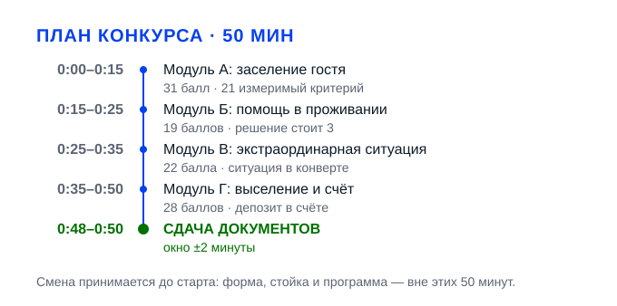
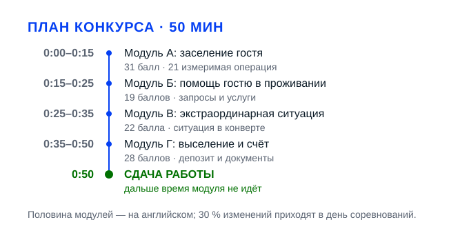
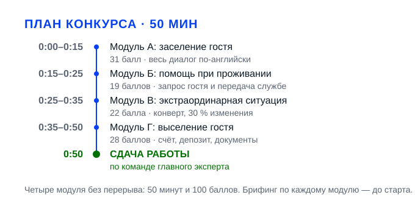

Администрирование отеля (Р,О)
Задания ниже — официальные файлы «Абилимпикс» (источник: abilympics-russia.ru), разложенные по категориям. Решения написаны по тексту задания, регламенту и критериям оценки; в них указано, что именно проверяет эксперт.
Школьник
14–16 лет, базовый уровень заданияВыдержка из официального конкурсного задания: страницы, относящиеся к категории «Школьник» (стр. 5–7 источника).
Пошаговое решение
Задание для школьников — 50 минут и 100 баллов: четыре модуля по 15, 10, 10 и 15 минут, от заселения гостя до его выселения, и всё это на русском языке. Оборудование — стойка приёма и размещения, компьютер с программой отеля, МФУ, намагничиватель ключ-карт и доска для ключей; участники выходят по жребию по одному, поэтому сравнивают не скорость печати, а чистоту процедуры. 62 балла из 100 — измеримые критерии по одному-два балла: поздоровался, спросил паспорт, вернул паспорт, назвал этаж, вычел депозит. Остальные 38 — оценочные, по 2 балла за вежливость, жесты, сосредоточенность, уверенность и стрессоустойчивость, и они набираются или теряются в каждом модуле заново. Ниже сорок пять шагов: что говорить, в каком порядке, чем проверить себя и где обычно рвётся цепочка.

Задача 1. Принять смену и подготовить стойкуДо старта · вне 50 минут
Смена начинается раньше, чем прозвучит команда «старт»: форма надета, стойка осмотрена, программа открыта, бланки разложены, ключ-карты под рукой. В КЗ это вынесено в отдельный пункт 6.2 «Действия до начала работ» — надеть форменную одежду, принять смену, убедиться в исправности оборудования. На подготовку не даётся конкурсного времени, и именно поэтому она экономит минуты внутри модулей: искать ручку или чистый бланк посреди заселения — значит терять те самые секунды, из которых складываются 15 минут модуля А.
Действие 1.1. Надеть форму и привести себя в порядок
Шаг 1.1.1
Форму надеваем до входа на площадку, а не за стойкой: тёмный пиджак, белая рубашка с длинными рукавами, брюки классические со стрелкой, галстук, ремень с простой пряжкой без логотипов, тёмные носки, тёмные начищенные туфли. Пиджак застёгиваем на верхнюю пуговицу и держим застёгнутым, пока стоим; рубашку заправляем полностью, манжета выглядывает из-под рукава на сантиметр. Бейдж крепим на груди слева, лицом вперёд — не на ремне, не на шнурке и не в кармане.
Требования к одежде администратора стойки приёма и размещения описаны в КЗ отдельным разделом, вплоть до цвета носков и материала обуви, — значит, это часть профессии, а не формальность. Балла за костюм в оценочном листе нет, но пять оценочных критериев модуля А по 2 балла («вежливость», «сосредоточенность», «жесты и мимика», «доброжелательность», «общение с гостем») эксперт ставит на общем впечатлении, а оно складывается до первой фразы.
Перед выходом проверяем по порядку: пиджак застёгнут, галстук по центру и доходит до пряжки ремня, брюки с заглаженной стрелкой, обувь без пыли и разводов, бейдж читается с двух метров. Попросите волонтёра посмотреть со спины: воротник, ярлык, шов на плече — то, чего вы сами не видите.
Самая частая ошибка — прийти в тёмном джемпере поверх рубашки или в тёмных кроссовках: на фотографии это похоже на костюм, вживую — нет. Вторая — повязывать галстук уже на площадке, второпях: короткий конец выше пряжки и перекошенный узел видны сразу, и первый контакт с экспертом начинается с этой мелочи.
Эксперт смотрит на участника до начала диалога, в момент выхода к стойке, и сверяет увиденное с разделом 3.1 КЗ. Оценивают не цену костюма, а соответствие: тёмный низ, светлый верх, закрытая обувь, бейдж на груди. Пометку он делает сразу, чтобы потом не возвращаться.
Шаг 1.1.2
Обувь и детали подбираем заранее и примеряем дома: туфли из кожи или тёмного текстиля, закрытый носок, каблук от 3 до 5 сантиметров — балетки, сандалии, шпильки и платформа из списка исключены. Белые туфли не надеваем ни при каком костюме. Женский вариант дополняем прозрачными колготками и шарфом, юбку выбираем не выше колена — разрез допустим, но тоже до колена. Мужской вариант держится на ремне без орнамента и тёмных носках, которые не видны, когда вы стоите.
Обувь в КЗ описана подробно именно потому, что за стойкой администратор проводит смену на ногах: неустойчивый каблук или открытый носок — это и вид, и риск споткнуться у стойки с ключами в руке. Кроме того, часть участников приходит в удобной обуви «потом переобуюсь», и переобувание съедает первые минуты модуля, которые в сумме складываются в те 15 минут, отведённые на заселение.
Пройдитесь десять шагов и развернитесь: каблук не подворачивается, носок не цепляется за ковролин, колготки без зацепок и стрелок, юбка при развороте не поднимается выше колена. Сядьте и встаньте — брюки не тянут, пиджак не расходится на спине.
Классическая ошибка — надеть новые туфли первый раз на конкурс: к третьему модулю мозоли меняют походку, а вместе с ней и осанку за стойкой. Вторая — белые или светлые туфли «под брюки», что прямо запрещено КЗ, и это видно даже на записи.
Эксперт проверяет обувь и детали костюма на входе, вместе с бейджем, и фиксирует замечания до старта — чтобы не отвлекать участника внутри модуля. Отдельно смотрит на каблук и носок туфель: именно по ним чаще всего идёт расхождение с КЗ.
Шаг 1.1.3
Руки: ногти короткие, подстриженные, без покрытия или с нейтральным маникюром и френчем, без длинных накладных пластин. Волосы убраны: короткие — по форме, длинные — в пучок или под заколку, чёлка не закрывает глаза, потому что за стойкой важен зрительный контакт. Украшения снимаем все, кроме обручального кольца; серьги — маленькие, без висящих деталей. Макияж нейтральный, без яркой помады и блёсток.
Всё это перечислено в КЗ как обязательное требование к внешнему виду участника, а не как пожелание. Практический смысл тоже есть: кольцо с камнем цепляется за бумагу при выдаче регистрационной формы, длинные ногти мешают нажимать клавиши и программировать карту, а висящие серьги отвлекают гостя от того, что вы говорите. Оценочные критерии «жесты и мимика» и «общение с гостем» стоят по 2 балла в каждом модуле и держатся на таких деталях.
Руки осмотрены при дневном или ярком свете: ногти одной длины, покрытия нет, лак не облупился. Волосы не выбиваются, если наклонить голову. Кольцо одно и плотно сидит, часы классические и не мешают движению запястья.
Оставить «тонкое» кольцо или часы с крупным браслетом — их заметно, и они цепляются за край стойки. Вторая ошибка — собранные волосы, из которых к середине смены выбиваются пряди: поправлять их за стойкой, при госте, считается нарушением этикета.
Эксперт фиксирует внешний вид целиком, одним взглядом, ещё до команды «старт», и в оценочных критериях модулей это отражается как часть образа администратора. Кольцо и часы он отмечает отдельно: их видно при выдаче документов.
Действие 1.2. Принять рабочее место по описи
Шаг 1.2.1
Осматриваем стойку так, как принимают смену: горизонтальная поверхность свободна, посторонних предметов нет, освещение рабочей зоны не слепит, кабели не свисают и не лежат под ногами. Включаем компьютер и открываем программу — до старта, а не в момент, когда гость уже стоит напротив. Проверяем МФУ: бумага загружена, лоток не пуст, копия и печать проходят. Отдельно смотрим намагничиватель ключ-карт и запас чистых карт: пустая карта должна записываться и читаться.
Пункт 6.2.3 КЗ прямо требует перед началом работы проверить освещение, целостность проводов, закрытие токоведущих устройств и отсутствие посторонних предметов. Но главное практическое: любая поломка, обнаруженная до старта, решается заменой или помощью эксперта, а обнаруженная в середине модуля А — съедает баллы, которые уже нельзя вернуть, потому что критерии оценки идут по одному за каждое действие.
Признаки исправности простые: программа открывается и показывает список гостей, тестовая печать выходит без полос, индикатор намагничивателя горит ровно, карта после записи открывает тестовую имитацию замка. Клавиатура и мышь на месте, экран повёрнут к вам, а не к гостю.
Начать модуль с невключённого компьютера: пока грузится система, гость стоит и ждёт, а эксперт отмечает отсутствие сосредоточенности — это 2 балла в модуле А. Вторая ошибка — не проверить бумагу в МФУ: копия паспорта не печатается, и один из двадцати одного измеримых критериев потерян на пустом месте.
Эксперт наблюдает за стартовой подготовкой краем глаза и отмечает, выходит ли участник к стойке готовым или начинает с поиска кнопки включения. Компьютер, МФУ и намагничиватель он проверяет сам до старта, поэтому поломка — не оправдание.
Шаг 1.2.2
Раскладываем документы по одному движению: список гостей на заселение, список на выезд, чистые регистрационные формы, бланки информационного счёта, ручка с рабочей пастой, папка для подписанных форм. Сверяем с легендой: под каким номером стоит ваш гость, какая категория номера, что включено в проживание, есть ли депозит. Отдельно держим перед глазами расписание работы ресторана, фитнес-центра и прачечной — эти цифры понадобятся в модулях А и Б.
Модуль А строится на деталях бронирования, а в 30 % изменений, которые вносятся в региональное задание, меняется именно тип брони — прямая или через турагентство. Поэтому цифры из легенды читаем до старта, а не выясняем у гостя на ходу: подтверждение деталей бронирования — отдельный критерий на 1 балл, и он снимается, если администратор путается в датах или категории номера.
Все четыре листа на месте, ручка пишет, в форме есть пустые строки для фамилии, даты и подписи. Вы можете, не листая, назвать: номер, категорию, даты заезда и выезда, время выезда по правилам отеля и включённое питание.
Держать документы стопкой в дальнем углу стойки: потом за ними нужно тянуться, поворачиваться спиной к гостю — это читается как неуверенность. Вторая ошибка — не посмотреть легенду вообще, рассчитывая, что «гость сам скажет»: гость скажет не всё, а критерий «подтверждает детали бронирования» требует, чтобы администратор назвал их первым.
Эксперт подходит к стойке до старта и смотрит, готова ли рабочая зона: разложены ли бланки, открыт ли список гостей, видно ли расписание услуг. По этому осмотру он понимает, читал ли участник легенду заранее.
Задача 2. Заселить гостя — модуль АМодуль А · 31 балл · 15 минут
Модуль А — 15 минут и 31 балл: двадцать один измеримый критерий по одному баллу и пять оценочных по два. Заселение идёт строго по цепочке, и цепочка не должна рваться: приветствие, уточнение брони, паспорт, поиск в списке, подтверждение деталей, подпись в регистрационной форме, копия паспорта, возврат документа, проверка номера, ключи, этаж, услуги, ресторан, стойка 24 часа, багаж, «чем ещё помочь», пожелание дня, передача в службы и не меньше трёх обращений по имени. Каждое звено — отдельная строка оценочного листа, поэтому пропущенная фраза стоит ровно один балл, а не «немного».
Действие 2.1. Встретить гостя и снять запрос
Шаг 2.1.1
Гость подходит — встречаем его стоя, корпус развёрнут к нему, руки не заняты бумагами, взгляд на уровне его глаз. Приветствие звучит в первые же секунды, до того как гость дойдёт до стойки: «Добрый день, добро пожаловать в отель». Голос ровный, темп спокойный, улыбка открытая, но не дежурная — уголки губ и взгляд, а не только рот. Если вы сидели за компьютером, встаём: администратор, который говорит с гостем не поднимаясь, теряет очки на ровном месте.
Приветствие — первая строка оценочного листа модуля А, 1 балл, и одновременно основа оценочного критерия «вежливость» на 2 балла. Эксперт ставит эти баллы в первые пять секунд модуля, и дальше их почти невозможно исправить: даже безупречно оформленные документы не перекрывают взгляд в монитор вместо гостя. В КЗ отдельно подчёркнуто, что первое впечатление гость получает именно у стойки приёма и размещения.
Проверьте себя по трём признакам: вы встали до того, как гость начал говорить; ваши глаза на его лице, а не на экране; приветствие прозвучало раньше, чем он назвал фамилию. Если гость успел сказать «здравствуйте» первым — приветствие уже смазано.
Самая частая ошибка — продолжать смотреть в монитор и здороваться «в экран»: формально фраза сказана, но критерий вежливости и жестов снимается, это минус 4 балла из пяти оценочных сразу. Вторая — приветствие скороговоркой на выдохе, когда гость не разбирает слова и переспрашивает.
Эксперт стоит в двух метрах и фиксирует момент приветствия: встал ли участник, куда смотрел, прозвучало ли обращение раньше запроса гостя. Эти один-два балла он ставит первыми, до того как начнётся работа с документами.
Шаг 2.1.2
Сразу после приветствия уточняем, на какую фамилию бронь: «Подскажите, пожалуйста, на какую фамилию оформлено бронирование». Фамилию записываем или повторяем вслух целиком, не сокращая. Дальше выясняем тип брони — прямая она или через турагентство, потому что от этого зависит, что именно нужно сверить: при прямой брони хватает фамилии и дат, при агентской появляется номер подтверждения или ваучер. Заодно уточняем количество гостей и наличие пожеланий.
«Уточняет детали бронирования» — отдельный критерий на 1 балл, и в 30 % изменений регионального задания меняется именно тип брони: прямая или через турагентство. Если администратор не спросил и начал искать гостя наугад, он теряет время внутри 15 минут модуля и рискует не найти бронь вовсе, а вместе с ней уходят ещё два критерия — поиск имени в списке и подтверждение деталей.
У вас на бланке или в памяти есть: фамилия, тип брони, количество гостей. Фамилия произнесена без ошибок и повторена гостю — он кивнул, а не поправил вас. Если гость называет фамилию по буквам, повторяем по буквам.
Спросить только фамилию и сразу нырнуть в компьютер: при агентской брони гость числится под другой транслитерацией, и поиск затягивается на минуты. Вторая ошибка — уточнять детали, уже держа паспорт в руках: порядок разговора сбит, гость не понимает, зачем его спрашивают дважды.
Эксперт слушает, какие вопросы задаёт участник, и отмечает, прозвучал ли вопрос о типе брони до работы с документами. Ответ он тоже слышит: в 30 % изменений тип брони меняется, и это видно по реакции участника.
Шаг 2.1.3
Просим документ, удостоверяющий личность, вежливо и однозначно: «Разрешите ваш паспорт, пожалуйста, я внесу данные». Паспорт берём двумя руками или одной, но не выхватываем и не уносим далеко от гостя — раскрываем на стойке, при нём, страницей с фотографией к себе. Сверяем лицо на фотографии с гостем, читаем фамилию, имя, отчество и серию с номером. До этого момента паспорт из поля зрения гостя не исчезает.
«Спрашивает документ, удостоверяющий личность» — 1 балл из 31, и это требование не формальное: без документа заселение невозможно по правилам предоставления гостиничных услуг, а копия паспорта делается только с согласия гостя. Кроме того, в модуле А отдельно оценивается возврат паспорта — то есть эксперт смотрит на всю цепочку обращения с документом, а не только на факт запроса.
Паспорт раскрыт, данные считаны, лицо сверено. Гость видит, что вы делаете с документом, и не тянется к нему через стойку. Корешок или обложка не замяты, страницы не перегибаются через край стойки. Если гость протянул руку за документом, вы отдаёте его сразу, не дожидаясь конца операции.
Забрать паспорт и уйти с ним к компьютеру, оставив гостя ждать: критерий возврата паспорта потом снять невозможно, а недоверие гостя уже возникло. Вторая ошибка — просить «права или что-нибудь с фотографией»: это не документ, и заселение формально не оформлено.
Эксперт смотрит на две вещи: прозвучала ли просьба вежливо и остаётся ли паспорт в зоне видимости гостя всё время, пока с ним работают. Момент возврата документа он отмечает отдельно, потому что это отдельная строка листа.
Действие 2.2. Найти бронь и оформить документы
Шаг 2.2.1
Ищем гостя в списке: сначала по фамилии, затем, если не находится, по датам заезда и категории номера. Работаем в системе или в бумажном списке — тем инструментом, который выдан на площадке; в КЗ упомянуты и электронные, и ручные системы проверки гостей. Найденную строку показываем себе пальцем или курсором, чтобы не потерять, и только после этого начинаем говорить: пока бронь не найдена, любые обещания гостю преждевременны.
«Находит имя в списке гостей» — 1 балл, и это тот критерий, который ломает всю дальнейшую цепочку, если провален: без найденной брони нельзя подтвердить детали, нельзя выдать ключ и нельзя корректно сформировать счёт в модуле Г. Поиск по фамилии с проверкой дат занимает секунды, если заранее открыт список на заселение, и минуты, если искать вслепую среди всех броней.
Бронь найдена: фамилия совпадает полностью, даты заезда и выезда совпадают с теми, что назвал гость, категория номера и питание видны в строке. Если совпадений несколько, выбираем по дате и категории и проговариваем выбор вслух.
Искать только по началу фамилии и остановиться на первом совпадении — при однофамильцах номер, даты и счёт уедут не тому гостю. Вторая ошибка — молча искать минуту-две: гость стоит и не понимает, что происходит, а оценочный критерий «сосредоточенность» на 2 балла уже под вопросом.
Эксперт видит экран или список сбоку и отмечает, нашёл ли участник строку самостоятельно, без подсказок и без вопросов к нему. Если поиск затянулся, он засекает время: в модуле 15 минут, и каждая минута поиска видна.
Шаг 2.2.2
Подтверждаем детали вслух, а не кивком: «Итак, Игорь Сергеевич, у вас забронирован номер категории такой-то с такого-то по такое-то число, завтрак включён, проживание оплачено за две ночи». Называем даты, категорию, питание, количество гостей и то, что уже оплачено, а что оплачивается на месте. После каждой пары фактов делаем паузу и смотрим на гостя — он должен успеть сказать «да» или поправить. Если он поправляет, фиксируем изменение сразу, а не после подписи.
«Подтверждает детали бронирования» — 1 балл, но фактически этот шаг защищает модуль Г: если администратор не назвал, что оплачено, при выселении всплывает спор о счёте, а формирование основного счёта стоит 2 балла. Проговаривание деталей — единственный способ поймать расхождение до того, как гость подпишет регистрационную форму, ведь подпись означает согласие с данными.
Гость подтвердил каждую группу деталей или внёс правку, и правка отражена в системе и в форме. Вы можете перечислить детали брони, не подглядывая: даты, категория, питание, оплата. Если гость поправил дату или категорию, вы проговариваете исправленное вслух ещё раз.
Сказать «всё верно, как бронировали» и сразу перейти к подписи: если в брони ошибка, гость обнаружит её вечером, и разбирать её будет другой администратор. Вторая ошибка — подтверждать, глядя в экран и не глядя на гостя: он не слышит и переспрашивает, диалог рассыпается.
Эксперт слушает, названы ли даты, категория и питание, и делает пометку, если участник ограничился общей фразой «всё как бронировали». Он также слышит, отреагировал ли администратор на поправку гостя.
Шаг 2.2.3
Кладём перед гостем регистрационную форму и ручку, поворачиваем бланк к нему правильной стороной и показываем пальцем, где подписывать: «Здесь, пожалуйста, подпись и дата». Не подсовываем лист молча и не держим его на весу. Пока гость пишет, стоим чуть сбоку, не нависая, и не начинаем следующую операцию — подпись должна быть поставлена на заполненной форме, а не на пустом поле. После подписи проверяем, что дата стоит и читается.
«Просит гостя подписать регистрационную форму» — 1 балл, и это юридическая основа заселения: подписанная форма подтверждает, что гость согласен с условиями проживания, правилами отеля и временем выезда. В модуле Г время выезда и порядок расчётов придётся называть снова, и ссылка на подписанную форму снимает половину спорных ситуаций — а спор в модуле В стоит 3 балла за «правильные решения».
Форма подписана, дата проставлена рукой гостя, бланк не перевёрнут и не залит. Подпись на месте, предусмотренном формой, а не на полях. Ручка после этого возвращена на стойку, а не унесена гостем. Второй экземпляр формы, если он предусмотрен, остаётся у отеля.
Подсунуть форму вверх ногами или без указания, где подписывать: гость ищет строку, теряется время, а в худшем случае ставит подпись на пустом листе, и форма юридически бесполезна. Вторая ошибка — забрать форму до того, как гость поставил дату.
Эксперт смотрит, как подана форма: развёрнута ли к гостю, показано ли место подписи, дождался ли участник, пока её поставят. Форму он может посмотреть после модуля — важно, заполнена ли она до подписи.
Шаг 2.2.4
Прежде чем нести паспорт к МФУ, спрашиваем разрешение: «Разрешите сделать копию страницы с фотографией и регистрацией — это требование отеля». Дождавшись «да», делаем копию одной страницы, не всей книжки, и сразу возвращаем паспорт гостю со словами «Спасибо, ваш паспорт». Копию кладём в папку к форме, лицом вверх, не оставляя её на стойке открытой. Если гость отказался — не спорим, фиксируем отказ и работаем по данным из формы.
Здесь сразу три критерия по 1 баллу: «спрашивает разрешения сделать копию», «делает копию необходимых данных паспорта» и «возвращает паспорт». Три балла берутся одной короткой фразой и одним движением, и они же самые обидные потери: участник делает копию идеально, но забывает спросить — минус балл; спрашивает, но уносит паспорт с собой и не возвращает — минус ещё один.
Копия читается: фамилия, номер и фотография различимы, лист не обрезан по краю текста. Паспорт в руках гостя или лежит перед ним закрытым, а не у вас под клавиатурой. В папке лежит ровно одна копия, без дублей и чужих страниц.
Сделать копию молча, «чтобы не отвлекать гостя»: балл за разрешение снят, а в жизни это ещё и нарушение порядка обработки персональных данных. Вторая ошибка — заложить паспорт под стойку «пока не закончу» и вернуть его через пять минут, когда гость уже начал нервничать.
Эксперт следит за паспортом весь эпизод: попросил ли участник разрешение, в какой момент документ вернулся к гостю и осталась ли копия на стойке. Три балла здесь ставятся или снимаются почти одновременно.
Действие 2.3. Проверить номер и выдать ключи
Шаг 2.3.1
Прежде чем программировать ключ, убеждаемся, что номер свободен и убран: смотрим статус в системе — номер должен быть в состоянии «свободен и готов», а не «на уборке» или «занят». Если статус не подтверждён, звоним в службу домоводства или уточняем у эксперта по площадке, но не выдаём ключ «на удачу». Проверяем заодно, что категория и этаж совпадают с бронью, а номер не стоит на ремонте.
«Проверяет, свободен ли номер и чистота номера» — 1 балл, и в реальном отеле это самая дорогая ошибка из всех: заселение в грязный или занятый номер — жалоба, переселение и испорченная репутация. В конкурсной легенде номер заведомо подготовлен, но проверка всё равно оценивается отдельно, потому что эксперт смотрит на процедуру, а не на удачное совпадение.
В системе статус номера — готов к заселению, этаж и категория совпадают с бронью, нет пометок о ремонте или поздний выезд предыдущего гостя. Вы можете назвать номер и этаж, не подглядывая. Номер не значится на ремонте и не заблокирован под группу.
Выдать ключ, не посмотрев статус: если номер занят, гость поднимется и вернётся через две минуты, а модуль А уже идёт по времени. Вторая ошибка — перепутать этаж и назвать гостю не тот номер, за это снимаются сразу два критерия: проверка номера и информирование о расположении.
Эксперт смотрит на экран и на то, переключился ли участник со статуса брони на статус номера перед выдачей ключа. Если статус не проверен, он видит это по последовательности действий, а не по словам.
Шаг 2.3.2
Программируем ключ-карту на стойке: вставляем чистую карту в намагничиватель, в системе выбираем номер и срок действия — по дату выезда включительно, до времени выезда. Дожидаемся подтверждения записи, вынимаем карту и проверяем её на считывателе: зелёный индикатор или короткий сигнал означают, что код лёг. Вкладываем карту в конверт вместе с номером и отдаём гостю из рук в руки, называя номер вслух: «Ваш номер 214, вторая линия, карта в конверте».
«Программирует ключи и отдаёт гостю» — 1 балл, но за ним стоит вся техника модуля: в КЗ отдельно упомянуты разные виды традиционных и электронных ключей и процедура выдачи. Карта, запрограммированная без проверки, может не сработать у двери — и тогда гость возвращается к стойке, а вы теряете время, которого в модуле всего 15 минут.
Карта записана и проверена: индикатор считал код, срок действия совпадает с датой выезда. Гость держит карту в руках, а не ищет её по стойке. Номер назван вслух и совпадает с тем, что в системе. Конверт с картой закрыт и подписан номером.
Записать карту «на глаз», не выбрав номер в программе, — карта откроет чужую дверь или не откроет ничего. Вторая ошибка — положить карту на стойку и продолжить говорить, не передав её гостю: критерий «отдаёт гостю» не закрыт, балл снят, а гость стоит и не понимает, можно ли брать.
Эксперт ближе всего подходит к стойке именно на этом шаге: смотрит, как участник обращается с намагничивателем, проверяет ли карту и как передаёт её гостю — из рук в руки или оставляет на стойке.
Шаг 2.3.3
Объясняем, где номер и как до него дойти, коротко и по делу: «Второй этаж, лифт прямо за углом направо, выходите и поворачиваете налево, номер 214 — третья дверь по правой стороне». Показываем направление рукой, а не только словами, и не разворачиваем гостя в противоположную сторону. Если лифта нет или он далеко, называем лестницу и количество этажей. Если у гостя багаж — упоминаем, что подъём на лифте удобнее.
«Информирует о месторасположении комнаты (этаж)» — 1 балл, и это тот критерий, который чаще всего закрывают одним словом «второй этаж» и теряют: эксперт смотрит, назван ли этаж, но и гость, которому не объяснили поворот, вернётся к стойке. Возвращение гостя внутри модуля означает, что дальше вы работаете в спешке, а спешка в модуле А стоит оценочных баллов.
Названы этаж, ориентир (лифт, лестница, поворот) и номер. Гость кивнул или переспросил — значит, он услышал и понял. Вы показали направление рукой, а не махнули в сторону коридора. Если гость идёт с багажом, вы упомянули лифт, а не лестницу.
Сказать «ваш номер наверху» — гость пойдёт искать, вернётся, и время модуля уйдёт. Вторая ошибка — путать право и лево от лифта: гость обходит этаж кругом, а вы получаете жалобу уже в модуле Б, где за решение ситуации стоят 3 балла.
Эксперт слушает объяснение маршрута и отмечает, назван ли этаж и есть ли ориентир, по которому гость дойдёт без подсказок. Жестикуляцию он оценивает здесь же, в связке с оценочными критериями модуля.
Действие 2.4. Рассказать об услугах и закрыть контакт
Шаг 2.4.1
Перечисляем дополнительные услуги отеля коротко, но конкретно: завтрак — где и с какого по какое время, Wi-Fi — название сети и пароль, прачечная и фитнес-центр — часы работы, парковка — где въезд. Говорим не списком из памятки, а тем, что нужно гостю: «Завтрак с 7 до 10 на первом этаже, Wi-Fi без пароля, сеть Hotel-Guest». Ресторан называем отдельно: где находится и в какие часы работает, включая ужин.
Два критерия сразу: «информирует о дополнительных услугах гостиницы» и «информирует о расписании работы и расположения ресторана» — по 1 баллу. В модуле Б эти же сведения придётся повторять по запросу гостя, и там за информирование об услугах тоже стоит балл: администратор, который уже проговорил всё при заселении, во втором модуле отвечает быстрее и точнее.
Названы как минимум три услуги с временем работы и местом, ресторан — с часами и этажом. Гость не переспрашивает «а во сколько завтрак?». Пароль Wi-Fi назван полностью, а не «написан на карте». Время работы названо по каждому пункту, а не «до вечера».
Ограничиться фразой «всё есть в папке в номере»: баллы за информирование снимаются, а гость придёт с вопросом вечером. Вторая ошибка — назвать время работы ресторана по памяти и ошибиться на час: гость приходит к закрытому залу, и это уже конфликт, то есть модуль В.
Эксперт слушает, какие услуги перечислены и названо ли время работы, особенно по ресторану. Он сверяет цифры с расписанием на площадке и отмечает, взяты ли они из памятки или придуманы на ходу.
Шаг 2.4.2
Проговариваем условия по дополнительным расходам: «Если вы будете пользоваться мини-баром или заказывать услуги в номер, расходы можно гарантировать картой — при выезде они войдут в общий счёт». Если отель берёт депозит, называем сумму и способ. Дальше предлагаем помощь с багажом: «Вам помочь поднять чемоданы?» — и, если гость согласен, фиксируем заявку, а не обещаем «сейчас кого-нибудь позовём» без исполнителя.
«Уточняет у гостя, будет ли гарантировать доп. расходы» — 1 балл, и «понадобится ли помощь с багажом» — ещё 1 балл. Оба вопроса напрямую готовят модуль Г: там администратор спрашивает, пользовался ли гость дополнительными услугами, и печатает информационный счёт. Если гарантия расходов не обсуждена при заселении, при выселении возникает спор о том, кто и как платит, — а основной счёт оценивается в 2 балла.
Вопрос о гарантии расходов задан и ответ зафиксирован: карта, наличные или отказ. Вопрос о багаже задан, ответ обработан — либо гость отказался, либо заявка передана. Ни один из двух вопросов не остался без ответа.
Пропустить оба вопроса, потому что «гость взрослый, сам скажет»: это минус 2 балла и одновременно дыра в модуле Г. Вторая ошибка — спросить про багаж и, получив «да», ничего не сделать: гость ждёт носильщика, которого никто не вызвал.
Эксперт отмечает в листе именно факт вопроса, а не его формулировку, но слушает, задан ли вопрос гостю, а не в монитор. Особенно внимательно — про гарантию расходов: от неё зависит расчёт в модуле Г.
Шаг 2.4.3
Закрываем контакт тремя фразами в правильном порядке: «Стойка работает круглосуточно, если что-то понадобится — звоните с номера или подходите», «Могу ли я ещё чем-то вам помочь?», и после ответа — «Хорошего дня, Игорь Сергеевич». Имя произносим в третий раз, итого за модуль их должно быть не меньше трёх. Сразу после прощания ставим в системе статус «заселён» и передаём сведения в службы: багаж, поздний завтрак, детская кроватка — то, что гость попросил.
Три критерия по 1 баллу — «стойка доступна 24 часа», «могу ли я ещё чем-то помочь», «желает хорошего дня» — и четвёртый, «обращается к гостю по имени минимум 3 раза», тоже 1 балл. Плюс «информирует соответствующие службы»: без этой передачи заявка существует только в вашей голове. Итого пять баллов в последние тридцать секунд модуля — самые дешёвые баллы всего конкурса, если о них помнить.
Имя прозвучало трижды и естественно: при подтверждении деталей, при выдаче ключа и на прощании. Фраза о круглосуточной стойке сказана. Вопрос «чем ещё помочь» задан после того, как гость получил ключ. Заявка в службу зафиксирована в системе или передана голосом при эксперте.
Попрощаться сразу после выдачи ключа: три-четыре балла из пяти теряются в одну секунду. Вторая ошибка — обращаться по имени только в приветствии: критерий требует минимум трёх обращений, и эксперт считает их по ходу модуля, а не по впечатлению.
Эксперт считает обращения по имени и фиксирует финальные фразы; после прощания он смотрит, отмечено ли заселение в системе и переданы ли пожелания гостя в службы.
Задача 3. Помочь гостю в проживании — модуль БМодуль Б · 19 баллов · 10 минут
Модуль Б — 10 минут и 19 баллов: девять измеримых критериев, из которых один стоит сразу 3 балла, и четыре оценочных по 2. Здесь гость приходит не с чемоданом, а с вопросом: где завтрак, во сколько закрывается бассейн, можно ли поменять номер, как вызвать такси. Половина баллов набирается процедурой — поздоровался, спросил имя и номер комнаты, проверил по списку, — а вторая половина держится на одном: насколько точно и по делу администратор решил ситуацию. Именно этот критерий, «принимает правильные решения в ситуации», весит больше всех остальных в модуле.
Действие 3.1. Открыть контакт и идентифицировать гостя
Шаг 3.1.1
Гость подходит к стойке — встаём, разворачиваемся к нему и здороваемся первыми: «Добрый день». Дальше сразу переходим к идентификации: «Подскажите, пожалуйста, ваше имя и номер комнаты». Вопрос задаём целиком, не «ваш номер?» — гостю проще ответить, когда понятно, зачем спрашивают. Имя запоминаем и дальше пользуемся им в разговоре, а не безличным «вы». Если гость называет только номер, имя уточняем отдельно — в списке оно есть.
Приветствие и вопрос об имени и номере — это три критерия по 1 баллу из 19: «приветствует гостей», «спрашивает имя гостя», «спрашивает номер комнаты гостя». Три балла берутся первыми пятнадцатью секундами модуля, и они же задают тон оценочным критериям «общение с гостем» и «уверенность в диалоге» по 2 балла. В модуле всего 10 минут, поэтому каждая лишняя переспрошенная деталь стоит дорого.
Приветствие прозвучало до того, как гость заговорил. Названы и имя, и номер комнаты, причём оба записаны или удержаны в памяти. Вы обращаетесь к гостю по имени уже со следующей фразы. Обращение по имени звучит естественно, а не вставлено в каждую фразу.
Спросить только «чем могу помочь» и начать разбираться без имени и номера: гость объясняет ситуацию, вы ищете его в списке наугад, теряете минуту из десяти и два балла измеримых критериев. Вторая ошибка — здороваться, не поднимая головы от экрана: вежливость формально есть, оценочные баллы уплывают.
Эксперт фиксирует приветствие и оба вопроса в первые секунды, а дальше слушает, пользуется ли участник именем гостя в разговоре или переходит на безличное обращение.
Шаг 3.1.2
Проверяем гостя по списку: находим фамилию, сверяем номер комнаты и даты проживания. Если номер, который назвал гость, не совпадает с тем, что в списке, не спорим и не говорим «у нас такого нет» — уточняем: «Проверю, одну секунду» — и ищем по фамилии. Найденную строку помечаем себе, чтобы дальше работать с точными данными: категория номера, оплата, услуги, особые отметки.
«Проверяет список гостей» — 1 балл, и это техническая основа всего модуля: без сверки невозможно ни правильно ответить про включённый завтрак, ни решить ситуацию с переселением. Критерий «принимает правильные решения в ситуации» стоит 3 балла, и он ставится именно за решение, построенное на фактах из списка, а не на догадке.
Строка найдена, номер и фамилия совпали, вы видите категорию и оплату. Если данные расходятся, расхождение замечено и уточнено у гостя, а не проигнорировано. Проверка заняла секунды, а не полминуты поиска.
Пропустить проверку, потому что «гость уже назвал номер»: дальше вы отвечаете про услуги, которых в этой категории нет, и ситуация превращается в жалобу. Вторая ошибка — громко объявить гостю, что он перепутал номер: это конфликт на пустом месте, а стрессоустойчивость оценивается в модуле В.
Эксперт смотрит, открыт ли список и сверяет ли участник данные, прежде чем давать ответ по существу. Если гость назвал номер, а участник его не проверил, это видно по дальнейшим вопросам и по паузам.
Действие 3.2. Понять запрос и дать точный ответ
Шаг 3.2.1
Выслушиваем запрос до конца, не перебивая, и уточняем то, без чего нельзя ответить: на какое время, на сколько человек, на сегодня или на завтра. Если гость говорит «у нас проблема с горячей водой» — уточняем, во всём номере или только в ванной, с какого времени, пробовали ли открыть кран дольше. Уточняющие вопросы задаём по одному, а не очередью из пяти: гость отвечает спокойнее, когда его слушают, а не допрашивают.
Точность ответа целиком зависит от точности вопроса: в КЗ сказано, что администратор должен уметь ответить на обычные запросы гостей и дать информацию по услугам и времени их работы. Критерий «принимает правильные решения в ситуации» на 3 балла — самый весомый в модуле, и он снимается, если решение принято по неполным данным. Кроме того, внимательность к деталям — отдельные 2 балла оценочных.
Вы можете пересказать запрос одним предложением, и гость с этим пересказом согласен. Уточнены время и объём запроса. Ни один вопрос не задан дважды, и гость ни разу не повторил свою просьбу. Запрос пересказан гостю до того, как вы начали искать решение.
Задать три вопроса подряд, не дав ответить: гость сбивается и начинает раздражаться, а раздражённый гость — это уже нагрузка на стрессоустойчивость. Вторая ошибка — додумать запрос «он наверное хочет поздний выезд» и начать решать не ту задачу.
Эксперт слушает, сколько уточняющих вопросов задано и не перебивает ли участник гостя. Для него важна не длина вопросов, а то, получен ли из них факт, на котором можно строить решение.
Шаг 3.2.2
Отвечаем по существу и с цифрами: «Завтрак с 7:00 до 10:30, на первом этаже, вход со стороны лобби»; «Бассейн работает до 22:00, полотенца выдаёт администратор на входе»; «Прачечная принимает вещи до 18:00, готово будет завтра после 14:00». Называем не только время, но и место и условие — то, что гость спросил бы следующим вопросом. Если услуга платная, говорим цену или где её посмотреть, но не «уточняйте на месте».
«Информирует о дополнительных услугах в гостинице» — 1 балл, и вместе с ним работает критерий «внимание к деталям» на 2 балла: эксперт слушает, названы ли часы работы и место, а не общая фраза «всё работает». В модуле Б время ограничено 10 минутами, поэтому ответ должен быть готовым, а не собираться по ходу разговора из памяти и наугад.
В ответе есть время, место и условие. Гость не задаёт уточняющий вопрос «а где это?». Если услуга недоступна сегодня, это сказано сразу, а не после того, как гость дошёл до закрытой двери. Условие «платно или включено» тоже названо.
Назвать время по памяти и ошибиться: гость приходит к закрытому залу, возвращается к стойке, и вы тратите остаток модуля на разбор. Вторая ошибка — отвечать «сейчас посмотрю» и уходить в компьютер на минуту: пауза в разговоре читается как неуверенность.
Эксперт сверяет названные цифры с расписанием на площадке и отмечает, прозвучали ли время и место. Ответ «всё есть на стенде» он фиксирует как отсутствие информирования.
Шаг 3.2.3
Если запрос нельзя выполнить так, как его сформулировали, предлагаем альтернативу сразу: «Бассейн сегодня закрыт на профилактику до 15:00, могу предложить сауну — она работает с 12:00, или забронировать бассейн на завтра». Альтернатива должна быть реальной и в вашей компетенции. Если решение требует другой службы, называем срок: «Инженер поднимется в течение 15 минут» — и фиксируем заявку, а не обещаем «сейчас разберёмся».
Здесь набираются самые дорогие баллы модуля: «принимает правильные решения в ситуации» — 3 балла, и именно за альтернативу, а не за отказ. В КЗ отдельно перечислено, что администратор должен уметь ответить на обычные запросы гостей и проинформировать о времени работы всех услуг; отказ без вариантов — это не информирование, а тупик, из которого гость выходит с жалобой.
У гостя есть выбор из двух вариантов или названный срок решения. Заявка зафиксирована: номер, суть, время передачи. Гость понял, что произойдёт дальше и когда, и не переспрашивает «то есть мне ждать?». Заявка передана голосом или через систему, а не запомнена.
Ответить «этого нельзя» и замолчать: 3 балла за решение ситуации снимаются целиком, а оценочный критерий «уверенность в диалоге» падает следом. Вторая ошибка — пообещать то, чего отель не делает, лишь бы гость ушёл довольным: обещание не выполнят, и конфликт вернётся в модуль В.
Эксперт оценивает именно качество предложенного решения — есть ли альтернатива и назван ли срок, а не только вежливый тон. Три балла он ставит за вариант, который гость принял, а не за перечисление возможностей.
Действие 3.3. Закрыть контакт и передать заявку
Шаг 3.3.1
Прежде чем отпустить гостя, задаём вопрос о впечатлениях: «Как проходит проживание, всё ли устраивает?» — и слушаем ответ, а не киваем на «всё хорошо». Если гость говорит о проблеме, не отмахиваемся и не обещаем «передать руководству»: уточняем детали и называем, что будет сделано. Затем предлагаем дополнительные услуги, если они уместны: «Если планируете поездку по городу, могу вызвать такси на завтра».
«Спрашивает, как проходит проживание» — 1 балл, «информирует о дополнительных услугах» — ещё один. Формально это два балла, фактически — сбор обратной связи, который в реальном отеле предотвращает жалобу: гость, у которого спросили, реже пишет отзыв. Оценочный критерий «внимание к деталям» на 2 балла ставится в том числе за то, услышал ли администратор проблему в ответе «вроде всё хорошо».
Вопрос задан и ответ выслушан до конца. Если прозвучала проблема — она зафиксирована с деталями: что именно, где, с какого времени. Дополнительная услуга предложена к месту, а не в пустоту. Предложенная услуга уместна запросу, а не взята из общего перечня.
Спросить «всё хорошо?» и, не дожидаясь ответа, продолжить: гость не успевает ничего сказать, а критерий считается незакрытым. Вторая ошибка — услышать жалобу и ответить «понятно»: это прямой переход в конфликтную ситуацию, где баллы уже другие.
Эксперт отмечает, дождался ли участник ответа и что сделал с полученной информацией. Формальное «всё хорошо?» на ходу он отличает от вопроса, после которого действительно слушают.
Шаг 3.3.2
Закрываем разговор тремя движениями: «Могу ли я вам ещё чем-то помочь?», после ответа — «Спасибо, что обратились», и прощание по имени: «Всего доброго, Игорь Сергеевич». Параллельно, не отворачиваясь от гостя, передаём заявку в нужную службу: звоним или вносим в систему — номер комнаты, суть, время. Заявка должна существовать вне вашей головы: через десять минут вы уже в другом модуле.
Три измеримых критерия по 1 баллу — «могу ли я ещё чем-то помочь», «благодарит и прощается с гостем», «информирует соответствующие службы», — и вместе с ними закрывается оценочное «общение с гостем» на 2 балла. Передача в службы здесь важнее, чем кажется: без неё решение, которое вы предложили гостю, останется словами, а эксперт оценивает именно процедуру.
Вопрос задан, благодарность и прощание прозвучали, заявка зафиксирована с номером комнаты и сутью. Гость ушёл, а не стоит в ожидании продолжения. Вы не начали новое дело, пока гость не отошёл от стойки.
Попрощаться раньше, чем гость договорил, — минус балл за общение и испорченное впечатление. Вторая ошибка — передать заявку «после», то есть никогда: эксперт проверяет, прозвучало ли информирование службы, и без него балл не ставится, даже если гость ушёл довольным.
Эксперт слушает финальные фразы и смотрит, сделана ли передача заявки до того, как участник переключился на следующее действие. Заявка без номера комнаты им не засчитывается.
Задача 4. Решить экстраординарную ситуацию — модуль ВМодуль В · 22 балла · 10 минут
Модуль В — 10 минут и 22 балла, самый непредсказуемый модуль: ситуацию участник получает в конверте на площадке, а в 30 % изменений регионального задания она меняется целиком. В КЗ приведены два примера: гость звонит из аэропорта, паспорт не вернули ни при заезде, ни при выезде, а вылет через полтора часа; второй — гость возмущается, что в ванной с потолка капает горячая вода. Алгоритм: приветствие, имя, номер, извинения, решение, компенсация, службы, прощание. Пять оценочных критериев по 2 балла — стрессоустойчивость, жесты, уверенность, внимание, общение — весят столько же, сколько решение.
Действие 4.1. Принять ситуацию без паники
Шаг 4.1.1
Как только гость подходит — встаём, встречаем его взглядом и здороваемся ровно, как в обычном модуле: «Добрый день». Возбуждённый гость говорит громче и быстрее, поэтому специально замедляем собственный темп: говорим на полтона ниже и чуть медленнее, чем он. Руки держим на стойке открыто, не скрещиваем, не отстраняемся корпусом назад. Первые пять секунд задают тон всему модулю, и эксперт смотрит именно на них.
«Администратор приветствует гостей» — 1 балл, и он не отменяется из-за конфликта: приветствие входит в процедуру всегда. Одновременно это старт оценочного критерия «стрессоустойчивость» на 2 балла — самого уязвимого в модуле. В КЗ сказано, что участник должен обладать стрессоустойчивостью и проявлять самообладание, то есть оценивают не только результат, но и поведение под давлением.
Приветствие прозвучало первым, голос ровный, вы стоите, корпус развёрнут к гостю, руки на стойке. Темп речи не ускорился вслед за гостем. Вы не начали оправдываться в первые секунды. Извинений в первые секунды нет, но и оправданий тоже.
Ответить на агрессию агрессией или начать с фразы «это не ко мне»: модуль фактически закончен, потому что за стрессоустойчивость и общение снимается 4 балла, а дальше гость не слышит ни извинений, ни решения. Вторая ошибка — молча смотреть в экран, пока гость выговаривается.
Эксперт стоит рядом и смотрит на первые секунды: поза, темп речи, направление взгляда. Это единственный момент, когда он видит участника без подготовленной реакции, и по нему ставит стрессоустойчивость.
Шаг 4.1.2
Как только гость сделал паузу, берём разговор в свои руки: «Подскажите, пожалуйста, ваше имя и номер комнаты». Имя нужно, чтобы обращаться лично, номер — чтобы мгновенно поднять данные и не переспрашивать дважды. Уточнив, повторяем суть своими словами: «Правильно понимаю, Игорь Сергеевич, у вас в ванной с потолка капает горячая вода?» — это и подтверждение понимания, и способ снизить накал.
«Спрашивает имя гостя» и «спрашивает номер комнаты гостя» — по 1 баллу, два балла из 22. Эти вопросы в конфликте работают ещё и психологически: гость переключается с эмоции на факт, называя данные, и говорит тише. Оценочный критерий «внимание к деталям» на 2 балла ставится за то, услышал ли администратор конкретику — где именно, с какого времени, что уже пробовал сделать.
Имя и номер получены, суть повторена и гость подтвердил её кивком или словами. Уточнены место и время проблемы. Гость больше не повторяет одно и то же по кругу. Вы называете гостя по имени уже во второй фразе, а не в конце.
Спросить только «что случилось?» и выслушать длинную эмоциональную речь без уточнений: время модуля уходит, а фактов для решения нет. Вторая ошибка — начать с номера комнаты, не спросив имя: обращение по имени в конфликте гасит напряжение сильнее любой фразы.
Эксперт отмечает, заданы ли оба вопроса и повторена ли суть проблемы своими словами до начала решения. Он также слушает, не перебил ли участник гостя на середине фразы.
Шаг 4.1.3
Извиняемся — коротко, один раз и от лица отеля, без «если вам показалось»: «Приношу извинения за эту ситуацию, сейчас разберёмся». Извинение произносим глядя на гостя, не в бланк и не в экран, и не прерываем его на середине. Если ситуация тяжёлая — повторяем извинение после решения, но не превращаем его в мантру: три извинения подряд звучат как беспомощность. Дальше сразу переходим к делу: «Я подниму инженера и проверю ваш номер».
«Приносит извинения за сложившуюся ситуацию» — 2 балла, вдвое больше обычного критерия. В КЗ извинение вынесено в отдельную строку оценочного листа, потому что без него любое, даже правильное решение воспринимается гостем как отписка. Одновременно это проверка на самообладание: извиниться спокойно, не оправдываясь и не обвиняя коллег, — часть профессионального поведения администратора.
Извинение прозвучало один раз, внятно, с обращением по имени и без условий. Гость после него либо кивнул, либо снизил тон. Следующая фраза — про действие, а не про регламент. После извинения вы сразу называете действие, а не регламент.
Сказать «извините, но это не наша вина, у нас ремонт у соседей»: извинение с оговоркой не считается, 2 балла снимаются, а разговор уходит в спор о виноватых. Вторая ошибка — извиняться, глядя в монитор, и продолжать печатать.
Эксперт слушает формулировку извинения и смотрит, прозвучало ли оно до объяснений и оправданий. Извинение с оговоркой «но мы не виноваты» он фиксирует как отсутствующее.
Действие 4.2. Разобраться и предложить решение
Шаг 4.2.1
Проверяем факты, не отходя от гостя далеко: поднимаем в системе данные по номеру, смотрим, есть ли открытые заявки по этому номеру, звоним в инженерную службу или службу домоводства — в зависимости от ситуации. Вслух комментируем то, что делаете: «Сейчас проверю, есть ли заявка по вашему номеру». Если проблема требует выезда на место, называем, кто и когда поднимется, и не отправляем гостя «посмотреть самому».
«Принимает правильные решения в ситуации» — 3 балла, самая большая строка модуля. Решение не берётся из воздуха: в КЗ прямо сказано, что участник должен найти правильное решение согласно алгоритму действий в экстраординарных ситуациях. Алгоритм всегда строится на факте — что произошло, где, кто отвечает за устранение, — поэтому проверка данных идёт раньше обещаний.
Вы можете назвать: что случилось, кто этим занимается, через сколько будет устранено. Заявка зафиксирована в системе или передана голосом при эксперте. Гость не остаётся в неведении дольше пятнадцати секунд.
Обещать «сейчас всё исправят» без заявки: через пять минут ничего не меняется, гость возвращается, и 3 балла за решение уже не вернуть. Вторая ошибка — уйти в подсобку «уточнить» на минуту-две: в модуле 10 минут, а гость без администратора у стойки приходит в ещё большее возбуждение.
Эксперт слушает, из каких фактов участник исходит, и проверяет, передана ли заявка реально, а не на словах. Время реакции он тоже засекает: пауза больше пятнадцати секунд считается потерей контакта.
Шаг 4.2.2
Предлагаем решение конкретно и с вариантами: переселить в другой номер той же категории прямо сейчас, вызвать инженера с обещанным сроком, перенести обслуживание. Если ситуация того требует — предлагаем компенсацию: скидку на проживание, бесплатный завтрак, комплимент от отеля, поздний выезд. Компенсацию называем в рамках, которые обозначены в легенде, и формулируем как решение, а не как подачку: «Мы переселим вас в номер 312, поможем с вещами, а завтрак завтра — за счёт отеля».
«Предлагает компенсацию» — 1 балл, и он ставится только за конкретное предложение, а не за «мы что-нибудь придумаем». Вместе с 3 баллами за решение это четыре балла из 22, и они держатся на одном: у гостя должен появиться выбор. В КЗ компенсация вынесена отдельной строкой, потому что именно она переводит конфликт в договорённость.
Предложение прозвучало целиком: что делаем, когда, за чей счёт. Гость согласился или выбрал альтернативу. Компенсация не превышает того, что разрешено легендой, и названа без торга. Если гость попросил больше, вы предложили альтернативу в тех же рамках.
Предложить «мы подумаем, чем вас порадовать»: балл за компенсацию не ставится, гость не понимает, что получит. Вторая ошибка — раздавать скидку в 100 % и бесплатные ужины: это выход за рамки, и эксперт фиксирует несоразмерность как неправильное решение.
Эксперт оценивает соразмерность компенсации и то, прозвучало ли предложение до того, как гость начал его требовать. Слишком щедрая компенсация фиксируется как выход за рамки легенды.
Шаг 4.2.3
Параллельно передаём информацию в службы: инженеру — заявку с номером и сутью, домоводству — про уборку после протечки, руководству — если ситуация выходит за рамки. Делаем это при госте и вслух проговариваем: «Инженер поднимется через десять минут, я записал заявку на ваш номер». Если компенсация обещана, фиксируем её в системе, чтобы при выселении в модуле Г она уже стояла в счёте, а не всплыла спором.
«Информирует соответствующие службы» — 1 балл. Но практическая цена выше: обещанная компенсация, не внесённая в систему, превращается в конфликт при выселении, где формирование основного счёта стоит 2 балла. В модуле Г проверяется, спрашивает ли администратор про дополнительные услуги, и незафиксированная компенсация выглядит как ошибка начисления.
Заявка создана с номером комнаты и описанием. Компенсация внесена в счёт или отмечена в брони. Вы можете назвать, кто и когда получил информацию, не заглядывая в записи. В заявке есть номер комнаты, иначе служба не найдёт адрес.
Сказать «я передам» и не передать: балл за информирование служб снимается, а проблема остаётся, и гость возвращается к стойке. Вторая ошибка — передавать заявку, отвернувшись и скороговоркой, пока гость ждёт: он не слышит, что что-то происходит.
Эксперт проверяет, прозвучала ли передача информации при госте и внесена ли компенсация в систему. Он может сверить это с экраном после модуля — поэтому обещание «передам позже» не засчитывается.
Действие 4.3. Закрыть конфликт
Шаг 4.3.1
Убеждаемся, что гость понял договорённость: «Итак, Игорь Сергеевич, инженер поднимется через десять минут, вещи я помогу перенести в 312-й, завтрак завтра за счёт отеля». После этого задаём вопрос «Могу ли я вам ещё чем-то помочь?» — и ждём ответа, а не произносим его для галочки. Если гость всё ещё напряжён, предлагаем проводить его до номера или вызвать сотрудника, чтобы он не оставался один с проблемой.
«Могу ли я ещё чем-то помочь» — 1 балл, и в конфликте этот вопрос работает как проверка: гость либо подтверждает, что вопрос закрыт, либо добавляет деталь, которую вы не учли. Оценочный критерий «общение с гостем» на 2 балла ставится в том числе за то, довёл ли администратор разговор до состояния, когда гость успокоился, а не просто замолчал.
Гость может пересказать договорённость — или кивнул и не задал уточняющих вопросов. Вопрос «чем ещё помочь» задан после решения, а не вместо него. Тон гостя сравнялся с вашим. Если гость добавил новую деталь, вы отработали и её.
Задать «чем ещё помочь» до того, как решение озвучено: гость воспринимает это как желание отделаться, и напряжение возвращается. Вторая ошибка — считать конфликт закрытым по факту молчания гостя: он может уйти к управляющему, и это уже эскалация.
Эксперт смотрит на реакцию гостя после вопроса и на то, повторил ли участник договорённость целиком. Именно здесь видно, закрыт конфликт по существу или только по форме.
Шаг 4.3.2
Завершаем разговор благодарностью и прощанием по имени: «Спасибо, что сообщили нам, Игорь Сергеевич. Всего доброго». Благодарность в конфликте — не формальность: гость услышал, что его сигнал ценен. После того как он отошёл, выпрямляемся, делаем вдох и только потом возвращаемся к работе: следующий гость не должен увидеть на вашем лице остатки предыдущего разговора. Если остаётся нерешённое — фиксируем его в передаче смены.
«Благодарит и прощается с гостем» — 1 балл, и вместе с ним закрываются оценочные «жесты и мимика», «уверенность в диалоге» и «стрессоустойчивость» — по 2 балла каждый. Всего в модуле 22 балла, и 10 из них оценочные: эксперт ставит их по тому, как участник держался в начале и в конце, а не только по содержанию ответов.
Благодарность и прощание прозвучали, имя произнесено, взгляд на гостя. После ухода гостя поза и лицо вернулись в рабочее состояние за пару секунд. Нерешённое зафиксировано для передачи. Ключи и документы убраны со стойки до прихода следующего гостя.
Закончить разговор на фразе «всего доброго» без благодарности или, наоборот, продолжать извиняться, когда гость уже уходит: и то и другое читается как неуверенность, а критерий уверенности в диалоге стоит 2 балла. Вторая ошибка — выдохнуть с раздражением при госте.
Эксперт оценивает финальные секунды модуля: чем закончился разговор и в каком состоянии участник встретил следующее задание. Раздражение, сброшенное после ухода гостя, он видит и отмечает.
Задача 5. Выселить гостя — модуль ГМодуль Г · 28 баллов · 15 минут
Модуль Г — 15 минут и 28 баллов, самый дорогой из четырёх: восемнадцать баллов дают измеримые критерии, из которых два весят по 2 — корректно сформированный основной счёт и выдача отчётных документов, — и десять баллов оценочные, по 2 за каждое из пяти наблюдений. Здесь проверяется то, что в КЗ названо прямо: время выезда, порядок выставления счёта, разные типы оплаты и учёт авансовых депозитов. Ошибка в счёте видна сразу и стоит дорого, поэтому расчёт идёт по шагам, а не «одной кнопкой».
Действие 5.1. Встретить гостя на выезде
Шаг 5.1.1
Гость подходит с чемоданом — встаём, здороваемся первыми: «Добрый день». На выезде гость обычно торопится на транспорт, поэтому не тянем с началом разговора и не заканчиваем предыдущую операцию «сейчас-сейчас». Взгляд на гостя, корпус к нему, руки свободны. Если он подошёл раньше официального времени выезда, это нормально и не требует замечаний: время выезда называют в разговоре, а не вместо приветствия.
«Администратор приветствует гостя» — 1 балл в модуле на 28, и он открывает цепочку из восемнадцати измеримых критериев. Приветствие на выезде часто пропускают именно потому, что гость «уже знаком»: но оценочный лист ведётся по модулю, а не по человеку, и строка остаётся пустой. Заодно с приветствия начинаются оценочные «общение с гостем» и «доброжелательность» — по 2 балла.
Приветствие прозвучало до того, как гость положил ключ на стойку. Вы стоите, смотрите на гостя, не заняты бумагами. Пауза перед началом разговора не больше двух секунд. Ключ принят в руку, а не пододвинут по стойке.
Молча протянуть руку за ключом: гость не понимает, начался ли процесс, и оценочные баллы за общение снимаются вместе с измеримым. Вторая ошибка — здороваться, продолжая печатать: на выезде это читается как «поскорее бы».
Эксперт фиксирует приветствие в самом начале модуля и отмечает, оторвался ли участник от текущей работы. На выезде это особенно заметно: гость стоит с чемоданом, а администратор дописывает бумагу.
Шаг 5.1.2
Спрашиваем имя и просим ключи одной связкой: «Подскажите, пожалуйста, вашу фамилию» — и, получив ответ, «Передайте, пожалуйста, ключи от номера». Ключи принимаем в руки, а не «бросьте на стойку», и сразу сверяем номер на карте или брелке с тем, что в системе. Если ключей два, считаем оба. Если гость говорит, что карту потерял, — фиксируем это сразу: потеря оплачивается по тарифу отеля, и об этом говорят в счёте.
«Спрашивает имя гостя» — 1 балл, «просит ключи от номера» — ещё 1. Ключи нужны не для порядка: по номеру на карте администратор находит бронь и счёт, а без них поиск идёт по фамилии и занимает лишние минуты из 15. Потерянная карта — отдельная строка расходов, и в реальном отеле её стоимость входит в счёт, поэтому фиксируется до расчёта.
Фамилия названа и записана, ключи у вас в руке, номер на карте совпадает с номером в системе. Второй ключ тоже получен или гость объяснил, где он. Потеря зафиксирована, если о ней сказали. Номер ключа и номер в системе совпали до открытия счёта.
Взять ключи и не сверить номер: дальше вы выставляете счёт по чужой брони, и ошибка в основном счёте стоит 2 балла. Вторая ошибка — не спросить имя, работая «по номеру»: критерий на 1 балл теряется, а обращение по имени на прощании становится невозможным.
Эксперт смотрит, приняты ли ключи и сверен ли номер, а также прозвучал ли вопрос о фамилии. Он же отмечает, что участник сделал с информацией о потерянной карте: промолчал или внёс в счёт.
Шаг 5.1.3
Спрашиваем, как прошло проживание: «Как вам у нас, всё понравилось?» — и слушаем. Если гость говорит о проблеме, не спорим и не защищаемся: уточняем, что именно, и фиксируем для передачи. Ответ «всё хорошо» тоже ответ: коротко поблагодарите — «Рады, что вам понравилось». Этот вопрос задаётся до счёта, а не после: пока гость не рассчитан, у вас есть возможность что-то исправить или хотя бы объяснить.
«Спрашивает, как прошло проживание» — 1 балл, и он стоит перед расчётом не случайно: обратная связь, собранная до счёта, снижает вероятность спора о начислениях. Оценочный критерий «внимание к деталям» на 2 балла ставится за то, услышал ли администратор конкретику в ответе и что с ней сделал. В реальном отеле этот вопрос — единственная возможность перехватить негативный отзыв до публикации.
Вопрос задан до того, как вы открыли счёт. Ответ выслушан целиком. Если прозвучала претензия — она зафиксирована с деталями и названо, что будет сделано. Если гость говорит «всё хорошо», вы уточнили хотя бы одну деталь: номер, завтрак, уборку.
Задать вопрос и, не слушая, перейти к счёту: гость замолкает, а претензия уходит в отзыв, минуя вас. Вторая ошибка — начать спорить с негативом у стойки: это конфликт, который в модуле Г не оценивается, но снимает баллы за общение и доброжелательность — 4 балла.
Эксперт слушает, дождался ли участник ответа и как отреагировал на критику. Вопрос, заданный на ходу, между печатью документов, он отличает от вопроса, после которого разговор действительно состоялся.
Действие 5.2. Сверить начисления с гостем
Шаг 5.2.1
Открываем список на выезд и находим гостя: фамилия, номер, даты заезда и выезда, статус оплаты. Сверяем фактическую дату выезда с забронированной: если гость задержался, появляется доплата за поздний выезд, и о ней говорят до печати счёта. Проверяем, нет ли в брони отметок о депозите или гарантии расходов — они понадобятся при формировании счёта. Найденную строку держим перед глазами до конца модуля.
«Проверяет список на выезд» — 1 балл, и это точка, где ловятся самые дорогие ошибки: неверная дата выезда даёт неверную сумму, а неверная сумма — спор и потеря 2 баллов за корректный основной счёт. В КЗ отдельно указано, что администратор должен знать время выезда и порядок учёта авансовых депозитов, то есть проверка идёт по трём параметрам: даты, депозит, гарантия.
Строка найдена, даты совпадают или расхождение выявлено и объяснено. Статус оплаты понятен: что оплачено, что нет, какой депозит внесён. Вы можете назвать сумму к оплате до печати счёта. Отметка о депозите найдена в брони, а не восстановлена по памяти.
Печатать счёт сразу, не открывая список: в счёте оказываются чужие услуги или не учтён депозит, и гость находит расхождение раньше вас. Вторая ошибка — не заметить поздний выезд и не начислить доплату: недополученная сумма фиксируется как ошибка расчёта.
Эксперт смотрит на экран и отмечает, сверены ли даты и депозит до печати документов. Ошибку в дате выезда он фиксирует сразу, потому что она автоматически искажает основной счёт.
Шаг 5.2.2
Спрашиваем напрямую: «Пользовались ли вы дополнительными услугами — мини-баром, прачечной, заказом в номер?» — и параллельно сверяем начисления в системе по номеру. Если гость говорит «нет», а в системе есть позиция, не обвиняем: показываем позицию с датой и временем и уточняем вместе. Если гость признаёт услугу, которую не внесли, — добавляем её сразу. Расхождение в обе стороны разбирается до печати, а не после.
«Спрашивает, пользовался ли гость дополнительными услугами» — 1 балл. Вопрос нужен, чтобы не выставить счёт за то, чего не было, и не потерять то, что было: оценочный критерий «внимание к деталям» на 2 балла напрямую связан с этой сверкой. В КЗ порядок выставления счёта при выезде описан как отдельное умение, и сверка услуг — его первый шаг.
Список начислений сверен по каждой позиции: услуга, дата, сумма. Гость подтвердил или оспорил каждую. Ни одна позиция не осталась «на потом». Расхождение разобрано до печати: либо позиция снята, либо гость согласился.
Не спросить и напечатать счёт с мини-баром, которого гость не брал: спор у стойки, минус балл за вопрос и минус доверие. Вторая ошибка — поверить на слово и снять все начисления: недостача фиксируется как ошибка расчёта.
Эксперт слушает формулировку вопроса и смотрит, сверяются ли начисления по системе, а не только по словам гостя. Позиция, названная гостем и не найденная в системе, его интересует отдельно.
Шаг 5.2.3
Уточняем, нужно ли разделить счёт: «Вам оформить один счёт на всё проживание или разделить — например, проживание отдельно, услуги отдельно?» Вопрос уместен, когда в брони несколько гостей или оплачивает компания. Если гость просит разделить, уточняем принцип: по услугам, по гостям или по датам, — и проговариваем его вслух перед печатью. Разделение делаем до формирования основного счёта, иначе придётся переделывать.
«Спрашивает, нужно ли разделить счёт гостю на услуги» — 1 балл. Критерий существует потому, что в реальной практике командировочный гость платит за проживание картой компании, а за мини-бар — наличными, и счёт должен быть готов к этому до печати. Если разделение всплывает после формирования основного счёта, его приходится переделывать, а это прямые потери времени в 15-минутном модуле.
Вопрос задан до печати. Принцип разделения назван и понят гостем. Если разделение не нужно — это прозвучало явно, а не подразумевается. Если гостей двое, вы уточнили, кто платит за услуги, а кто за проживание.
Пропустить вопрос и напечатать общий счёт: гость просит переделать, вы тратите минуты и рискуете ошибиться в сумме. Вторая ошибка — разделить «как удобно отелю», не спросив гостя: получится два счёта, ни один из которых ему не подходит.
Эксперт отмечает факт вопроса и то, уточнён ли принцип разделения. Если счёт разделён без вопроса, он видит это по числу распечатанных документов и по реакции гостя.
Шаг 5.2.4
Печатаем информационный счёт — список дополнительных расходов — и подаём его гостю, развернув к нему и показав пальцем на итог: «Вот ваши дополнительные услуги: мини-бар на 400 рублей, прачечная на 350, итого 750». Проговариваем каждую позицию, а не только сумму. Если позиций много, называем крупные и общий итог. Счёт не подсовываем и не убираем сразу — гость должен успеть прочитать и задать вопрос.
«Распечатывает список доп. расходов (информационный счет)» — 1 балл. Информационный счёт — это документ до оплаты: он показывает, из чего сложилась сумма, и снимает половину споров ещё до кассы. В КЗ он назван отдельной строкой, между вопросом о разделении счёта и вопросом о способе оплаты, — то есть подаётся гостю до расчёта, а не вместе с чеком.
Лист напечатан, читается, позиции совпадают с тем, что вы проговаривали. Итог назван вслух и совпадает с суммой в документе. Гость держит счёт в руках или видит его перед собой. Позиции названы с суммами, а не только итог.
Напечатать информационный счёт и молча положить на стойку: гость не понимает, что это, и воспринимает как сюрприз. Вторая ошибка — подать сразу основной счёт с итоговой суммой, без расшифровки: критерий не закрыт, а недоверие уже возникло.
Эксперт смотрит, подан ли документ гостю и проговорены ли позиции. Информационный счёт, оставленный на стойке необъяснённым, он считает непредъявленным.
Действие 5.3. Принять оплату и выдать документы
Шаг 5.3.1
Спрашиваем способ оплаты: «Как вам удобно оплатить — наличными или картой?» — и называем сумму до того, как гость достал кошелёк. Если наличными: принимаем купюры, пересчитываем при госте вслух, называем сумму к оплате и сдачу, сдачу отсчитываем при нём же. Если картой: называем сумму, проводим операцию на терминале, дожидаемся подтверждения и только потом возвращаем карту и говорим, что оплата прошла.
Два критерия по 1 баллу: «узнаёт, каким способом будет оплачивать гость» и «получает денежные средства от гостя». В КЗ упомянуты различные типы оплаты, и разница существенна: при наличных важен пересчёт при госте, при карте — подтверждение операции, иначе гость уходит с мыслью, что деньги списались дважды. Ошибка на этом шаге тянет за собой корректность основного счёта на 2 балла.
Способ оплаты назван гостем явно. Сумма произнесена до передачи денег или карты. При наличных сдача отсчитана при госте, при карте — есть подтверждение операции. Деньги или карта возвращены в руки, а не оставлены на стойке.
Взять деньги и уйти к кассе, не пересчитав при госте: любые расхождения потом не доказать, и в реальном отеле это недостача. Вторая ошибка — не назвать сумму до оплаты: гость достаёт карту, слышит другую цифру и начинает сомневаться в каждом начислении.
Эксперт наблюдает за приёмом денег и проверяет, названа ли сумма и возвращена ли сдача. При оплате картой он смотрит на терминал: подтверждение операции должно появиться до возврата карты.
Шаг 5.3.2
Формируем основной счёт — по шагам, а не одной кнопкой: проживание за фактические даты, дополнительные услуги из информационного счёта, вычет авансового депозита, если он вносился, доплата за поздний выезд, если он был. Проверяем каждую строку на экране до печати: даты, количество ночей, категория номера, суммы услуг. Затем печатаем и подаём гостю, называя итог к оплате и отдельно — сколько уже зачтено депозитом.
«Формирует основной счет (корректно)» — 2 балла, вдвое больше обычной строки, и это единственный критерий модуля, где прямо написано слово «корректно». В КЗ отдельно указан порядок учёта авансовых депозитов при подготовке счёта: если депозит не вычесть, гость заплатит дважды, и это самая заметная ошибка всего конкурса.
Сумма в счёте совпадает с вашим расчётом вслух: проживание плюс услуги минус депозит. Все строки читаемы, даты верные, количество ночей соответствует заезду и выезду. Итог к оплате назван гостю до печати и совпал с тем, что напечатано.
Напечатать счёт, не вычтя депозит: гость видит сумму вдвое больше ожидаемой, 2 балла снимаются, и разговор переходит в спор. Вторая ошибка — считать «на глаз», не сверив количество ночей: одна лишняя ночь в счёте стоит дороже любых оценочных баллов.
Эксперт подходит к стойке на этом шаге и сверяет напечатанный счёт с данными брони и депозита. Он смотрит на итоговую сумму и на строку депозита: расхождение видно сразу, без чтения остальных строк.
Шаг 5.3.3
Выдаём отчётные документы комплектом: кассовый чек, счёт с печатью и подписью, при необходимости — справку о проживании или акт. Складываем в папку или конверт, а не отдаём россыпью, и передаём из рук в руки, перечисляя: «Ваш чек, счёт и справка для отчётности». Если гость просит копию или документ на компанию — уточняем реквизиты и говорим, когда документ будет готов, но оригиналы отдаём сразу.
«Выдача отчетных документов гостю» — 2 балла, второй по весу критерий модуля. В КЗ сказано, что администратор должен уметь работать с документацией по регистрации заезда и выезда, и комплект при выезде — это финальная точка: без чека гость не отчитается по командировке, и в реальном отеле это претензия с возвратом.
В комплекте есть чек и счёт, на счёте видны реквизиты, дата и сумма, документы не мятые и не перепутаны с чужими. Гость держит их в руках, вы перечислили состав комплекта вслух. Ничего не осталось на стойке.
Отдать один чек без счёта или наоборот: 2 балла снимаются, а гость возвращается через день за справкой. Вторая ошибка — отдать документы вперемешку с чужими бумагами со стойки: гость уносит лишнее, а вы теряете документ другого гостя.
Эксперт смотрит на комплект в руках гостя и на то, перечислен ли состав документов. Чек без счёта или счёт без чека он фиксирует как неполную выдачу, даже если гость не заметил.
Действие 5.4. Закрыть выезд
Шаг 5.4.1
Предлагаем помощь с багажом и такси — одной связкой: «Вам помочь с чемоданами и вызвать такси?» Если гость согласен, уточняем время и адрес, фиксируем заявку и говорим, где ждать машину. Если отказывается — не настаиваем, но обязательно произносим предложение вслух, а не подразумеваем. После этого задаём вопрос «Могу ли я вам ещё чем-то помочь?» и ждём ответа, прежде чем переходить к прощанию.
Два критерия по 1 баллу: «спрашивает, нужна ли помощь с багажом и вызвать ли такси» и «узнаёт, может ли ещё чем-нибудь помочь». Оба вопроса звучат в конце модуля, когда участник уже расслабился, и именно поэтому их чаще всего забывают — а вместе с ними теряются 2 балла и часть оценочного «общение с гостем в процессе выполнения задания» на 2 балла.
Предложение прозвучало целиком: багаж и такси. Вопрос «чем ещё помочь» задан после него. При согласии гостя заявка зафиксирована с временем и адресом, а не осталась словами. Вопрос «чем ещё помочь» прозвучал после предложения, а не вместо него.
Спросить только про такси, забыв про багаж: критерий сформулирован через «и», и половина строки не закрывает балл. Вторая ошибка — задать вопрос скороговоркой, уже протягивая документы: гость не слышит и не отвечает.
Эксперт отмечает оба вопроса отдельно и слушает, обращён ли вопрос к гостю, а не в воздух. Предложение, сделанное после прощания, он уже не засчитывает.
Шаг 5.4.2
Прощаемся по имени, с благодарностью: «Спасибо, что выбрали наш отель, Игорь Сергеевич. Всего доброго, ждём вас снова». Это третье обращение по имени за модуль — считаем: первое при приветствии, второе при сверке счёта, третье на прощании. После ухода гостя закрываем процедуру в системе: статус номера переводим в «грязный» или «на уборку», выезд отмечаем, ключи убираем в отведённое место.
«Благодарит и прощается с гостем» — 1 балл, «обращался к гостю по имени минимум 3 раза» — ещё 1. Пять оценочных критериев по 2 балла — общение, внимание к деталям, жесты и мимика, доброжелательность, общение в процессе выполнения — закрываются последними секундами модуля. И статус номера: в реальном отеле незакрытый выезд означает, что номер не уйдёт в уборку и следующий гость получит грязную комнату.
Имя прозвучало трижды и естественно. Благодарность и прощание сказаны глядя на гостя. В системе выезд отмечен, статус номера изменён, ключи убраны. Рабочая поверхность стойки осталась в исходном порядке.
Попрощаться без имени: критерий на 1 балл не закрыт, а оценочная доброжелательность падает. Вторая ошибка — не перевести номер в статус уборки: процедура выселения формально не завершена, и в реальной работе это приводит к заселению в неубранный номер.
Эксперт считает обращения по имени и после ухода гостя проверяет, изменён ли статус номера и приведена ли стойка в порядок. Порядок на стойке он отмечает и в этот момент, и в конце смены.
Студент
учащиеся колледжей и техникумовВыдержка из официального конкурсного задания: страницы, относящиеся к категории «Студент» (стр. 5–7 источника).
Пошаговое решение
Задание для категории «Студенты» — четыре модуля за 50 минут на одном рабочем месте: заселение гостя (15 минут, 31 балл), помощь гостям в процессе проживания (10 минут, 19 баллов), экстраординарная ситуация (10 минут, 22 балла) и выселение (15 минут, 28 баллов). Всего 100 баллов: 62 дают 55 измеримых операций по 1–3 балла, 38 — девятнадцать оценочных критериев по 2 балла за вежливость, жесты, внимание к деталям и стрессоустойчивость. Главная особенность категории — язык: половина задания идёт на английском, и какие именно модули станут английскими, решает экспертное сообщество. Плюс 30 % изменений приходят в день соревнований: ситуация в закрытом конверте и замена заселения выселением на английском. Поэтому реплики держите готовыми парами, а порядок процедур — в голове.

Задача 1. Принять смену и подготовить стойку СПиРМодуль А · 31 балл · вход в модуль
До сигнала «старт» стойка должна выглядеть так, будто смена уже идёт два часа: форма по требованию компетенции, включённый компьютер с открытой программой PMS, разложенные бланки, заряженный энкодер ключ-карт и доска ключей в порядке. На площадке стоит одно рабочее место, участники выходят по жребию, поэтому подготовка — это ваши первые минуты и ваш единственный шанс не потерять их потом.
Действие 1.1. Войти в форму и в роль администратора
Шаг 1.1.1
Надеваем форму до выхода к стойке: тёмный пиджак, белая рубашка с длинными рукавами, галстук или шарф, классические брюки со стрелкой, тёмные начищенные туфли. Бейдж крепим на груди слева, так, чтобы имя читалось с двух метров. Женщинам — каблук от 3 до 5 см, прозрачные колготки, волосы до подбородка или собранные в пучок, нейтральный маникюр; мужчинам — гладко выбритое лицо и короткая стрижка. Кольца, кроме обручального, длинные серьги и браслеты снимаем в раздевалке, а не за стойкой на глазах у эксперта.
Отдельной строки «внешний вид» в критериях нет, но с него начинаются оценочные «Вежливость», «Сосредоточенность», «Жесты и мимика», «Доброжелательность» и «Общение с гостем» — по 2 балла каждая, то есть 10 баллов модуля А из 31. Несоответствие форме эксперт фиксирует на входе, и дальше любая ваша реплика оценивается уже на фоне этого впечатления.
Проверьте себя по трём точкам: бейдж читается, рукава застёгнуты на обе пуговицы, обувь без потёртостей и открытого носка. Отойдите на шаг и посмотрите на отражение в стекле или экране — перекошенный галстук и выглядывающая из-под пиджака рубашка видны именно с расстояния, а не сверху вниз, как вы сами себя видите.
Самая частая ошибка — прийти в удобной обуви или без пиджака «потому что жарко»: баллы за оценочные критерии снимаются сразу и вернуть их разговором уже нельзя. Вторая — надеть бейдж на ремень или на сумку: идентификационная информация должна быть на груди, и эксперт ищет её именно там.
Эксперт осматривает участника до старта, у стойки, и отдельно отмечает опрятность в течение всех 50 минут: пятно от кофе на рубашке к модулю Г тоже считается. Он смотрит на силуэт целиком — пиджак застёгнут, брюки по длине, обувь начищена.
Шаг 1.1.2
Снимаем часы с ярким циферблатом, оставляем только классические, и убираем всё, что мешает работать руками: телефон, наушники, фитнес-браслет, сумку. Проверяем осанку у стойки — спина прямая, вес на обе ноги, руки на столешнице, а не в карманах. Голос пробуем заранее: две-три фразы приветствия вполголоса, чтобы к первой реплике не сорваться на шёпот или крик.
Средства связи на площадку проносить запрещено — это прямое указание компетенции, и телефон, найденный в кармане, ставит под сомнение всю работу. Осанка и руки попадают в критерий «Жесты и мимика» (2 балла): администратор, который сутулится и прячет руки, читается как неуверенный, даже если процедура выполнена правильно.
Руки свободны, карманы пусты, бейдж на месте, часы классические. Скажите вслух первую фразу приветствия — если голос звучит ровно и достаточно громко, чтобы вас слышали за стойкой, значит дыхание в порядке. Проверьте также, что вы стоите на расстоянии вытянутой руки от гостя, а не вплотную к стойке.
Убрать телефон в карман «на вибро» — нарушение, которое эксперт заметит при первом же звонке. Вторая ошибка — стоять, опершись на стойку локтями: это читается как усталость и снижает оценку за жесты, а вместе с ней и общее впечатление от модуля.
Эксперт смотрит на позу и руки в момент первой реплики — это первые пять секунд модуля, и они задают оценку за коммуникацию целиком. Он же проверяет карманы и запястья, если участник выглядит так, будто что-то прячет.
Действие 1.2. Принять смену и проверить оборудование
Шаг 1.2.1
Открываем журнал передачи смены и читаем последние записи: незакрытые заявки, гости с особенностями, жалобы за сутки. Включаем компьютер, проверяем, что программа PMS запускается и в ней открыт список заездов и выездов текущего дня. Прогоняем по очереди МФУ (пробная печать одной страницы), энкодер ключ-карт (вставляем тестовую карту, кодируем, стираем), терминал оплаты и Wi-Fi. На площадке по плану застройки четыре точки электрического подключения — убеждаемся, что зарядка ноутбука и терминала не висит в проходе.
Приёмка смены — часть требований охраны труда в конкурсном задании: участник обязан принять смену, убедившись в сохранности и исправности оборудования. Практический смысл проще: если МФУ зажуёт лист при печати счёта в модуле Г, у вас останется 15 минут вместо 15 минут минус пять, а счёт и отчётные документы стоят 4 балла.
PMS открывается без ошибок, в списке заездов есть сегодняшние гости, тестовая страница вышла из МФУ, карта закодировалась и считалась, терминал показывает экран оплаты. Всё это — до первого гостя, а не при нём. Отдельно проверьте, что в лотке есть бумага и что заряд терминала больше половины.
Типичная ошибка — сесть за стойку и начать работать, не проверив печать: первый же счёт уходит в перезагрузку принтера, и гость стоит и смотрит, как вы ищете бумагу. Вторая — не посмотреть список заездов и узнавать фамилию гостя из его же слов, теряя темп на самом начале модуля.
Эксперт отмечает, включено ли оборудование к моменту старта и не тратит ли участник время модуля на технические паузы. Ему видно, работала ли стойка до гостя, по одному признаку — открыт ли на экране список заездов.
Шаг 1.2.2
Открываем в PMS три экрана и оставляем их под рукой: arrivals (заезды на сегодня), in-house (гости в отеле) и departures (выезды). Проверяем статусы номеров — clean, inspected, dirty, out of order — и запоминаем, какие номера реально готовы к заселению. Смотрим, есть ли у сегодняшних гостей пометки: повторный заезд, депозит, поздний заезд, аллергия, просьба о тихом этаже. Если в задании назван номер, сразу проверяем его статус, а не в момент выдачи ключа.
Критерий «Проверяет, свободен ли номер и чистоту номера» стоит 1 балл, но провал здесь стоит дороже: заселение в грязный номер — это уже экстраординарная ситуация, которую в модуле А никто не планировал. Статусы в PMS — единственный быстрый способ узнать правду, не бегая на этаж.
На экране arrivals видно нужную фамилию, у номера стоит статус inspected или clean, нет флагов out of order. Если статус dirty — сразу планируйте звонок в службу хаускипинга и держите альтернативный номер. Проверьте, что в списке нет гостя с такой же фамилией, но другими датами.
Называть гостю номер, не посмотрев статус: «кажется, он готов» — и через минуту выясняется, что горничная ещё внутри. Вторая ошибка — путать статусы clean и inspected: первый значит «убран», второй — «проверен», и для заселения предпочтителен второй, потому что его выставлял супервайзер.
Эксперт смотрит, проверяет ли участник номер в системе вообще, и фиксирует, была ли пауза между просьбой гостя и ответом. Пауза в две секунды с взглядом в экран — это норма; мгновенный ответ без проверки — признак, что номер не смотрели.
Действие 1.3. Разложить документы, бланки и ключи
Шаг 1.3.1
Раскладываем бланки в том порядке, в котором они понадобятся: регистрационная карта гостя, анкета, договор оказания гостиничных услуг, согласие на обработку персональных данных, бланк уведомления о прибытии иностранного гражданина, чистые листы для счёта-фолио. Ручки проверяем на листе-черновике — две рабочие, одна запасная. Папку с прайсом услуг, картой отеля и расписанием работы служб кладём слева, чтобы брать её левой рукой и не тянуться через стойку.
Порядок на стойке — это время. Каждый лишний поиск бланка при госте стоит десять-пятнадцать секунд, а весь модуль А идёт 15 минут и включает двадцать одну измеримую операцию по 1 баллу. Когда бланк лежит под рукой, разговор не прерывается, и оценка за «Общение с гостем» (2 балла) не проседает из-за пауз.
Все бланки в наличии, не меньше двух экземпляров каждого, ручки пишут, прайс и карта отеля под рукой. Пролистайте прайс: вы должны с ходу находить цену завтрака, парковки и прачечной. Проверьте, что бланки не слиплись и что в папке нет черновиков прошлой смены.
Разложить бумаги стопкой, где регистрационная карта внизу: в момент заселения вы тратите драгоценные секунды на перебор. Вторая ошибка — не проверить ручку, которая на бланке начинает «пропускать», из-за чего гость подписывает документ, который потом невозможно прочитать.
Эксперт наблюдает за стойкой в паузах между репликами: аккуратная стопка бланков читается как профессиональная привычка, разбросанные листы — как суета. Он же может попросить показать прайс и проверить, знаете ли вы, где в нём нужная строка.
Шаг 1.3.2
Проверяем доску ключей: карты разложены по номерам, заготовки для новых гостей лежат отдельной ячейкой, конверты для ключей на месте. Прогоняем через энкодер две-три пустые карты и стираем их, чтобы убедиться, что запись и считывание работают. Отдельно держим карту-мастер: она открывает служебные зоны и в руки гостю не выдаётся никогда. Рядом с доской кладём план эвакуации и памятку с паролем Wi-Fi — их чаще всего просят на заселении.
Критерий «Программирует ключи и отдаёт гостю» — 1 балл, но именно ключ проверяет, работает ли вся цепочка: неверно выставленная дата выезда отсекает гостя от номера в 12:00, и это превращается в конфликт уже в модуле В. Памятка с Wi-Fi закрывает сразу два запроса из модуля Б, не тратя времени на их проговаривание.
Две тестовые карты кодируются без ошибки, мастер-карта лежит отдельно и подписана, на доске нет карт без номера, памятки с Wi-Fi в наличии. Проверьте, что заготовки не перепутаны с уже выданными картами и что конверты не пустые: пустой конверт с номером — это готовая претензия.
Оставить на доске карту без подписи — потом непонятно, от какого она номера. Вторая ошибка — держать мастер-карту в общей ячейке: гость, которому вы её случайно отдадите, получит доступ ко всем номерам этажа, и это уже инцидент безопасности.
Эксперт может попросить показать доску ключей и проверить, есть ли отдельная мастер-карта; это быстрый способ увидеть, понимает ли участник разницу между типами ключей — традиционными, электронными и служебными.
Задача 2. Заселить гостя за 15 минутМодуль А · 31 балл · 15 минут
Ядро модуля А — провести гостя по всей процедуре заселения, не пропустив ни одной операции из оценочного листа. Здесь двадцать одна измеримая позиция по 1 баллу и пять оценочных по 2 балла: приветствие, бронь, паспорт и его копия, регистрационная форма, проверка номера, программирование ключа, информация об услугах, депозит, багаж и обращение по имени не меньше трёх раз. Половина модуля идёт на английском, поэтому реплики лучше держать в голове готовыми парами.
Действие 2.1. Поприветствовать гостя и идентифицировать бронирование
Шаг 2.1.1
Гость подходит — встаём, встречаемся глазами, улыбаемся и говорим: «Good afternoon, welcome to the hotel. My name is Alina, how may I help you?» По-русски та же фраза звучит так: «Добрый день, добро пожаловать в отель. Меня зовут Алина, чем могу помочь?» Пауза после приветствия — не меньше секунды, чтобы гость успел ответить. Дальше сразу переходим на фамилию: «May I have your name, please?» — и запоминаем её, потому что обращаться по имени придётся ещё минимум два раза.
«Администратор приветствует гостей» — 1 балл, причём это первая строка оценочного листа, и эксперт ставит её в первые секунды. Обращение по имени — отдельный критерий на 1 балл с пометкой «минимум 3 раза»: он проверяется по всей процедуре, и потерять его легче всего именно в суете с документами.
Гость услышал приветствие и ваше имя, вы услышали и повторили его имя. Дальше в разговоре держите счёт: имя должно прозвучать при приветствии, при подтверждении брони и на прощании — это уже три раза. Если имя редкое, запишите его на листе рядом с фамилией, чтобы не переврать при следующей реплике.
Молча кивнуть и ждать, пока гость сам начнёт говорить: критерий приветствия не закрыт. Вторая ошибка — назвать своё имя один раз и дальше говорить «вы», «ваша бронь», не используя имя гостя: 1 балл за обращение теряется почти незаметно для участника, а вместе с ним проседают оценочные «Доброжелательность» и «Общение с гостем» по 2 балла.
Эксперт стоит в двух метрах и слушает первую фразу; отдельно отмечает, встал ли участник и посмотрел ли в глаза. Если участник продолжает смотреть в монитор, пока гость говорит, приветствие считается формальным.
Шаг 2.1.2
Уточняем детали бронирования, не заглядывая в экран: «Could you tell me your arrival and departure dates, please?» — «Подскажите, пожалуйста, даты заезда и выезда». Гость называет числа, вы сверяете их с тем, что видите в PMS, и уточняете состав: один гость или с семьёй, нужна ли детская кроватка, какой тариф. Если бронь прямая — проверяете номер подтверждения, если через агентство — название агентства и форму оплаты.
«Уточняет детали бронирования» — 1 балл. В региональном варианте задания детали брони меняются 30 процентами изменений: прямая бронь заменяется бронью через турагентство, и тогда важно назвать агентство и увидеть в системе пометку «оплата по ваучеру». Проверка деталей вслух ещё и защищает от заселения не в тот номер.
Даты совпали, тариф и категория названы, состав гостей понятен. Если в брони стоит «оплата переводом от компании» — вы это увидели и сказали гостю, что счёт закрыт. Отдельно проверьте, не истекает ли негарантированная бронь сегодня: об этом нужно предупредить гостя до регистрации.
Спросить только фамилию и сразу тянуться за ключом: детали брони остаются непроверенными, и в системе может висеть другой тариф. Вторая ошибка — уточнять даты по экрану, а не у гостя: это читается как недоверие и сбивает ритм диалога, из-за чего следующие реплики звучат уже менее уверенно.
Эксперт слушает, какие именно детали вы назвали: даты, категорию, состав гостей, тип брони — и сверяет с заданием. Если в конверте лежала бронь от агентства, он проверяет, прозвучало ли название агентства.
Шаг 2.1.3
Ищем гостя в списке: «Let me check your reservation, Mr. Brown» — и набираем фамилию в поиске PMS. Открываем карточку брони и читаем вслух то, что важно гостю: категория номера, дата выезда, включён ли завтрак, есть ли депозит. Сверяем статус брони — guaranteed или non-guaranteed: во втором случае номер держится до расчётного часа и может быть снят. Если фамилия повторяется, уточняем по имени и датам.
«Находит имя в списке гостей» — 1 балл из 31. Работа с электронной системой проверки гостей прямо названа в задании модуля А, и эксперт смотрит, умеете ли вы искать по фамилии, а не листать список глазами. Статус гарантии важен практически: негарантированную бронь отель вправе снять, и это надо сказать гостю до регистрации.
Карточка открылась, фамилия и инициалы совпали, категория номера и дата выезда видны. Если броней две — выберите ту, что совпадает по датам, и скажите гостю, какую открыли. Проверьте, что в карточке нет пометки «no show» с предыдущего заезда — она меняет порядок оплаты.
Набирать фамилию с ошибкой и объявлять, что брони нет: пауза растягивается, гость начинает нервничать, а вы теряете время модуля. Вторая ошибка — открыть похожую фамилию и не проверить инициалы, после чего в карточку заселения попадают чужие данные.
Эксперт подходит и смотрит на экран: открыта ли карточка нужного гостя, видно ли, что участник читает данные, а не угадывает. Он же отмечает, сказал ли участник гостю, какую именно бронь открыл.
Шаг 2.1.4
Просим документ: «May I have your passport, please?» — и принимаем его двумя руками, раскрытым на странице с фотографией. Сверяем лицо, фамилию и номер. Если гость иностранный, дополнительно берём миграционную карту и проверяем дату въезда. Затем спрашиваем разрешение: «May I take a copy of your passport, please?» — и только после ответа «да» снимаем копию нужных страниц. Паспорт возвращаем сразу, до разговора о номере: «Here is your passport, thank you».
Здесь сразу четыре измеримых критерия: «Спрашивает документ, удостоверяющий личность», «Спрашивает разрешения у гостя сделать копию паспорта», «Делает копию необходимых данных паспорта» и «Возвращает паспорт» — по 1 баллу, итого 4 из 31. Копия без разрешения — не мелочь: это обработка персональных данных без согласия, и эксперт снимает балл именно за нарушение процедуры, а не за забывчивость.
Паспорт в руках гостя или на стойке, но не в вашем кармане; копия сделана и подшита; разрешение прозвучало вслух. Проверьте копию на читаемость: фото и номер документа должны быть видны, а лишние страницы — не скопированы. Если гость дал водительское удостоверение, уточните, принимает ли его регламент отеля.
Уйти с паспортом к МФУ и оставить гостя без документа: критерий возврата паспорта не закрыт, и это самая заметная ошибка модуля. Вторая — сделать копию всех страниц «на всякий случай»: это лишние данные, лишнее время и лишний повод для вопроса эксперта о том, зачем вам прописка.
Эксперт фиксирует момент возврата паспорта: он должен произойти до выдачи ключа, а не после подписания всех бумаг. Он же слушает, прозвучала ли просьба о разрешении на копию отдельной фразой, а не внутри «я сейчас скопирую».
Действие 2.2. Оформить регистрацию и миграционный учёт
Шаг 2.2.1
Подтверждаем гостю то, что видим в системе: «So, Mr. Brown, you are staying with us for three nights, in a standard double room with breakfast, check-out at 12 noon on the 17th». По-русски: «Итак, мистер Браун, вы у нас на три ночи, номер стандарт с завтраком, выезд 17-го в 12:00». Называем расчётный час и спрашиваем, всё ли верно. Если категория другая — предлагаем вариант замены сразу, до подписания бумаг.
«Подтверждает детали бронирования» — 1 балл. Кроме балла это защита от спора на выезде: гость, который услышал дату выезда при заселении, не будет доказывать в модуле Г, что собирался уехать позже. Расчётный час в гостиничных правилах — 12:00 текущих суток, если договором не предусмотрено иное, и это стоит проговорить.
Гость кивнул или поправил вас — в любом случае вы услышали подтверждение. Дата выезда названа с временем, категория и питание озвучены. Если гость поправил, в системе сделана правка до подписания формы. Проверьте, что вы назвали не только дату, но и время выезда: именно время чаще всего становится предметом спора.
Проговорить детали скороговоркой, пока гость смотрит в телефон: подтверждения нет, и потом выясняется, что он ждал другой номер. Вторая ошибка — не назвать время выезда, а потом объяснять, почему в 14:00 номер уже занят, и предлагать гостю собирать вещи в спешке.
Эксперт слушает, названы ли три вещи: срок, категория и время выезда. Это же он проверяет потом в счёте модуля Г: если дата в счёте не совпадает с тем, что прозвучало при заселении, он ищет причину в этом моменте.
Шаг 2.2.2
Кладём перед гостем регистрационную карту и ручку, показываем, где ставить подпись: «Could you sign the registration card here, please?» Поля заполняем сами — фамилия, имя, адрес, телефон, дата рождения, — а гость только проверяет и подписывает. Подпись и дата проверяются вами сразу, на месте; пустые поля не оставляем, особенно телефон и адрес: по ним отель связывается с гостем и оформляет отчётность.
«Просит гостя подписать регистрационную форму» — 1 балл. Регистрационная карта — юридический документ: без подписи гостя договор оказания услуг фактически не заключён, а значит, и выставление счёта в модуле Г опирается на пустоту. Заполнение полей за гостя экономит его время и читается экспертом как уверенная работа с документацией.
Подпись стоит, дата стоит, все обязательные поля заполнены, гость получил свой экземпляр или карточку отеля. Проверьте, что вы не перепутали строки «дата заезда» и «дата выезда», и что подпись не попала в поле «согласие на обработку данных», которое заполняется иначе.
Дать пустой бланк «заполните, пожалуйста» и отвернуться: гость пишет пять минут, вы теряете время, а половина полей остаётся пустой. Вторая ошибка — принять подпись, не проверив, что рядом стоит дата: без даты документ теряет юридическую силу.
Эксперт смотрит на бланк после подписания: заполнен ли он полностью и стоит ли подпись именно там, где нужно. Он же проверяет, показал ли участник гостю, куда ставить подпись, а не просто положил лист.
Шаг 2.2.3
Снимаем копию: открываем разворот с фотографией и страницу с регистрацией, кладём на стекло МФУ, прижимаем, копируем один лист. Проверяем, что копия читается, и подшиваем её в папку гостя или прикладываем к карточке брони. Паспорт сразу возвращаем гостю со словами благодарности. Если в отеле копия делается сканированием в PMS — прикрепляем файл к профилю гостя и называем это вслух: «I have attached the copy to your profile».
Два критерия по 1 баллу: «Делает копию необходимых данных паспорта» и «Возвращает паспорт». Копия нужна для отчётности и для миграционного учёта, но её объём ограничен: только страницы, которые требуются по регламенту. Возврат паспорта — маркер доверия, и эксперты ловят его очень внимательно.
Копия читаемая, в папке или в профиле, паспорт в руках гостя. Если МФУ зажевал лист — повторите сразу, не откладывая на потом: без копии не оформить ни регистрацию, ни уведомление. Проверьте, что копия не обрезана по краю и что номер документа виден целиком.
Положить паспорт на стойку и забыть про него на пять минут: гость видит свой документ лежащим и начинает нервничать. Вторая ошибка — копировать разворот с пропиской, которая для заселения не нужна, и тратить на это время модуля.
Эксперт заглядывает в папку с копиями и проверяет, что документ вернулся гостю до выдачи ключа. Он же смотрит, прозвучала ли благодарность при возврате: это мелочь, которую он отмечает в «Общении с гостем».
Шаг 2.2.4
Оформляем миграционный учёт, если гость иностранный: переносим данные из паспорта и миграционной карты в бланк уведомления о прибытии, указываем адрес отеля, срок пребывания и принимающую сторону. Говорим гостю, что отель сам подаёт уведомление и что отрывную часть он получит; срок подачи уточняем по регламенту отеля и не обещаем гостю цифру, которой не знаем. Копию миграционной карты подшиваем к паспорту.
Юридические требования к документации — первое, что перечислено в задании модуля А. Отель выступает принимающей стороной и обязан поставить иностранного гостя на миграционный учёт; если этого не сделать, отвечает не гость, а гостиница. В оценочном листе это прямо не вынесено, но ошибка в документах тянет за собой пересмотр всего блока регистрации.
Бланк заполнен без помарок, данные совпадают с паспортом буква в букву, копия миграционной карты подшита. Сверьте транслитерацию фамилии: расхождение в одной букве делает уведомление недействительным. Проверьте, что дата въезда взята из миграционной карты, а не из даты заселения.
Заполнить бланк по памяти, не сверяясь с паспортом: ошибка в номере документа обнаруживается уже в отделе по вопросам миграции. Вторая ошибка — пообещать гостю конкретный срок регистрации, не зная регламента, и потом объясняться, почему документ не готов.
Эксперт проверяет, различает ли участник российского и иностранного гостя и достаёт ли нужный бланк без подсказки. Он же смотрит, объяснил ли участник гостю, что уведомление подаёт отель, а не гость сам.
Действие 2.3. Проверить номер, выдать ключ и закрыть оплату
Шаг 2.3.1
Проверяем номер ещё раз, уже под конкретную бронь: статус в PMS, отсутствие блокировок, готовность после уборки. Если в отеле принят звонок в службу хаускипинга — звоним и спрашиваем коротко: «Room 412, is it ready for check-in?» Ответ фиксируем для себя. Номер, который стоит dirty или out of order, гостю не предлагаем, даже если он этого просит: сначала предлагаем готовый равноценный.
Критерий «Проверяет, свободен ли номер и чистоту номера» — 1 балл. Заселение в грязный номер — гарантированный конфликт в модуле В, а там «Принимает правильные решения в ситуации» стоит 3 балла: то есть одна непроверенная дверь может стоить сразу четырёх.
Статус inspected, блокировок нет, хаускипинг подтвердил готовность. Если звонок не ответил — подстрахуйтесь вторым номером той же категории и не называйте первый, пока не получите подтверждение. Проверьте, что номер не забронирован на сегодня другому гостю: двойная продажа видна в системе сразу.
Выдать ключ от номера, который ещё убирают: гость поднимается и застаёт горничную, возвращается на стойку, и весь график модуля ломается. Вторая ошибка — проверять номер после того, как ключ уже в руках у гостя, и не иметь запасного варианта.
Эксперт смотрит, был ли вообще момент проверки: взгляд в PMS, звонок, пауза перед называнием номера. Если участник называет номер мгновенно, эксперт уточняет у статиста, какой номер ему называли, и сверяет со статусом.
Шаг 2.3.2
Кодируем ключ-карту на энкодере: вставляем заготовку, в PMS выбираем номер, ставим дату и время окончания действия — расчётный час дня выезда, добавляем зоны доступа (номер, фитнес, паркинг), запускаем запись и дожидаемся подтверждения. Кладём карту в конверт с номером и пишем номер на конверте, а не на карте. Отдаём гостю двумя руками: «Here is your key card, room 412, on the fourth floor».
«Программирует ключи и отдаёт гостю» — 1 балл. Электронный ключ — это ещё и проверка внимательности: неверная дата выезда отключает гостя утром последнего дня, и он возвращается к стойке в самый неподходящий момент. Виды ключей — традиционные и электронные — прямо названы в задании модуля.
Энкодер показал «записано», карта считалась тестовым считывателем, номер на конверте совпадает с номером в PMS. Проверьте дату: она должна заканчиваться в 12:00 дня выезда, а не в момент выдачи. Если карта не записалась с первого раза, не выдавайте её «на авось» — перекодируйте.
Записать карту на «стандартные сутки» и не посмотреть на дату выезда: гость приезжает на три ночи, а ключ умирает после первой. Вторая ошибка — отдать карту без конверта и без номера на нём: гость путает её с банковской и потом не может вспомнить, какая от какого номера.
Эксперт наблюдает за энкодером и за тем, что именно участник сказал при выдаче ключа: номер и этаж должны прозвучать. Он же смотрит, проверил ли участник карту после записи или отдал её сразу.
Шаг 2.3.3
Спрашиваем про дополнительные расходы: «Would you like to guarantee any extra charges with your card?» — «Будете ли вы гарантировать дополнительные расходы?» Если да, берём карту, проводим предавторизацию на сумму депозита, показываем гостю сумму на экране терминала и выдаём слип. Если гость платит наличными — принимаем купюры, пересчитываем вслух, пробиваем чек и называем сдачу. Способ оплаты и сумму депозита фиксируем в фолио сразу.
Два критерия по 1 баллу: «Уточняет у гостя, будет ли гарантировать доп. расходы» и корректная фиксация оплаты; сам депозит понадобится в модуле Г, где «Формирует основной счёт (корректно)» стоит 2 балла. Если депозит не отражён в фолио, на выезде вы либо спишете его дважды, либо не спишете вовсе.
Слип или чек на руках, сумма депозита видна в фолио отдельной строкой, гость понимает, что это блокировка, а не списание. Пересчитайте наличные при госте — это снимает вопрос «а я давал больше». Проверьте, что в фолио депозит стоит со знаком минус или отдельным разделом «аванс», а не в начислениях.
Взять карту и молча провести операцию: гость не понимает, почему с него «сняли» деньги, и к модулю В уже настроен на конфликт. Вторая ошибка — не занести депозит в фолио, полагаясь на память, и на выезде искать сумму в слипах.
Эксперт смотрит на терминал и на фолио: отражена ли операция и объяснена ли она гостю. Если гость платит наличными, он слушает, пересчитал ли участник деньги вслух.
Действие 2.4. Проводить гостя: информация, багаж, прощание
Шаг 2.4.1
Рассказываем главное, не дожидаясь вопросов: «Your room is on the fourth floor, the lift is to your right. Breakfast is served from 7 to 10:30 in the restaurant on the ground floor. The front desk is open 24 hours». По-русски: «Ваш номер на четвёртом этаже, лифт справа. Завтрак с 7:00 до 10:30 в ресторане на первом этаже, стойка работает круглосуточно». Дальше — по одной фразе об услугах: Wi-Fi, парковка, прачечная, фитнес, рум-сервис.
Здесь четыре критерия по 1 баллу: «Информирует о месторасположении комнаты (этаж)», «Информирует о дополнительных услугах гостиницы», «Информирует о расписании работы и расположения ресторана» и «Необходимо сказать, что стойка размещения доступна 24 часа в сутки». Это 4 балла из 31, и они берутся одной короткой репликой.
Названы этаж, время завтрака, место ресторана и круглосуточность стойки. Гость не переспрашивает. Проверьте себя: если вы сказали «завтрак утром», балл не закрыт — нужно время. То же с рестораном: он должен быть не только назван, но и привязан к этажу или стороне здания.
Сказать «всё есть в папке в номере»: критерии информации не закрыты, гость идёт в номер искать ответы сам. Вторая ошибка — назвать время завтрака, но не сказать, где он проходит, из-за чего гость утром спускается не на тот этаж.
Эксперт вычёркивает пункты в оценочном листе по ходу вашей речи: он слушает, прозвучали ли все четыре факта, а не общий смысл. Если гость переспросил про завтрак, эксперт отмечает, что факт не был услышан, и балл не ставит.
Шаг 2.4.2
Спрашиваем про багаж и пожелания: «Do you need help with your luggage? Would you like a wake-up call or a newspaper in the morning?» — «Нужна ли помощь с багажом? Сделать побудку или приносить газету?» Ответ фиксируем: время побудки вносим в PMS, газету — в заявку службе, багаж — звонок беллбою с номером комнаты. Здесь второй и третий раз звучит имя гостя: «Certainly, Mr. Brown, I will arrange it».
«Понадобится ли помощь с багажом» — 1 балл, и это же закрывает часть критерия «Обращается к гостю по имени минимум 3 раза» (1 балл). Побудка, газета, завтрак и обслуживание номеров прямо перечислены в задании модуля А как типичные запросы гостя, которые администратор обязан уметь принять.
В PMS стоит заявка с точным временем, в журнале — номер комнаты и суть просьбы, гость услышал подтверждение вслух. Проверьте время побудки: 6:30, а не «полседьмого». Если гость просит газету, уточните название — «Коммерсантъ» и «Российская газета» доставляются по-разному.
Спросить «что-нибудь ещё?» одной фразой и не записать ответ: просьба теряется, гость звонит ночью, и это уже претензия. Вторая ошибка — не предложить багаж вовсе, а потом наблюдать, как гость сам тащит чемодан к лифту.
Эксперт слушает, прозвучал ли вопрос про багаж, и смотрит, записано ли пожелание, а не просто выслушано. Отдельно он отмечает, прозвучало ли имя гостя второй раз — это середина счёта по критерию «минимум 3 раза».
Шаг 2.4.3
Закрываем процедуру тремя фразами: «Is there anything else I can do for you, Mr. Brown?» — «Могу ли я ещё чем-то вам помочь?», затем «I will inform the relevant departments» — «Я передам информацию в соответствующие службы», и на прощание: «Have a pleasant stay, Mr. Brown. Enjoy your day!» После ухода гостя сразу передаём заявки: звонок в хаускипинг, запись беллбою, отметка в журнале.
Три критерия по 1 баллу: «Могу ли я ещё чем-то вам помочь», «Желает хорошего дня», «Информирует соответствующие службы». Плюс третий раз звучит имя — критерий обращения по имени закрыт полностью. Итого финальные три фразы стоят 3 балла и тридцать секунд.
Все три фразы произнесены, заявки переданы, имя прозвучало трижды за процедуру. Считайте вслух про себя: приветствие, подтверждение, прощание. Проверьте, что пожелание хорошего дня прозвучало до того, как гость отвернулся, а не в спину.
Оборвать разговор на выдаче ключа: гость уходит с картой и без «чем ещё помочь», и теряются сразу 2 балла. Вторая ошибка — сказать, что передадите информацию, и не передать её ни в одну службу, оставив заявки только в собственной памяти.
Эксперт отмечает конец процедуры: прощание, пожелание хорошего дня и то, сделаны ли заявки в службы. Он слушает, не закончился ли разговор на полуслове, когда гость ещё стоял у стойки.
Задача 3. Помочь гостю в процессе проживанияМодуль Б · 19 баллов · 10 минут
Модуль Б — десять минут на работу с гостем, который уже живёт в отеле: он подходит к стойке или звонит с просьбой, вопросом или лёгкой жалобой. Здесь девять измеримых критериев, и самый дорогой из них — «Принимает правильные решения в ситуации», 3 балла: именно он отделяет администратора, который переводит разговор на другого, от того, кто решает сам. Плюс четыре оценочных критерия по 2 балла за общение, внимание к деталям, жесты и уверенность в диалоге.
Действие 3.1. Принять обращение и подтвердить, что гость наш
Шаг 3.1.1
Гость подходит к стойке — реагируем так же, как при заселении: встаём, смотрим в глаза, приветствуем по имени, если оно известно: «Good evening, Mr. Brown, how may I help you?» Если имя неизвестно, спрашиваем его первой же фразой: «May I have your name and room number, please?» — «Подскажите, пожалуйста, вашу фамилию и номер комнаты». Фамилию и номер записываем на стикере или на листе перед собой: они понадобятся и в системе, и в заявке в службу.
Два критерия по 1 баллу: «Администратор приветствует гостей» и «Спрашивает имя гостя и номер комнаты» — это первые две строки оценочного листа модуля Б. Без номера комнаты вы не сможете ни проверить гостя в списке, ни передать заявку, поэтому порядок «приветствие — имя — номер» не меняется никогда.
Гость назвал имя и номер, вы их записали и повторили вслух: «Thank you, Mr. Brown, room 512». Если гость называет только фамилию — уточните номер, не открывая систему. Проверьте, что записали номер целиком, а не первые две цифры.
Сразу перейти к сути просьбы, не представившись: два балла за приветствие и идентификацию теряются в первую секунду. Вторая ошибка — записывать номер «на память» и через минуту путать 512 и 521, а потом искать не того гостя.
Эксперт отмечает, прозвучали ли приветствие, имя и номер комнаты до того, как участник начал решать вопрос. Он слушает именно порядок реплик, а не их общий смысл.
Шаг 3.1.2
Проверяем гостя в списке: открываем in-house list или карточку по номеру, сверяем фамилию, даты проживания, статус оплаты и пометки. Это занимает десять-пятнадцать секунд, но закрывает сразу два вопроса: точно ли человек живёт в отеле и нет ли у него особенностей — например, просроченной оплаты или заявки на выезд сегодня. Если фамилия не совпадает с номером, уточняем вежливо, а не обвинительно.
«Проверяет список гостей» — 1 балл. Практический смысл выше балла: посторонний человек, которому вы выдали информацию по номеру, — это уже вопрос безопасности, а гость с просроченной оплатой требует другого разговора. Проверка по системе занимает секунды и показывает эксперту, что вы работаете с данными, а не по памяти.
Гость найден, номер совпал, даты проживания актуальны. Если в карточке есть пометка о выезде сегодня — вы это увидели до того, как пообещали что-то на послезавтра. Сверьте ещё и количество гостей в номере: второй человек часто и есть тот, кто звонит.
Пропустить проверку, потому что «гость выглядит нормально»: в половине конфликтных ситуаций именно этот шаг показывает, что человек не проживает в отеле. Вторая ошибка — проверять молча, не комментируя, и держать гостя в неведении полминуты.
Эксперт смотрит на экран и на паузу: проверяет ли участник данные перед решением или отвечает наугад. Заодно он видит, различает ли участник гостя в отеле и гостя, который только собирается заехать.
Шаг 3.1.3
Прежде чем решать вопрос, спрашиваем, как идёт проживание: «How is your stay so far, Mr. Brown? Is everything satisfactory?» — «Как проходит проживание, всё ли вас устраивает?» Это не формальность: ответ часто содержит настоящую причину обращения, а иногда и вторую проблему, о которой гость не собирался говорить. Слушаем до конца, киваем, не перебиваем и не начинаем оправдываться раньше времени.
«Спрашивает, как проходит проживание» — 1 балл, и он же питает критерий «Внимание к деталям» (2 балла). Гость, у которого сначала спросили о впечатлении, а потом помогли, уходит с ощущением сервиса; гость, которому сразу выдали инструкцию, — с ощущением процедуры. На конкурсе эта разница видна эксперту в первые двадцать секунд.
Вопрос прозвучал до того, как вы начали что-то обещать. Вы услышали не только просьбу, но и контекст: устал, приехал вчера, едет с ребёнком. Если в ответе мелькнула жалоба, она записана и будет отработана до конца модуля.
Спросить «как проживание» и, не дождавшись ответа, перейти к делу: критерий формально закрыт, но оценочные баллы за общение проседают. Вторая ошибка — задать вопрос с интонацией «мне это надо спросить», после которого гость отвечает «нормально» и замолкает.
Эксперт слушает, есть ли пауза после вопроса и реагирует ли участник на ответ. Второй момент — не перебил ли участник гостя на середине фразы и дослушал ли до конца.
Действие 3.2. Дать информацию об услугах и режиме работы
Шаг 3.2.1
Отвечаем по существу и коротко, на языке задания: «Certainly, Mr. Brown. We have a fitness centre on the second floor, open from 6 am to 11 pm, and a laundry service — items collected before 10 am are returned the same day». По-русски: «Конечно. Фитнес-центр на втором этаже работает с 6:00 до 23:00, прачечная принимает вещи до 10:00 и возвращает их в тот же день». После ответа обязательно уточняем: «Does that answer your question?»
«Информирует о дополнительных услугах в гостинице» — 1 балл, плюс 2 балла за «Уверенность в диалоге». Задание модуля Б требует не просто знания услуг, а умения назвать время работы каждой: эксперт слушает, звучат ли конкретные часы, а не «работает допоздна».
В ответе есть название услуги, место и время работы. Гость не переспрашивает «а во сколько?». Если вы сами не уверены в часах — не выдумывайте, посмотрите в папке услуг и назовите цифру уже точно. Проверьте, что назвали и место: «на втором этаже» звучит убедительнее, чем «где-то внизу».
Ответить «да, у нас есть фитнес» без времени и места: критерий не закрыт, гость идёт искать сам. Вторая ошибка — назвать часы по памяти и ошибиться на час, а потом объясняться с гостем, который пришёл к закрытой двери.
Эксперт фиксирует, прозвучали ли конкретные часы работы и расположение услуги. Если гость переспросил, это для эксперта сигнал, что ответ был неполным и балл за информацию снимается.
Шаг 3.2.2
Проходим по всем службам, о которых может спросить гость, и держим ответ готовым: завтрак 7:00–10:30, ресторан 12:00–23:00, бар до 01:00, рум-сервис круглосуточно, фитнес 6:00–23:00, прачечная с приёмом до 10:00, парковка круглосуточно по пропуску, трансфер по заявке за три часа, конференц-зал по брони. Если гость спрашивает про услугу, которой нет, — говорим прямо и предлагаем альтернативу в отеле или рядом.
Задание модуля Б прямо требует информировать гостя о времени работы всех услуг отеля. Один точный ответ стоит 1 балл, но системность ответа даёт оценочные «Внимание к деталям» и «Уверенность в диалоге» — по 2 балла. Гость, услышавший часы, а не «уточню и вернусь», реже возвращается с той же просьбой.
По каждой названной службе есть время и место, нет формулировок «примерно» и «обычно». Проверьте себя по прайсу: цифры в ответе и в папке услуг должны совпадать до минуты. Отдельно проверьте, не назвали ли вы время закрытия вместо последнего заказа.
Отвечать «сейчас уточню» на каждый вопрос: время модуля уходит на беготню, а гость стоит у стойки. Вторая ошибка — назвать услугу, которой в отеле нет, чтобы «не расстраивать»: гость придёт за ней вечером и получит отказ.
Эксперт может задать встречный вопрос про любую услугу из списка и смотрит, находится ли ответ без паузы. Второй признак — названо ли место, а не только время.
Шаг 3.2.3
Объясняем расположение отеля и как добраться: адрес, ближайшие ориентиры, расстояние до вокзала и аэропорта, где остановка транспорта, сколько идти пешком до центра. Карту разворачиваем к гостю, а не к себе, и отмечаем на ней отель ручкой. Если гость просит такси — уточняем время, количество человек и багаж, называем ориентировочную стоимость и передаём заявку.
Умение дать информацию по месторасположению отеля — отдельный пункт задания модуля Б. Это же самая частая просьба гостя после заселения, и она попадает в критерий «Принимает правильные решения в ситуации» (3 балла), когда гость опаздывает на поезд или самолёт.
Гость понял, где находится отель и как доехать. На карте отмечена точка отеля, назван ориентир, который видно с улицы. Заявка на такси содержит время и адрес подачи, а не только слово «аэропорт». Проверьте, что назвали и время в пути, и стоимость поездки примерно.
Развернуть карту к себе и водить по ней пальцем: гость видит перевёрнутую схему и кивает из вежливости. Вторая ошибка — называть расстояние «недалеко», не указывая, сколько это в минутах пешком или на машине.
Эксперт слушает, названы ли ориентир и время в пути, и смотрит, развёрнута ли карта к гостю и отмечена ли на ней точка отеля. Для такси он проверяет, прозвучало ли время подачи.
Действие 3.3. Выполнить запрос и передать его в службы
Шаг 3.3.1
Принимаем конкретный запрос и переводим его в параметры: побудка — точное время 6:30 и номер; газета — название и время доставки; завтрак в номер — состав, время, количество приборов; поздний выезд — до какого часа и на каких условиях; дополнительное полотенце — сколько и когда. Каждый параметр проговариваем гостю вслух и записываем в заявку, а не держим в голове.
Именно на этом шаге решается судьба 3 баллов за «Принимает правильные решения в ситуации». Запрос без времени и количества невозможно выполнить, а невыполненный запрос в модуле превращается в жалобу. Заодно закрывается критерий «Внимание к деталям» (2 балла): эксперт видит, уточняете ли вы детали или соглашаетесь с общим «сделайте что-нибудь».
В заявке есть время, номер комнаты, суть и количество. Гость повторил время вслух или кивнул после вашего «6:30, room 512, wake-up call». Если запрос про поздний выезд — проверьте в системе, свободен ли номер на следующие сутки.
Записать «побудка» без времени: утром звонок не прозвучит, и гость опоздает. Вторая ошибка — пообещать поздний выезд, не проверив загрузку, и потом просить гостя освободить номер в 12:00, когда он уже распланировал день.
Эксперт слушает, уточняет ли участник параметры, и сверяет заявку с тем, что просил гость. Особенно внимательно он смотрит на время: именно там чаще всего теряется смысл запроса.
Шаг 3.3.2
Передаём заявку в службу и фиксируем это в системе: создаём задачу в PMS с номером комнаты, временем и текстом, звоним в службу, если задача срочная, и делаем отметку в журнале передачи смены. Гостю говорим, что сделано: «I have passed it to housekeeping, they will bring the towels within 15 minutes». Если служба не отвечает — не бросаем заявку, а эскалируем старшему смены.
«Информирует соответствующие службы» — 1 балл. Формально это одна строка, фактически — проверка того, понимает ли участник, что администратор не делает работу сам, а организует её. На конкурсе эксперт видит, создана ли задача в системе или обещание осталось словами.
Задача в PMS есть, время и номер совпадают, в журнале стоит отметка, гость услышал срок исполнения. Проверьте, что заявка не осталась в черновике или в памяти и что срок назван в минутах, а не «скоро».
Сказать «сейчас передам» и не передать: через десять минут гость возвращается, и это уже конфликт. Вторая ошибка — передать заявку без времени, и служба выполнит её через час, когда гость уже ушёл и просьба потеряла смысл.
Эксперт может попросить показать заявку в системе: это самый быстрый способ проверить, работает ли участник с PMS, а не имитирует. Он же смотрит, назван ли гостю срок.
Шаг 3.3.3
Закрываем разговор правильно: «Is there anything else I can do for you, Mr. Brown?» — «Могу ли я вам ещё чем-то помочь?», затем благодарность и прощание: «Thank you for choosing our hotel. Have a nice day, Mr. Brown». После ухода гостя возвращаемся к заявке и проверяем, что она принята службой в работу, — это десять секунд, которые спасают модуль. Если гость задаёт второй вопрос, повторяем цикл целиком, не сокращая его.
Два критерия по 1 баллу: «Могу ли я ещё чем-то помочь» и «Благодарит и прощается с гостем». Плюс оценочные «Общение с гостем» и «Жесты и мимика» — по 2 балла, они ставятся по впечатлению от всего диалога, и финальная фраза формирует это впечатление сильнее всего.
Вопрос «чем ещё помочь» прозвучал, прощание было, заявка в работе. Проверьте, что после ухода гостя вы не остались стоять с открытым экраном, а вернулись к задаче: это видно эксперту и читается как доведённая до конца работа.
Отпустить гостя молча, глядя в экран: два балла за прощание и часть оценочных теряются. Вторая ошибка — попрощаться и только потом вспомнить, что заявку не создали, а гость уже ушёл к лифту и просьба осталась невыполненной.
Эксперт отмечает конец диалога и то, вернулся ли участник к заявке после ухода гостя. Финальная фраза без улыбки и взгляда стоит дешевле той же фразы с ними.
Задача 4. Отработать экстраординарную ситуациюМодуль В · 22 балла · 10 минут
Модуль В — самая непредсказуемая часть: ситуацию вы получаете в конверте в день соревнований, и она меняется теми самыми 30 процентами региональных изменений. Разбор идёт по алгоритму: выслушать, извиниться, проверить факты, предложить решение, предложить компенсацию, передать в службы, зафиксировать. Дороже всего стоят извинения (2 балла) и правильное решение (3 балла), а пять оценочных критериев по 2 балла проверяют, держите ли вы лицо.
Действие 4.1. Выслушать, снять напряжение и извиниться
Шаг 4.1.1
Если гость подходит возбуждённым — выходим из-за стойки на два шага, чтобы между вами не было барьера, встаём сбоку, а не напротив, и приглашаем присесть в зону ожидания, если она есть. Говорим тише, чем гость: громкость снижается вслед за вашей. Первая фраза — не «в чём дело», а «Good evening, Mr. Brown, I am sorry you are upset. Let me help you» — «Я вижу, что вы расстроены, давайте я помогу». Имя гостя используем с первой секунды.
«Администратор приветствует гостей» и «Спрашивает имя гостя» — по 1 баллу, и в конфликте они берутся только так: спокойным обращением по имени. Два оценочных критерия — «Общение с гостем» и «Стрессоустойчивость» — по 2 балла, и оба видны именно в первые секунды: эксперт смотрит, повысили ли вы голос в ответ.
Гость перестал повышать голос хотя бы на полтона, вы стоите не за стойкой, а рядом, имя прозвучало. Если гость продолжает кричать — не перебиваем, даём выговориться до первой паузы и только потом говорим сами.
Остаться за стойкой и отвечать из-за монитора: барьер усиливает конфликт и стоит баллов за жесты и общение. Вторая ошибка — отвечать в тон, «я тут ни при чём, это не я», после чего гость переходит на крик и модуль разваливается.
Эксперт смотрит на дистанцию и позу: вышел ли участник из-за стойки и не скрестил ли руки. Отдельно он отмечает, не повысил ли участник голос в ответ на эмоцию гостя.
Шаг 4.1.2
Слушаем и записываем факты, а не эмоции: номер комнаты, время, что именно произошло, чего гость хочет. Держим лист и ручку, повторяем услышанное: «So, the hot water is leaking from the ceiling in your bathroom, and it started about an hour ago. Is that correct?» Такая перефразировка делает две вещи: показывает, что вы слушаете, и отсекает домыслы. Уточняем только то, что нужно для решения, — остальное потом.
Здесь работают «Внимание к деталям» и «Уверенность в диалоге» — по 2 балла. Записанные факты нужны и для решения (3 балла): без номера комнаты и времени нельзя ни вызвать инженера, ни оценить, сколько продлится устранение. Перефразировка защищает от ситуации, когда вы решаете не ту проблему.
Факты записаны, гость подтвердил пересказ словом «да». В записи есть номер, время, суть и требование гостя. Если из рассказа непонятно, что именно случилось, задайте один точный вопрос, а не три подряд.
Слушать и кивать, ничего не записывая: через две минуты вы путаете детали, и гость это замечает. Вторая ошибка — сразу начать объяснять, почему так вышло, вместо того чтобы дослушать: гость воспринимает это как спор.
Эксперт слушает, задаёт ли участник уточняющие вопросы и повторяет ли услышанное своими словами. Он также смотрит, записывает ли участник, а не полагается на память.
Шаг 4.1.3
Приносим извинения — прямо, без «если» и без перекладывания вины: «I am very sorry for the inconvenience, Mr. Brown. This should not have happened, and I will take care of it personally». По-русски: «Приношу извинения за доставленные неудобства. Этого не должно было произойти, и я займусь этим лично». Извинение звучит до объяснений и до предложения решения — не после.
«Приносит извинения за сложившуюся ситуацию» — 2 балла, второй по стоимости критерий модуля после правильного решения. Извинение не означает признания вины в юридическом смысле: это признание того, что гостю плохо. Эксперт слушает, прозвучало ли извинение отдельной фразой, а не внутри «но мы предупреждали».
Извинение прозвучало одной фразой, без «но» и без условий, до предложения компенсации. Гость кивнул или выдохнул — это и есть признак, что напряжение спало. Если гость не отреагировал, извинение стоит повторить один раз другими словами.
Сказать «извините, но вы сами не закрыли кран»: извинение превращается в обвинение, и 2 балла снимаются. Вторая ошибка — извиниться скороговоркой между делом, глядя в экран, после чего гость считает извинение формальным.
Эксперт фиксирует момент извинения: оно должно прозвучать в первой половине модуля, до любых решений. Извинение, произнесённое после компенсации, оценивается ниже.
Действие 4.2. Проверить факты и выбрать решение
Шаг 4.2.1
Проверяем то, что говорит гость: открываем карточку номера, смотрим историю заявок, время последней уборки, был ли доступ в номер, есть ли отметки инженера. Звоним на этаж или в службу, если нужно подтверждение. Если факт подтверждается — говорим об этом прямо; если нет — не спорим, а уточняем детали и всё равно помогаем. Проверка занимает не больше минуты, но без неё любое решение будет наугад.
Критерий «Принимает правильные решения в ситуации» стоит 3 балла — самый дорогой измеримый критерий во всей компетенции. Правильное решение всегда опирается на факты: переселить гостя в тот же номер нельзя, если он занят, а вызвать инженера бессмысленно, если стояк течёт у соседей сверху.
Вы знаете три вещи: что произошло, почему и сколько времени займёт устранение. В карточке номера видны заявки и статус, в системе — свободные номера той же категории. Если факт не подтвердился, у вас всё равно есть план: уточнить и помочь.
Поверить на слово и сразу предложить компенсацию, не проверив: если ситуация окажется выдумкой, вы отдали деньги зря. Вторая ошибка — проверять десять минут, оставив гостя стоять в коридоре без объяснений.
Эксперт смотрит, обращается ли участник к системе и службам или решает «по ощущению». Второй признак — сказал ли участник гостю, что именно проверяет и сколько это займёт.
Шаг 4.2.2
Выбираем решение по приоритету безопасности и по обстоятельствам: если в номере нельзя находиться — переселяем в свободный номер той же или выше категории, ключ кодируем сразу; если проблема терпит — вызываем инженера с конкретным сроком и говорим его гостю; если гость уже пострадал (испорчены вещи, опоздал) — добавляем компенсацию. Решение называем вслух, одним предложением, с временем: «I can move you to room 610 in ten minutes, and the engineer will fix the ceiling today».
Те же 3 балла: эксперт оценивает не скорость, а соответствие решения ситуации. Переселение без свободного номера, обещание ремонта «сегодня», когда инженер выйдет завтра, — это решение, которое через час станет новым конфликтом. В региональном варианте ситуацию меняют на «с потолка в ванной капает горячая вода» — и правильный ответ там именно переселение плюс вызов инженера.
У решения есть срок и исполнитель, гость его понял и согласился. Свободный номер реально существует и стоит inspected, инженер вызван с заявкой. Если гость отказался от переселения — предложите второй вариант, а не настаивайте на первом.
Предложить «мы что-нибудь придумаем» без конкретики: гость не понимает, чего ждать, и конфликт возвращается. Вторая ошибка — предложить номер ниже категории, не предложив компенсацию за понижение, — это читается как обмен проблемы на худшую.
Эксперт слушает формулировку решения: есть ли в ней действие, срок и альтернатива. Он же проверяет, прозвучало ли согласие гостя, а не только ваше предложение.
Шаг 4.2.3
Запускаем исполнение сразу, при госте: кодируем новый ключ, звоним инженеру и фиксируем заявку с приоритетом, предупреждаем хаускипинг о проверке номера, при необходимости подключаем охрану. Каждой службе называем номер комнаты, суть и срок. Если служба не выходит на связь — звоним старшему смены, а не возвращаемся к гостю с пустыми руками и обещанием «разобраться».
Критерий «Информирует соответствующие службы» — 1 балл, и он же подтверждает, что решение не осталось словами. В модуле В это особенно важно: гость стоит рядом и видит, звоните вы или просто обещаете. Плюс «Жесты и мимика» (2 балла) — уверенные действия у него на глазах работают лучше любых слов.
Заявки созданы с приоритетом, инженер подтвердил выход, новый ключ закодирован и проверен. Гость видел хотя бы один звонок или запись в системе. Если заявка идёт дольше пяти минут, скажите гостю об этом до того, как он спросит сам.
Уйти в подсобку «решать вопрос»: гость остаётся один и накручивает себя. Вторая ошибка — передать заявку без приоритета, и она встанет в очередь на завтра, а гость будет ждать инженера сегодня и считать минуты.
Эксперт смотрит, совершены ли действия при госте и сколько их было. По его наблюдению видно, работает участник руками или только рассказывает о намерениях.
Действие 4.3. Компенсация, закрытие и фиксация
Шаг 4.3.1
Предлагаем компенсацию в рамках своих полномочий и называем её конкретно: апгрейд категории без доплаты, поздний выезд до 14:00, завтрак в номер за счёт отеля, скидка на проживание, баллы программы лояльности, бесплатный трансфер. Формулировка простая: «As an apology, I would like to offer you a complimentary upgrade and late check-out». Не спрашиваем «чего бы вы хотели?» — предлагаем сами, но оставляем гостю выбор.
«Предлагает компенсацию» — 1 балл. Компенсация должна быть соразмерной: за холодный кофе апгрейд номера выглядит нелепо, а за залитый чемодан «бесплатный Wi-Fi» — оскорбительно. Эксперт оценивает и сам факт предложения, и его уместность, а уместность входит в оценочные баллы за общение.
Компенсация названа конкретно, гость её принял или отказался осознанно. Сумма или услуга не выходит за ваши полномочия — иначе придётся идти к менеджеру, и пауза всё испортит. Проверьте, что вы можете выполнить обещанное сегодня, а не «когда-нибудь».
Предложить компенсацию, которую не можете предоставить: обещание придётся отзывать, и это второй, более крупный конфликт. Вторая ошибка — не предложить ничего, считая, что достаточно извинений, и гость уходит с ощущением, что его проблему просто выслушали.
Эксперт слушает формулировку компенсации и смотрит, соответствует ли она тяжести ситуации. Он же отмечает, прозвучало ли слово «извините» рядом с предложением, а не вместо него.
Шаг 4.3.2
Проверяем, что решение исполнено: звоним в номер через пятнадцать-двадцать минут или уточняем у службы, дошёл ли инженер, работает ли вода, доволен ли гость новым номером. Затем закрываем разговор теми же фразами, что и в модуле Б: «Is there anything else I can do for you, Mr. Brown?», благодарность и прощание. Если гость всё ещё недоволен — предлагаем эскалацию к менеджеру, а не уговариваем «успокоиться».
Два критерия по 1 баллу: «Могу ли я вам ещё чем-то помочь» и «Благодарит и прощается с гостем». Контрольный звонок — это то, что отличает решённую ситуацию от формально закрытой, и эксперт часто спрашивает гостя-статиста, звонили ли ему. Оценочная «Стрессоустойчивость» (2 балла) ставится по всему модулю целиком.
Есть отметка о контрольной проверке, гость подтвердил, что вопрос закрыт. Разговор завершён прощанием, а не паузой. Если контрольный звонок невозможен, зафиксируйте подтверждение от службы — это тоже считается.
Закрыть ситуацию на «я всё передал»: если инженер не пришёл, конфликт вернётся в удвоенном виде. Вторая ошибка — спорить с гостем, который всё ещё недоволен, вместо предложения позвать менеджера, который может принять более широкое решение.
Эксперт отмечает, был ли контрольный шаг, и слушает прощание. Для него важно, прозвучало ли имя гостя ещё раз — это закрывает критерий обращения по имени.
Шаг 4.3.3
Фиксируем инцидент письменно: время, номер комнаты, суть, что сделано, кто исполнитель, какая компенсация предоставлена. Запись делаем в журнале смены и в карточке гостя, чтобы следующая смена знала контекст. Если ситуация выходит за рамки ваших полномочий или грозит безопасности — докладываем старшему смены или менеджеру сразу, а не в конце дня, когда последствия уже наступили.
«Информирует соответствующие службы» — 1 балл, и это же требование охраны труда: обо всех недостатках и принятых мерах участник обязан сообщать главному эксперту. Запись в карточке гостя — то, из чего потом складывается история гостя, а её ведение прямо названо в задании модуля А.
В записи есть пять элементов: время, номер, суть, действие, компенсация. Следующая смена по этой записи может продолжить работу без расспросов. Проверьте читаемость: почерк, который не разобрать через час, обесценивает запись.
Записать «жалоба на воду» без деталей: через день никто не поймёт, что было сделано. Вторая ошибка — не сообщить менеджеру о ситуации, которая уже вышла за пределы номера, например о протечке на несколько этажей.
Эксперт может попросить показать запись: краткость приветствуется, отсутствие фактов — нет. Он же проверяет, сообщено ли о ситуации старшему, если она того требовала.
Задача 5. Выселить гостя за 15 минутМодуль Г · 28 баллов · 15 минут
Модуль Г — самый дорогой по весу: 28 баллов из 100, из них 16 измеримых позиций на 18 баллов и пять оценочных по 2 балла. Здесь всё сходится: проверка номера, дополнительные услуги, разделение счёта, депозит, корректный основной счёт на 2 балла и отчётные документы ещё на 2. Ошибка в одном слагаемом тянет за собой весь счёт, поэтому арифметику проверяем дважды, а гостя держим в курсе каждой строки.
Действие 5.1. Принять гостя, ключ и проверить номер
Шаг 5.1.1
Встречаем гостя так же, как при заселении: встаём, приветствуем по имени: «Good morning, Mr. Brown. Are you checking out today?» — «Доброе утро, выезжаете сегодня?» Затем просим ключ: «May I have your key card, please?» — принимаем карту, кладём её на стойку, а не в карман, и только потом открываем карточку в системе. Если гость забыл ключ в номере — фиксируем это и деактивируем карту через PMS, чтобы она не осталась рабочей.
Три критерия по 1 баллу: «Администратор приветствует гостя», «Спрашивает имя гостя», «Просит ключи от номера». Возврат ключа — не формальность: карта, оставшаяся активной, открывает номер следующему гостю, а это уже вопрос безопасности. Эксперт смотрит, оказалась ли карта на стойке до начала работы со счётом.
Ключ принят и лежит перед вами, гость назван по имени, в системе открыта его карточка. Если карта не возвращена — вы это зафиксировали и деактивировали её. Проверьте, что номер карты совпадает с номером комнаты в карточке.
Начать с вопроса «сколько с вас?», не поприветствовав и не взяв ключ: два балла теряются в первые секунды. Вторая ошибка — убрать карту в ящик, не деактивировав: номер остаётся открытым для посторонних до следующего гостя.
Эксперт фиксирует первые три реплики: приветствие, имя, просьба о ключе — в этом порядке. Он же смотрит, где оказалась карта: на стойке или в кармане.
Шаг 5.1.2
Спрашиваем о впечатлении: «How was your stay, Mr. Brown? Was everything to your satisfaction?» — «Как прошло проживание, всё ли вас устроило?» Ответ слушаем и используем: если гость говорит о проблеме, не отмахиваемся, а фиксируем и предлагаем решение до счёта. Если всё хорошо — благодарим и переходим к счёту. Эта реплика не должна занимать больше тридцати секунд, иначе модуль уйдёт в разговоры.
«Спрашивает, как прошло проживание» — 1 балл. Практически это последняя возможность узнать о проблеме до того, как гость уйдёт и напишет отзыв. Если жалоба прозвучит здесь, у вас останутся баллы и время, чтобы её закрыть, — а в модуле В такой возможности уже не будет.
Вопрос прозвучал, ответ выслушан до конца, реакция была. Жалоба, если она есть, занесена в запись до формирования счёта. Проверьте, что вы не начали печатать счёт, пока гость ещё говорит: это читается как безразличие.
Спросить и, не слушая, назвать сумму: гость чувствует формальность и начинает искать недостатки. Вторая ошибка — услышать жалобу и ответить «ну, бывает», после чего гость вспоминает её ещё раз уже в отзыве.
Эксперт слушает, есть ли пауза после вопроса и что участник сделал с ответом. Отдельно он отмечает, прозвучало ли в ответ на жалобу извинение или предложение решения.
Шаг 5.1.3
Проверяем номер до счёта: статус в PMS, звонок в хаускипинг или службу мини-бара, подтверждение, что номер сдан и мини-бар проверен. Сверяемся со списком на выезд: дата, категория, тариф, количество гостей. Если номер проверен не был, а гость уже уходит, потребление мини-бара найдётся только после его ухода — и его уже не включить в счёт, поэтому проверку делаем до первой цифры на бумаге.
«Проверяет список на выезд» — 1 балл. Проверка номера — источник двух самых частых строк счёта: мини-бар и платные услуги. Без неё основной счёт (2 балла) будет неполным, а недополученные суммы в реальном отеле вычитают из премии администратора, а не из гостя.
Есть подтверждение от службы, статус номера изменён, список на выезд сверен по датам и категории. Расхождение по количеству гостей отмечено до печати счёта. Если горничная ещё в номере, подождите её ответа, а не печатайте счёт наугад.
Печатать счёт, не проверив номер: потом выясняется, что гость выпил две бутылки из мини-бара, а в счёте их нет. Вторая ошибка — верить списку, не сверив дату выезда: гость мог продлить проживание, и тогда вы закрываете не тот счёт.
Эксперт смотрит, был ли звонок или запрос в службу до формирования счёта. По его реакции видно, считается ли проверка номера обязательным шагом или необязательной формальностью.
Действие 5.2. Собрать счёт и учесть депозит
Шаг 5.2.1
Спрашиваем про дополнительные услуги прямо: «Did you use any additional services during your stay — the minibar, laundry, room service, parking?» — «Пользовались ли вы дополнительными услугами: мини-бар, прачечная, рум-сервис, парковка?» Сверяем ответ с фолио: каждая услуга должна иметь дату, количество и подпись гостя. Если гость говорит «ничего не брал», а в фолио стоит рум-сервис, показываем строку и уточняем, не заказывал ли кто-то из его спутников.
«Спрашивает, пользовался ли гость дополнительными услугами» — 1 балл. Вопрос нужен не только для балла: он снимает половину споров на выезде. Гость, который сам подтвердил услуги, не будет потом оспаривать строку в счёте, а эксперт увидит, что участник сверяет данные, а не просто печатает итог.
Ответ гостя совпал с фолио или расхождение объяснено. В счёте нет строк без даты и количества. Проверьте каждую строку глазами гостя: он должен увидеть знакомую услугу и дату, когда ею пользовался, а не аббревиатуру из системы.
Не спрашивать вовсе, «потому что в системе всё видно»: гость воспринимает счёт как неожиданность, и начинается спор. Вторая ошибка — согласиться с «ничего не брал» и вычеркнуть реальную услугу, которую подтверждает подпись гостя.
Эксперт слушает, прозвучал ли вопрос и как участник отреагировал на расхождение. Он особо отмечает случай, когда участник сам нашёл несоответствие и объяснил его гостю.
Шаг 5.2.2
Уточняем, как выставить счёт: «Would you like the bill split between the room and the extra services, or as a single invoice?» — «Разделить счёт на проживание и дополнительные услуги или выставить одним?» Если гость просит разделить — уточняем, что именно на какие позиции: проживание на компанию, услуги на гостя, завтраки отдельно. Разделение фиксируем в системе до печати, иначе придётся перепечатывать.
«Спрашивает, нужно ли разделить счёт гостю на услуги» — 1 балл. В корпоративном сегменте это норма: проживание оплачивает компания, мини-бар — гость. Если разделение сделано после печати, вы теряете минуты и рискуете выдать два счёта с разными итогами.
Формат счёта согласован словами гостя, в системе выставлены плательщики по каждой группе позиций. Итог по группам сходится с общим итогом. Проверьте оба документа до печати, а не после: перепечатка при госте выглядит как ошибка.
Разделить счёт «как обычно» без вопроса: гость ждал другого, и вы переделываете всё при нём. Вторая ошибка — сделать два счёта, сумма которых не равна исходной, и получить вопрос от бухгалтерии гостя через неделю.
Эксперт слушает вопрос о разделении и смотрит, совпадают ли итоги после разделения. Он же отмечает, прозвучало ли уточнение, какие именно позиции делятся.
Шаг 5.2.3
Печатаем информационный счёт дополнительных расходов и отдаём гостю на проверку: «Here is the list of extra charges, please check it». Показываем построчно — дата, услуга, количество, сумма, — и ждём подтверждения. Только после этого формируем основной счёт. Если гость спорит по строке, разбираемся до печати итогового документа, а не после: исправление в системе занимает полминуты, перепечатка при госте — две.
«Распечатывает список доп. расходов (информационный счёт)» — 1 балл. Информационный счёт нужен, чтобы гость увидел начисления до итога: это снижает конфликтность и показывает работу с документацией, которая прямо требуется в задании модуля Г. Порядок «сначала перечень, потом итог» — это и есть профессиональная процедура выезда.
Лист напечатан, строки читаемы, итог совпадает с фолио. Гость подтвердил или указал на спорную строку до печати основного счёта. Проверьте, что на листе есть дата печати и номер комнаты — без них документ сложно подшить.
Выдать сразу основной счёт с итогом: гость видит незнакомую сумму и требует объяснений, а вы тратите время модуля. Вторая ошибка — печатать информационный счёт после основного, когда порядок уже не имеет смысла и гость держит итог в руках.
Эксперт смотрит на порядок: сначала перечень начислений, потом итог. Он же отмечает, показал ли участник строки гостю или просто выдал лист со словами «проверьте».
Шаг 5.2.4
Формируем основной счёт: проживание по тарифу за все ночи, дополнительные услуги, применяем скидки и вычитаем авансовый депозит, если он был. Строку депозита показываем отдельно: «Deposit paid on arrival: 5,000 — deducted». Проверяем три вещи: количество ночей, сумму налога и итог к оплате. Итог проговариваем гостю вслух и показываем пальцем на бумаге.
«Формирует основной счёт (корректно)» — 2 балла, самый дорогой измеримый критерий модуля Г. Порядок учёта авансовых депозитов прямо назван в задании модуля: депозит не доход, а предоплата, и если его не вычесть, гость заплатит дважды, а отель получит претензию и возврат.
Ночей столько, сколько в брони; депозит вычтен отдельной строкой; итог к оплате равен разнице между начислениями и депозитом. Пересчитайте вручную на калькуляторе — глазом такие ошибки не видны, особенно когда строк больше пяти.
Забыть про депозит: гость платит полную сумму, а блокировка на карте остаётся — это двойное списание и почти гарантированная жалоба. Вторая ошибка — включить депозит в начисления как услугу, и тогда в счёте появляется строка, которой гость не понимает.
Эксперт проверяет арифметику по бумаге: количество ночей, строку депозита и итог. Он также смотрит, назвал ли участник итоговую сумму вслух, прежде чем просить оплату.
Действие 5.3. Принять оплату и выдать документы
Шаг 5.3.1
Уточняем способ оплаты: «How would you like to settle the bill — by card or in cash?» — «Как вам удобнее оплатить: картой или наличными?» Если картой — вставляем в терминал, сумму показываем гостю на экране до подтверждения. Если наличными — принимаем, пересчитываем при госте, называем сумму к получению и сдачу. Чек пробиваем сразу, не откладывая на «потом».
Два критерия по 1 баллу: «Узнаёт, каким способом будет оплачивать гость» и «Получает денежные средства от гостя». Разные типы оплаты прямо названы в задании модуля Г, и эксперт смотрит, умеете ли вы провести и карту, и наличные без заминки. Показ суммы на экране терминала — привычка, которую эксперты отмечают отдельно.
Оплата прошла, чек напечатан, сумма в чеке равна итогу счёта. Сдача пересчитана и названа. Если терминал отклонил карту — предложите второй способ, не повторяя операцию вслепую и не заставляя гостя чувствовать себя виноватым.
Провести карту, не показав сумму: гость узнаёт списание по смс и приходит разбираться. Вторая ошибка — принять наличные и не пересчитать при госте, а потом обнаружить недостачу, которую уже не доказать.
Эксперт следит за терминалом и за тем, названа ли сумма до подтверждения. Для наличных он смотрит, пересчитаны ли купюры при госте и названа ли сдача.
Шаг 5.3.2
Выдаём отчётные документы одним комплектом: счёт с печатью и подписью, кассовый чек, акт об оказанных услугах, а по просьбе — справку для командировки или счёт-фактуру. Комплект складываем в папку или конверт и вручаем двумя руками, называя каждый документ: «Here is your invoice, the receipt and the act of services». Копию счёта оставляем в фолио. Перед выдачей пролистываем комплект: подпись и печать должны быть на каждом документе, где они предусмотрены.
«Выдача отчётных документов гостю» — 2 балла. Это вторая по стоимости позиция модуля: документы нужны гостю для отчётности на работе, и их отсутствие обесценивает всю процедуру. Справка для командировки — типичная просьба, и её лучше предложить самому, чем ждать вопроса.
В комплекте есть счёт, чек и акт, суммы совпадают, печать и подпись на месте. Гость проверил и забрал документы, а не оставил их на стойке. Сверьте итоговую сумму в трёх документах: расхождение хотя бы в рубль делает комплект спорным.
Выдать только чек: счёт без печати или без подписи для бухгалтерии гостя бесполезен. Вторая ошибка — отдать документы, не сверив суммы между счётом, чеком и актом, и получить их обратно с претензией уже после ухода гостя.
Эксперт пересчитывает документы в комплекте и сверяет суммы — это быстрая проверка на 2 балла. Он же смотрит, назвал ли участник каждый документ, а не отдал пачку молча.
Шаг 5.3.3
Предлагаем помощь и прощаемся: «Do you need help with your luggage? Shall I call a taxi for you?» — «Нужна ли помощь с багажом? Вызвать такси?» Затем: «Is there anything else I can do for you, Mr. Brown?», благодарность и пожелание: «Thank you for staying with us. We hope to welcome you again». Заявку на багаж или такси передаём сразу, при госте, и называем время подачи.
Три критерия по 1 баллу: «Спрашивает, нужна ли помощь с багажом и вызвать ли такси», «Узнаёт, может ли ещё чем-нибудь помочь», «Благодарит и прощается с гостем». Плюс третий раз звучит имя — «Администратор обращался к гостю по имени минимум 3 раза» (1 балл). Итого четыре балла на трёх фразах.
Вопросы про багаж и такси прозвучали, заявка передана с временем, прощание было. Имя гостя прозвучало в приветствии, в разговоре о счёте и на прощании. Если такси вызвано, назовите номер машины или время подачи — это подтверждение, что заявка ушла.
Закончить на «всё, до свидания»: теряются 3 балла, а гость уходит с ощущением, что его выпроводили. Вторая ошибка — пообещать такси и не передать заявку, после чего гость ждёт машину у входа и опаздывает на свой рейс.
Эксперт отмечает финал модуля: вопросы про багаж и такси, «чем ещё помочь», прощание и третий раз имя. Он слушает именно последовательность, а не отдельные слова.
Действие 5.4. Закрыть фолио и сдать смену
Шаг 5.4.1
Закрываем счёт в системе: переводим фолио в статус closed, проверяем, что все начисления оплачены, снимаем блокировку депозита (release) и распечатываем нулевой баланс. Номер переводим в статус dirty и ставим заявку на уборку, деактивируем ключ-карту. Если в номере остались вещи гостя — не закрываем номер, а фиксируем забытые вещи и звоним гостю по телефону из карточки.
Порядок закрытия фолио — часть умения работать с документацией регистрации и выезда, которое требует задание модуля Г. Незакрытый депозит висит на карте гостя до тридцати дней, а номер в статусе clean после выезда может быть продан следующему гостю как готовый.
Фолио закрыто, баланс нулевой, депозит снят с блокировки, номер в статусе dirty с заявкой на уборку, карта неактивна. Проверьте, что в отчёте смены нет открытых счетов: нулевой баланс на экране и отсутствие счёта в списке открытых — разные вещи.
Закрыть счёт, но забыть про депозит: гость звонит через неделю и спрашивает, почему деньги не вернулись. Вторая ошибка — оставить номер в статусе clean, и следующий гость заезжает в неубранный номер, а претензия приходит уже на вашу смену.
Эксперт может попросить показать статус фолио и номера после выезда: это финальная проверка на аккуратность. Он же смотрит, есть ли отметка о снятии блокировки депозита.
Шаг 5.4.2
Сдаём смену: сверяем кассу — наличные, терминальные слипы, сумму по отчёту, — закрываем кассовую смену и подшиваем документы. В журнал передачи смены записываем: закрытые счета, инциденты, забытые вещи, незакрытые заявки. Приводим стойку в порядок: бланки на место, ключи на доске, мусор убран, стул задвинут. Отчитываемся главному эксперту о недостатках, если они были, — это прямое требование охраны труда в задании.
Требования охраны труда в конкурсном задании прямо говорят: после окончания работ привести в порядок рабочее место и сообщить обо всех недостатках главному эксперту. Касса и журнал — это то, что проверяет эксперт в конце, и расхождение в кассе читается как небрежность во всей работе.
Касса сходится до рубля, отчёт распечатан, журнал заполнен, стойка в порядке. Пройдите глазами гостя: на стойке не должно остаться ни одного лишнего листа, а в лотке принтера — бумаги, которую вы потом ищете при следующем госте.
Уйти сразу после прощания с гостем, оставив на стойке бумаги и незакрытую кассу: это снимает баллы за организацию и портит финальное впечатление. Вторая ошибка — записать в журнал «всё нормально», не указав инцидент, который случился в вашу смену.
Эксперт осматривает стойку после сдачи и сверяет кассовый отчёт — это последняя точка оценки. Он же смотрит, прозвучал ли доклад о недостатках, если они были.
Специалист
работающие профессионалыВыдержка из официального конкурсного задания: страницы, относящиеся к категории «Специалист» (стр. 5–19 источника).
Пошаговое решение
Разбор конкурсного задания регионального чемпионата «Абилимпикс» 2026 по компетенции «Администрирование отеля», категория «Специалисты». Это единственная категория, где всё задание выполняется только на английском языке, по международным профессиональным требованиям, поэтому реплики администратора и гостя даны по-английски, объяснение — по-русски. Четыре модуля укладываются в 50 минут: А — заселение, 15 минут и 31 балл; Б — помощь в проживании, 10 минут и 19 баллов; В — экстраординарная ситуация из конверта, 10 минут и 22 балла; Г — выселение, 15 минут и 28 баллов. Региональная часть меняет до 30 % задания: тайные ситуации в конвертах и перестановка модулей, которые сдаются на английском. Задание разбито на четыре задачи, задача — на действия, действие — на шаги: что делать с точностью до фразы, почему именно так, как проверить результат, что обычно идёт не так и на что смотрит эксперт.

Задача 1. Заселить гостя в модуле АМодуль А · 31 балл · 15 минут
Модуль А — самый дорогой: 31 балл из 100 и всего 15 минут. Внутри он устроен как чек-лист: 21 измеримый пункт по 1 баллу — от приветствия до пожелания хорошего дня, и пять поведенческих критериев по 2 балла: вежливость, сосредоточенность, жесты и мимика, доброжелательность, общение с гостем. Категория «Специалисты» — диалог только на английском, по международным требованиям: балл теряется не за скорость, а за непроизнесённую фразу. Процедура линейная: подготовка, идентификация, документы, ключи, информация, передача службам — и каждый переход виден эксперту.
Действие 1.1. Войти в смену: форма, стойка, система
Шаг 1.1.1
Проверяем себя до выхода к стойке: тёмный пиджак, белая рубашка с длинными рукавами, галстук, ремень без орнамента, тёмные начищенные туфли. Женщинам — пиджак, брюки со стрелкой или юбка не выше колен, прозрачные колготки, каблук 3–5 см. Бейдж крепим на груди лицом вперёд, на уровне сердца. Телефон и наушники оставляем в шкафчике: на площадку их проносить нельзя.
Форма и бейдж прописаны в разделе 3 конкурсного задания отдельным требованием к стойке СПиР, и проверяют их до старта. Первое впечатление складывается раньше первой фразы, а «Вежливость» и «Жесты и мимика» — по 2 балла каждый — эксперт читает вместе с тем, как участник выглядит и держится. Средства связи — прямой запрет из особых указаний: за телефон на площадке разговор идёт с главным экспертом, а не о баллах.
Смотримся в зеркало у служебного входа: бейдж читается с двух метров, галстук по центру, воротник не топорщится, обувь без пыли, манжеты видны из-под пиджака на сантиметр. Проверяем карманы — телефона, наушников и часов с уведомлениями там быть не должно.
Прийти в удобной обуви «потому что стоять 50 минут»: по разделу 3 это несоответствие требованиям, и участника отправляют переодеваться, а время модуля А уже пошло. Вторая ошибка — бейдж на шнурке поверх пиджака, повёрнутый обратной стороной: имя не читается ни у гостя, ни у эксперта.
Эксперт фиксирует соответствие до старта, а потом ещё раз в модуле Г, когда участник наклоняется к счёту: манжеты, бейдж и обувь остаются в поле зрения всю смену.
Шаг 1.1.2
Раскладываем стойку слева направо в порядке процедуры: сканер паспорта, бланки регистрационной карты, ручка, кодировщик ключей и заготовки карт, конверты с логотипом, карта отеля и карточка с часами работы ресторана. Терминал PMS разворачиваем экраном к себе, а на сторону гостя кладём только то, что он должен видеть и подписать. Проверяем принтер: бумага в лотке, картридж не пустой, тестовая печать проходит.
Каждый предмет на своём месте экономит 10–15 секунд, а в модуле А их 15 минут на 21 пункт чек-листа. Порядок на стойке читается и как профессиональный навык: эксперт по ходу процедуры видит, берёт ли участник бланк не глядя или ищет его по всей поверхности. Кроме того, гостю не показывают экран с чужими бронями — это и конфиденциальность, и элемент «Внимания к деталям».
Все шесть предметов в зоне вытянутой руки, перед гостем — чистая поверхность. Кодировщик включён и показывает готовность, в лотке принтера видна бумага, бланки не слиплись и лежат стопкой не выше десяти листов.
Оставить кодировщик выключенным: пока он загружается, гость стоит и смотрит, а пункт «Программирует ключи и отдаёт гостю» уже идёт по времени. Вторая ошибка — бланки на другом конце стойки: за ними нужно идти спиной к гостю, и разговор распадается.
Эксперт обходит стойку в первые секунды модуля и смотрит на две вещи: хватает ли участнику одного движения до каждого инструмента и не развёрнут ли экран с бронями в сторону гостя.
Шаг 1.1.3
Открываем в PMS список заездов на сегодня и находим бронь гостя: фамилия, даты, категория номера, тариф, завтрак, особые пожелания — high floor, twin beds, late arrival. Сразу смотрим карточку номера: статус должен быть vacant and clean, а не просто vacant. Если стоит dirty, звоним в хаускипинг и просим ускорить уборку до прихода гостя, а не тянуть с ней.
Пункт «Проверяет, свободен ли номер и чистота номера» стоит 1 балл, но он же спасает весь модуль: заселение в грязный номер возвращается претензией в модуле Б. Две минуты предварительной проверки снимают риск, что ключ запрограммирован на номер, где ещё не убрали, — а это уже минус и за номер, и за общение.
В карточке брони заполнены даты, категория и тариф, в статусе номера — clean, время последней уборки сегодняшнее. Если статус не подтверждён, у вас на руках ответ хаускипинга с конкретным временем готовности.
Поверить слову «свободен» и не посмотреть на уборку: гость поднимается и возвращается через пять минут, а в чек-листе уже минус балл за проверку номера. Вторая ошибка — смотреть статус вчерашней смены: система показывает clean с прошлого заезда.
Эксперт подходит к стойке в момент, когда участник открывает карточку номера, и смотрит, читает ли он статус или просто пролистывает экран в поисках фамилии.
Действие 1.2. Провести идентификацию и оформить документы
Шаг 1.2.1
Встречаем гостя глазами, улыбаемся и говорим по-английски: «Good afternoon, welcome to the hotel. How may I help you?» Дальше: «May I have your name, please?» — и, получив имя, произносим его в каждом втором предложении. Минимум три раза за процедуру: при приветствии, при подтверждении брони и при выдаче ключей. Корпус чуть наклонён вперёд, руки на стойке, а не скрещены.
Обращение по имени — отдельный пункт чек-листа на 1 балл, и он же усиливает «Доброжелательность» и «Общение с гостем в процессе выполнения задания» — ещё по 2 балла. Три обращения нужны не для галочки: они снимают у гостя ощущение очереди, даже если за спиной стоят люди. Скрещенные руки и взгляд в монитор читаются как закрытая поза и стоят баллов в поведенческом блоке.
Вспомните разговор и посчитайте: имя прозвучало в приветствии, в подтверждении брони и при выдаче ключей. Если получилось два раза — третий произносите на прощании, но не вставляйте имя в каждую фразу: это слышно как заученность и снижает впечатление.
Один раз поздороваться и дальше говорить «sir»: пункт на 1 балл не закрыт, а поведенческие критерии эксперт снижает, потому что гость остался безымянным. Вторая ошибка — переврать фамилию: «Mr. Schmidt» вместо «Mr. Schmitt» хуже, чем вежливое «sir» без имени.
Эксперт стоит сбоку и считает обращения по имени, а заодно смотрит на зрительный контакт: в лицо гостю участник смотрит или в монитор. Если имя прозвучало только в приветствии, он отмечает это как частичное выполнение.
Шаг 1.2.2
Просим документ: «May I see your passport, please?» Берём двумя руками, открываем на странице с фотографией и сверяем имя и фамилию с бронью, а не наоборот. Находим гостя в списке заездов и проговариваем детали вслух: «You are booked for three nights, a double room with breakfast, departing on Thursday. Is that correct?» Ждём ответа, а не продолжаем печатать.
Три пункта чек-листа идут подряд и стоят по 1 баллу: спросить документ, найти имя в списке, подтвердить детали бронирования. Подтверждение вслух — единственный способ поймать расхождение до подписи: неверная дата выезда всплывёт в модуле Г уже в счёте, и разбираться придётся при госте, который спешит на рейс.
Имя и фамилия в паспорте совпадают с бронью буква в букву, включая дефис и умляут. Даты заезда и выезда, категория и питание названы вслух, и гость кивнул или поправил. Если поправил — правку вносим в систему сразу, при нём.
Взять паспорт и молча начать печатать: пункт «Подтверждает детали бронирования» не закрыт, а расхождение обнаруживается на выселении. Вторая ошибка — искать гостя в списке по памяти: в списке на день тридцать фамилий, и половина похожи.
Эксперт смотрит, сверяет ли участник паспорт с экраном или переписывает данные с бланка брони, не глядя в документ. Второе видно по движению глаз. Если участник читает данные с паспорта вслух, это засчитывается как уверенная работа с документом.
Шаг 1.2.3
Спрашиваем разрешение отдельной фразой: «May I make a copy of your passport, please?» Дождавшись «yes», сканируем только страницу с фотографией и штампом регистрации, не разворот с пустыми страницами. Копию кладём под регистрационную форму, паспорт закрываем и возвращаем гостю сразу — до того, как он возьмёт ручку, а не после подписания. Сканер держим под рукой, а не уносим в подсобку: уходить из зоны стойки с паспортом гостя нельзя.
Пункты «Спрашивает разрешения», «Делает копию необходимых данных паспорта» и «Возвращает паспорт» — три балла из 31, и все три теряются одним движением. Копия полного разворота — это избыточные персональные данные, а паспорт, лежащий на стойке, пока вы печатаете, на реальной стойке означает разговор со службой безопасности.
Гость сказал «yes» до того, как крышка сканера закрылась. На копии видна страница с фотографией и нет лишних страниц. Паспорт в руках гостя раньше, чем в его руке оказалась ручка. Если копия не читается, пересканируйте сразу, пока гость рядом: потом он уже поднимется в номер.
Сканировать «пока гость не видит» или положить паспорт под клавиатуру: разрешение — отдельный пункт, и его отсутствие прямо видно в чек-листе. Вторая ошибка — вернуть паспорт вместе с ключами в конце, когда гость уже начал нервничать.
Эксперт фиксирует момент, когда паспорт уходит из рук участника: до подписания формы или после. Раньше — правильный порядок, позже — минус. Он подходит к стойке вплотную, чтобы увидеть, какая страница легла на стекло сканера.
Шаг 1.2.4
Кладём бланк перед гостем, поворачиваем его на 180 градусов и подаём ручку открытой, а не закрытой. Пока гость подписывает, проверяем поля: фамилия и имя как в паспорте, гражданство, адрес, телефон, e-mail, дата выезда, подпись и согласие на обработку данных. Пустые поля не оставляем «на потом» — спрашиваем сразу, спокойно и по одному вопросу за раз.
Подпись в регистрационной форме — юридическое основание проживания и 1 балл в чек-листе. Незаполненный e-mail или телефон ломает следующий модуль: в истории гостя не остаётся контакта, и подтверждение брони или счёт потом некуда отправить. Для категории «Специалисты» это ещё и международная практика: форма должна читаться гостем, который не знает русского.
Все обязательные поля заполнены, подпись живая, дата выезда совпадает с той, что гость подтвердил вслух. Бланк лежит текстом к гостю. Если поле пропущено, вы задали вопрос до того, как бланк ушёл в папку.
Дать форму и отвернуться к принтеру: гость заполняет не те поля или пропускает адрес, а вы замечаете это, когда он уже идёт к лифту. Вторая ошибка — подсказать «напишите что-нибудь» в графе e-mail: это уже не данные гостя.
Эксперт проверяет бланк после модуля: читаются ли поля, есть ли подпись и дата, не заполнены ли они рукой участника вместо гостя. Он также сверяет дату подписи с датой заезда: расхождение здесь означает, что форму заполнили заранее.
Действие 1.3. Выдать ключи и закрыть контакт
Шаг 1.3.1
Перед кодированием ключа ещё раз обновляем экран: статус номера должен быть clean и vacant. Если номер не готов, предлагаем подождать в лобби с кофе или, при наличии, другой номер той же категории — и говорим об этом прежде, чем выдать ключ. Вариант с другим номером предлагаем как выбор, а не как проблему гостя. Если номер не убран, а других свободных нет, честно называем время готовности: пятнадцать или двадцать минут.
Пункт «Проверяет, свободен ли номер и чистоту номера» стоит 1 балл и оценивается по факту: обновил ли участник статус перед кодированием. Гость, поднявшийся в неубранный номер, возвращается с претензией, и это минус по «Общению с гостем» — ещё 2 балла, причём уже в чужом модуле.
На экране clean, время уборки сегодняшнее, горничная отмечена в карточке. Если статус не clean, у вас есть сформулированное предложение гостю: кофе в лобби на пятнадцать минут или номер той же категории этажом ниже.
Поверить вчерашнему статусу: система показывает clean с прошлого заезда, а номер после выезда не убран. Вторая ошибка — выдать ключ и только потом позвонить в хаускипинг, оставив гостя ждать в коридоре.
Эксперт заглядывает в экран в момент кодирования ключа: обновлён ли статус или участник работает по памяти. Это одна из точек, где видно разницу между школьником и специалистом.
Шаг 1.3.2
Кодируем две карты на один номер: основную гостю и вторую — второму гостю или для выхода. Вставляем карту в кодировщик, выбираем номер, дату выезда и уровень доступа, ждём подтверждения на дисплее. Кладём карты в конверт с номером комнаты, написанным от руки или напечатанным, и не называем номер вслух, если рядом стоят другие гости. Карты не держим рядом с телефоном: магнитное поле сбивает код, и гость возвращается с неработающим ключом.
Пункт «Программирует ключи и отдаёт гостю» — 1 балл, но ошибка здесь дороже балла: карта, закодированная на чужой номер, открывает чужую дверь, и это уже вопрос безопасности. Две карты — международная норма для номера на двоих: гость не возвращается на стойку за второй, а стойка не отвлекается в разгар заезда.
На дисплее подтверждение, на конверте номер совпадает с PMS и с тем, что участник назовёт гостю. Дата выезда в карте — та же, что в брони. Конверт запечатан или хотя бы закрыт так, чтобы номер не был виден снаружи.
Закодировать карту «на сутки по умолчанию»: гость с бронью на три ночи остаётся с заблокированной дверью на второй день. Вторая ошибка — отдать карту без конверта и назвать номер громко, при посторонних.
Эксперт видит дисплей кодировщика и конверт: совпадает ли номер, названо ли время действия карты до даты выезда. Он отмечает и число карт: одна карта на номер для двоих — признак спешки, а не экономии.
Шаг 1.3.3
Показываем на карте отеля: лифт за спиной гостя, номер на третьем этаже, направо от лифта. Дальше — по одному предложению на услугу: завтрак с 7:00 до 10:30 на первом этаже, спортзал круглосуточно, ресторан до 23:00, Wi-Fi — сеть и пароль в конверте. Отдельно: «The front desk is open 24 hours, please call us at any time». И вопрос о гарантии расходов: «Would you like to guarantee any extra charges with your card?»
В этом шаге сразу четыре пункта чек-листа по 1 баллу: этаж, дополнительные услуги, расписание и расположение ресторана, стойка 24 часа. Плюс гарантия доп. расходов: без неё гость не подпишет счёт мини-бара на выселении, и в модуле Г придётся разбираться на месте, теряя время уже из пятнадцати минут.
Гость может повторить: этаж, сторону от лифта, время завтрака. Вопрос про гарантию задан словами, а не подразумевался, и ответ зафиксирован в карточке брони. Если гость переспросил — объясняем ещё раз коротко, а не повторяем тот же абзац.
Сказать «ваш номер 312, лифт там» и замолчать: эксперт фиксирует отсутствие информации об услугах и ресторане — минус четыре балла из 31. Вторая ошибка — проговорить всё скороговоркой, пока гость ищет карту в кармане и не слушает.
Эксперт слушает именно этот блок: в чек-листе он идёт подряд пятью пунктами, и по интонации слышно, объясняют гостю или отчитываются перед экспертом. Если участник показывает направление рукой по карте, это заметно и засчитывается как объяснение.
Шаг 1.3.4
Спрашиваем: «Do you need any help with your luggage?» — и, если да, вызываем беллмена, а не несём чемодан сами. Затем: «Is there anything else I can do for you, Mr. ...?» После ответа — «Have a pleasant stay» и имя ещё раз. Закрываем процедуру в PMS: отмечаем заезд, ставим статус occupied, отправляем уведомление в хаускипинг и в ресторан о числе завтраков.
Четыре последних пункта модуля А — багаж, «могу ли ещё помочь», пожелание хорошего дня и информирование служб — это те же 4 балла, которые теряют чаще всего, потому что процедура «уже закончена». Без отметки в PMS номер остаётся свободным в системе, и его могут продать повторно в тот же вечер.
В карточке гостя статус occupied, задача для хаускипинга создана, ресторан получил число завтраков. Гость ушёл с ключом, паспортом и ответом про багаж. Экран после ухода гостя показывает закрытую процедуру, а не открытую форму.
Попрощаться на «до свидания» без вопроса о багаже и без отметки в системе: минус два балла и риск двойной продажи номера. Вторая ошибка — понести чемодан самому и оставить стойку без администратора на минуту, которая как раз и нужна эксперту.
Эксперт смотрит на экран после ухода гостя: закрыта ли процедура, есть ли задачи службам. Это последнее, что он фиксирует в модуле А, и по нему видно, доведена ли работа до конца.
Задача 2. Помочь гостю в процессе проживанияМодуль Б · 19 баллов · 10 минут
Модуль Б короткий — 10 минут и 19 баллов, — но в нём спрятан самый дорогой отдельный пункт: «Принимает правильные решения в ситуации» стоит 3 балла. Остальное — девять измеримых пунктов на 11 баллов и четыре поведенческих по 2: общение, внимание к деталям, жесты и мимика, уверенность в диалоге. Здесь проверяют не процедуру, а умение разобрать запрос: услышать, что именно нужно гостю, найти решение в рамках отеля, назвать срок и передать задачу службе так, чтобы её выполнили без вас. Диалог по-английски, как и в остальных модулях категории.
Действие 2.1. Установить контакт и понять запрос
Шаг 2.1.1
Встречаем гостя так же, как в модуле А: зрительный контакт, улыбка, «Good morning, how may I help you?» Дальше обязательно две вещи подряд — имя и номер комнаты: «May I have your name and room number, please?» Имя записываем на бланке или в блокноте, а не держим в голове, и произносим его дальше в разговоре. Блокнот держим на стойке: запись при госте показывает, что просьба не потеряется в череде других.
Пункты «Администратор приветствует гостей» и «Спрашивает имя гостя и номер комнаты» — по 1 баллу, и второй нужен не для формальности: без номера комнаты заявку некуда передать, а жалоба повисает. Имя в разговоре усиливает «Уверенность в диалоге» — 2 балла, потому что разговор с безымянным гостем звучит как допрос.
Имя и номер записаны, гость назвал их сам, а не вы угадали по списку. Обращение по имени прозвучало минимум дважды — в приветствии и в конце разговора. Если гость назвал только фамилию, уточняем имя: обращение по фамилии звучит официальнее, чем нужно в разговоре об услуге.
Спросить только номер и не спросить имя: половина пункта не закрыта, а разговор теряет тон. Вторая ошибка — называть номер вслух при других гостях: это нарушение приватности, и эксперт его отмечает. Третья — переспрашивать имя дважды, когда гость уже назвал его.
Эксперт слушает первые пятнадцать секунд: поздоровался участник до вопроса или сразу перешёл к делу, как в очереди. Он же отмечает, смотрит ли участник на гостя, когда тот называет номер, или сразу в экран.
Шаг 2.1.2
Проверяем гостя по списку проживающих в PMS: фамилия, номер, даты, статус, отметки — VIP, аллергии, поздний выезд, предыдущие обращения. Смотрим не только на факт проживания, но и на историю: если гость вчера жаловался на шум, сегодняшний запрос читается иначе. Проверка занимает двадцать секунд, но меняет весь ответ. Если гость уже обращался с этим вопросом, вы видите дату и решение, а не начинаете с нуля.
Пункт «Проверяет список гостей» — 1 балл. Практический смысл выше: без проверки легко пообещать услугу, которая гостю не положена по тарифу, или не заметить, что он уже третий раз просит одно и то же. Второе — прямой путь к жалобе в модуле В. Для специалиста это норма, а не дополнительная услуга: карточку открывают до первого слова.
В карточке подтверждено: гость проживает, номер совпадает, тариф включает завтрак или нет. Отметки прочитаны, и в разговоре вы опираетесь на них, а не на догадку. Если отметка меняет ответ, гость это слышит: «I see you prefer a quiet room».
Принять запрос, не открыв карточку: обещаете late checkout, а тариф его не включает, и потом либо отказываете гостю, либо идёте согласовывать. Вторая ошибка — не заметить VIP-отметку и говорить с гостем как с рядовым.
Эксперт смотрит, открыта ли карточка до ответа. По этому движению видно, работает участник с системой или наугад. Он стоит так, чтобы видеть экран, и засекает время проверки: больше минуты — уже медленно.
Шаг 2.1.3
Спрашиваем про проживание до того, как перейти к делу: «How is your stay so far, Mr. ...?» Вопрос открытый, и после него нужно выдержать паузу в две-три секунды, а не заполнять её своими словами. Ответ слушаем до конца: часто настоящий запрос лежит не в первой фразе, а во второй. Если гость отвечает односложно, не настаиваем: второй вопрос звучит как допрос, а не как забота.
Пункт «Спрашивает, как проходит проживание» — 1 балл, и он же главный источник информации для модуля В: недовольство, прозвучавшее здесь, можно снять до того, как оно станет экстраординарной ситуацией. Пауза после вопроса — часть «Внимания к деталям» на 2 балла: гость должен успеть сказать.
Вопрос задан до делового запроса, пауза выдержана, ответ услышан и хотя бы одной фразой отражён: «I am sorry to hear that, I will look into it». Если гость сказал «fine» — не давим, идём дальше. Если ответ был негативным, вы задали хотя бы один уточняющий вопрос.
Спросить «как проживание» и, не дождавшись ответа, начать решать свою задачу: пункт формально закрыт, но эксперт видит, что вопрос был риторическим, и снимает балл за общение. Вторая ошибка — задать вопрос с интонацией «быстрее отвечайте».
Эксперт отмечает, слушает ли участник ответ или готовит следующую фразу, пока гость говорит. Он отмечает, не перебил ли участник гостя на середине фразы: это видно сразу и стоит балла.
Действие 2.2. Разобрать запрос и принять решение
Шаг 2.2.1
Разбираем запрос на составляющие: что именно нужно, когда, кто исполнит и сколько это стоит. Просим уточнить деталь, если формулировка общая: «What time would you like the taxi for?» или «Would you prefer a room on a higher floor?» Дальше классифицируем: информация, услуга, жалоба или авария — и называем срок: «I will arrange it within fifteen minutes».
Классификация определяет, что делать дальше: информацию закрывают словами, услугу — заявкой в службу, жалобу — извинением и решением, аварию — вызовом инженера. Ошибка класса стоит 3 баллов в пункте «Принимает правильные решения в ситуации»: например, когда протечку объясняют как жалобу на шум.
У запроса есть четыре параметра: суть, время, исполнитель и цена либо условие. Срок назван числом, а не «скоро». Если запрос не ваш — вы знаете, чей он, и говорите это гостю прямо. Если параметров меньше четырёх, запрос не разобран, и решение будет угадыванием.
Ответить «сейчас всё сделаем» без конкретики: гость не понимает, чего ждать, и возвращается через десять минут, а вы уже в другом запросе. Вторая ошибка — классифицировать жалобу как информационный вопрос и не вызвать службу.
Эксперт слушает, задан ли уточняющий вопрос. Один точный вопрос ценится выше трёх общих: он показывает, что участник работает с запросом, а не с его пересказом.
Шаг 2.2.2
Предлагаем варианты, а не один ответ: «We can send a technician now, or move you to another room in twenty minutes». Два варианта — оптимум: один читается как отказ, три и больше путают. В каждом варианте называем время и, если есть, цену, а выбор оставляем гостю, а не делаем за него. Первым называем тот вариант, который отель выполняет быстрее: его гость выбирает чаще.
Пункт «Принимает правильные решения в ситуации» — 3 балла, и решение оценивают по тому, учтены ли возможности отеля и интересы гостя. Один вариант без альтернативы — это не решение, а объявление. Два варианта с временем показывают, что участник управляет ситуацией, а не передаёт её гостю.
Гость выбрал вариант сам, и вы повторили выбор вслух: «So I will send the technician in ten minutes». Время реальное — вы сверились со службой или с графиком, а не придумали цифру. Если время взято с потолка, вы поймёте это на первом же звонке в службу.
Предложить единственный вариант «подождите до утра»: гость либо соглашается терпеть, либо идёт жаловаться, и оба пути ведут в модуль В. Вторая ошибка — пообещать то, чего отель не делает: бесплатный апгрейд без согласования с менеджером.
Эксперт оценивает именно этот шаг по трём баллам: слышал ли он альтернативу и срок, или участник просто согласился с проблемой. Один вариант без выбора он читает как объявление, а не как решение.
Шаг 2.2.3
Принимаем решение в пределах своих полномочий и не отправляем гостя «к менеджеру» без причины. Типичные запросы модуля Б: поздний выезд до 14:00 при свободном номере, смена номера, дополнительная кровать, ранний звонок, прачечная до утра, такси к рейсу, столик в ресторане. По каждому — одно действие и один срок. Если запрос выходит за полномочия, называем гостю, кто и когда примет решение.
Правильное решение — то, что отель реально может сделать в названное время. Поздний выезд при свободном номере, как правило, в пределах полномочий администратора; бесплатный апгрейд — нет, его согласовывают. Именно на этой границе чаще всего теряют 3 балла: обещают больше, чем могут, и потом отменяют обещание.
По каждому запросу у вас есть действие, срок и исполнитель. Если решение требует согласования — вы позвонили менеджеру при госте и назвали время ответа, а не ушли искать его молча. Если согласование не требуется, вы не звоните менеджеру «на всякий случай».
Решать за стойкой в одиночку то, что требует согласования: гость получил обещание, которое вы отмените через минуту, и это худший вид отказа. Вторая ошибка — сразу отправлять к менеджеру без попытки решить самому: «Уверенность в диалоге» — 2 балла.
Эксперт смотрит, где участник проводит границу полномочий: звонит ли он менеджеру, когда нужно, и говорит ли об этом гостю. Он слушает, как участник говорит «нет»: с альтернативой или без неё.
Шаг 2.2.4
Фиксируем задачу в системе и передаём службе: создаём заявку с номером комнаты, временем и сутью, звоним в хаускипинг или инженерную службу и повторяем вслух то, что записали. Записываем в журнал смены: время, комнату, что обещано. Если услуга платная, ставим отметку в счёт гостя сразу, а не вспоминаем на выселении. Заявку дублируем звонком, если речь о воде, свете или отоплении: письменная форма ждёт, авария — нет.
Пункт «Информирует соответствующие службы» — 1 балл, и он в каждом модуле: в Б, В и Г. Заявка без времени не выполняется, а услуга без отметки в счёте превращается в спор при выселении, где у вас нет доказательств. Журнал смены — единственное место, где видно, что обещание было.
В системе есть заявка с номером, временем и текстом, в журнале — строка с теми же данными. Служба подтвердила приём, а не просто сняла трубку. Платная услуга уже в folio гостя. Если заявка не появилась, задача осталась на словах, и её никто не выполнит.
Передать задачу словами «надо бы посмотреть» и не создать заявку: через час никто не помнит, а гость помнит точно. Вторая ошибка — не отметить платную услугу, из-за чего в модуле Г счёт окажется неполным.
Эксперт заглядывает в экран и журнал после ухода гостя: есть ли заявка и совпадает ли она с тем, что обещано вслух. Он проверяет время создания заявки: оно должно совпадать с разговором, а не с концом модуля.
Действие 2.3. Закрыть контакт и оставить след
Шаг 2.3.1
Пока гость стоит у стойки, добавляем то, что ему пригодится: часы работы бассейна и спа, завтрак до 10:30, трансфер, услуги прачечной с ценой. Говорим по одному предложению и только о том, что связано с запросом: гостю, который просил такси к рейсу, полезнее ранний завтрак, чем расписание спа. Про услуги вне тарифа говорим с ценой: «The spa is 20 euros per visit».
Пункт «Информирует о дополнительных услугах в гостинице» — 1 балл. Связка с запросом важнее полноты списка: она показывает, что участник думает о госте, а не перечисляет прайс. Это же усиливает «Внимание к деталям» на 2 балла. Полный список услуг здесь не нужен и даже мешает.
Названа хотя бы одна услуга, связанная с запросом, и её время. Гость не переспросил «а во сколько?» — значит, время прозвучало внятно. Если гость спросил цену, вы её назвали, а не отправили к брошюре на стойке.
Перечислить весь список услуг скороговоркой: гость не запомнит ничего, а эксперт услышит прайс вместо заботы. Вторая ошибка — назвать время работы, не сверившись с карточкой, и ошибиться на полчаса. Третья — назвать услугу, которой в отеле нет.
Эксперт слушает, есть ли связь между запросом и предложенной услугой. Это видно сразу и записывается в «Внимание к деталям». Он отмечает, прозвучали ли время работы и цена хотя бы одной услуги.
Шаг 2.3.2
Заканчиваем разговор явно: «Is there anything else I can do for you, Mr. ...?» Дожидаемся ответа, благодарим: «Thank you for staying with us», — и только после этого гость уходит. Если он ушёл раньше, вы не договорили, и процедура осталась открытой. Если гость уже повернулся, окликать не нужно: просто не начинайте новую задачу, пока он не ушёл из зоны стойки.
Два пункта по 1 баллу — «Могу ли я Вам ещё чем-то помочь» и «Благодарит и прощается с гостем». Это дешёвые баллы, и теряют их чаще всего из-за спешки: гость отвернулся, участник выдохнул. Но именно финальная фраза определяет впечатление от модуля целиком.
Вопрос задан, ответ получен, благодарность прозвучала до того, как гость отошёл. Обращение по имени — последний раз. Пауза после вопроса выдержана, а не проглочена. Если гость ответил новой просьбой, разговор продолжается, а не закрывается.
Закончить на «всё сделаем» без финального вопроса: минус два балла и оборванный разговор. Вторая ошибка — поблагодарить, пока гость ещё формулирует вторую просьбу. Третья — поблагодарить и сразу отвернуться к экрану.
Эксперт отмечает конец контакта: попрощался участник или просто замолчал. По этому видно, держит ли он рамку разговора. Он смотрит, дождался ли участник ответа на финальный вопрос или задал его на выдохе.
Шаг 2.3.3
Обновляем историю гостя: что просил, что сделали, чем закончилось. Если запрос остался открытым — ставим напоминание и передаём в журнал смены следующему администратору. Через десять-пятнадцать минут после решения стоит позвонить в номер и спросить, всё ли в порядке, — это одна минута и один звонок. Запись делаем коротко: три-четыре слова плюс время, иначе история гостя превращается в дневник.
История гостя — не архив, а рабочий инструмент: следующая смена должна видеть, что было обещано. Контрольный звонок закрывает цикл и предотвращает повторную жалобу в модуле В. Формально это входит в «Информирует соответствующие службы» и в общее впечатление от «Общения с гостем».
В карточке есть запись с датой и сутью, в журнале — строка для следующей смены. Контрольный звонок сделан или назначен с временем, а не «потом». Если запись через час нечитаема, она бесполезна: проверьте её глазами следующей смены.
Закрыть разговор и забыть: гость возвращается с тем же вопросом через час, и разговор начинается с нуля, уже без запаса времени. Вторая ошибка — записать в историю оценку гостя вместо факта. Третья — записать жалобу, забыв про решение и срок.
Эксперт проверяет историю гостя в конце модуля. Запись читается как профессиональная привычка, а её отсутствие — как работа «до двери». Он открывает карточку и читает последнюю запись, а не ищет её по всему журналу.
Задача 3. Решить экстраординарную ситуациюМодуль В · 22 балла · 10 минут
Модуль В — про поведение под давлением: 10 минут, 22 балла, ситуация приходит из конверта, который вскрывают в день соревнований. Девять измеримых пунктов дают 12 баллов, из них 2 — за извинения и 3 — за правильное решение; ещё 10 — пять поведенческих критериев по 2: общение, внимание к деталям, жесты, уверенность в диалоге, стрессоустойчивость. Схема разговора одна: приветствие по имени, номер комнаты, извинение до фактов, решение со сроком, компенсация, контроль устранения. Меняется содержание, не последовательность. Региональная часть меняет формулировку на 30 %, но не алгоритм.
Действие 3.1. Взять ситуацию под контроль
Шаг 3.1.1
Гость подходит возмущённым, и первые три секунды решают больше, чем следующие три минуты. Не отводим взгляд и не уходим за стойку в оборонительную позу: корпус прямо, руки на виду, дистанция около метра. Говорим первыми и по-английски: «Good afternoon, Mr. ... . How may I help you?» Дальше — имя и номер комнаты: «May I have your room number, please?»
Три пункта чек-листа идут первыми и стоят по 1 баллу: приветствие, имя гостя, номер комнаты. Номер нужен раньше, чем решение: по нему вы найдёте заявки, статус уборки и историю, а без него разговор превращается в пересказ жалобы. Поздороваться в ответ на крик трудно, но именно это переводит разговор из ссоры в процедуру.
Приветствие прозвучало первым, имя и номер записаны. Гость назвал их сам, а не вы опознали его по списку. Поза открытая, руки на стойке, взгляд в лицо, а не в монитор. Если гость не назвал номер, вы переспросили один раз, а не три.
Ответить «одну минуту» и уйти в экран: гость остаётся один со своей проблемой и повышает голос, а эксперт отмечает отсутствие приветствия и номера комнаты — минус три балла в самом начале. Вторая ошибка — сразу оправдываться, не поздоровавшись.
Эксперт слушает первые пятнадцать секунд и записывает, прозвучали ли приветствие, имя и номер. Дальше он уже оценивает решение, но эти три балла к тому моменту либо есть, либо нет.
Шаг 3.1.2
Извиняемся раньше, чем выясняем детали: «I am very sorry about this, Mr. ... . Let me take care of it right now». Извинение — за ситуацию и за переживание гостя, а не признание юридической вины: «I am sorry you had to deal with this» работает лучше, чем «It is not our fault». Не объясняем внутренние причины и не ищем виноватого, пока гость не выговорился.
Пункт «Приносит извинения за сложившуюся ситуацию» — 2 балла, самый дешёвый способ снять напряжение и самый частый пропуск: участники сразу начинают решать проблему, забывая извиниться. Извинение должно прозвучать в первые двадцать секунд, до фактов. Гость, который не получил извинения, слушает дальше любое решение как отговорку.
Фраза с извинением прозвучала до того, как вы открыли экран. В ней есть имя гостя или местоимение «I», а не безличное «it happens». Гость после неё снизил темп речи или кивнул — это и есть проверяемый признак.
Сказать «I understand, but...»: союз «but» обнуляет извинение и звучит как возражение. Вторая ошибка — молча кивать и слушать: пункт на 2 балла не закрыт, а гость ждёт реакции и повышает голос. Третья — извиняться слишком долго и превращать это в оправдание.
Эксперт отмечает именно момент извинения: до фактов или после решения. Позиция в разговоре важнее формулировки. Взгляд в пол в этот момент обнуляет и смысл сказанного, и баллы.
Шаг 3.1.3
Если гость говорит громко, предлагаем отойти на два шага в сторону: «Would you mind stepping over here so we can sort this out properly?» — и сами делаем полшага, освобождая пространство у стойки. Голос опускаем ниже голоса гостя, темп замедляем, киваем в такт его речи и не перебиваем. Смотрим в лицо, а не в экран и не в бланк. Второй сотрудник в это время продолжает работать у стойки: очередь не должна слышать разговор.
«Стрессоустойчивость» и «Жесты и мимика» — по 2 балла, и оба критерия видны именно в эти секунды. Отведя гостя в сторону, вы убираете зрителей: человеку труднее кричать без аудитории, а отелю — дешевле один спокойный разговор, чем три гостя, наблюдающих скандал в лобби.
Гость отошёл от стойки, его голос стал тише вашего обычного разговора. Руки не скрещены, плечи не подняты, дыхание ровное. Вы не перебили гостя ни разу за последние тридцать секунд. Если гость продолжает кричать, вы не повышаете голос в ответ.
Спорить на повышенных тонах и доказывать, что отель не виноват: «Уверенность в диалоге» и «Стрессоустойчивость» теряются обе, по 2 балла. Вторая ошибка — увести гостя в служебное помещение без объяснения: он воспринимает это как попытку скрыть проблему.
Эксперт смотрит на дистанцию и на громкость: кто задаёт тон разговора — участник или гость. Это читается без слов, по позе и по тому, кто кого переслушивает.
Действие 3.2. Установить факты и выбрать решение
Шаг 3.2.1
Даём гостю выговориться до конца, даже если он повторяется: перебить возмущённого гостя — значит начать спор. Потом уточняем четыре факта и записываем их на бланке: что происходит, где именно — комната, ванная, коридор, — с какого времени и что гость уже предпринял. Повторяем услышанное своими словами: «So hot water has been dripping from the bathroom ceiling since this morning. Is that right?»
«Внимание к деталям» — 2 балла, и оно проявляется именно здесь, в точности фактов. Пересказ своими словами проверяет, правильно ли понята проблема, и одновременно показывает гостю, что его слушали. Без фактов решение будет наугад, а решение в этом модуле стоит 3 балла.
На бланке четыре строки: что, где, с какого времени, что уже сделано. Гость подтвердил пересказ словом «yes» или поправил деталь. В разговоре не осталось формулировок «что-то с водой». Если в пересказе появились слова, которых гость не говорил, факт записан неверно.
Записать только «гость жалуется на воду»: через минуту вы не сможете ни вызвать инженера с точным адресом, ни объяснить менеджеру, что произошло. Вторая ошибка — пересказать факты неточно и услышать от гостя «нет, всё не так» на глазах у эксперта.
Эксперт слушает пересказ: совпадает ли он с тем, что сказал гость. Расхождение записывается в «Внимание к деталям». Он же смотрит, записывает ли участник факты или надеется удержать их в памяти.
Шаг 3.2.2
Пока гость рядом, проверяем то, что проверяется за двадцать секунд: карточку номера, открытые заявки инженерной службы, историю обращений, статус уборки. Если заявка уже есть — называем время её создания и исполнителя. Если нет — создаём новую, не отходя от стойки, и говорим гостю, что она создана при нём. Повторную заявку по тому же адресу помечаем как приоритетную, чтобы служба видела историю.
Проверка по системе отделяет единичный случай от повторяющегося: вторая заявка по тому же номеру за сутки — это уже не «вода капает», а неисправность, которую не устранили. Такая деталь меняет решение: не ремонт, а переселение. Формально она входит в «Внимание к деталям» и в правильность решения.
Вы видите в системе состояние заявок и можете назвать их число и время. По номеру нет скрытых отметок о блокировке или ремонте, о которых стоит знать до переселения. Если в системе пусто, а гость говорит о трёх обращениях, верьте системе и уточняйте у гостя.
Поверить гостю на слово и не посмотреть заявки: вы обещаете ремонт там, где уже дважды не смогли починить, и через полчаса ситуация повторяется, но уже с потерей баллов за решение. Ещё одна — искать причину в чужих заявках и терять на этом минуты.
Эксперт заглядывает в экран вместе с участником: видно ли, что он ищет именно заявки, а не просто открывает карточку для вида. Ему важно, читает ли участник текст заявки или смотрит только на её статус.
Шаг 3.2.3
Выбираем одну из трёх линий и называем её гостю: устранить причину сейчас, если это десять-двадцать минут работы инженера; переселить в другой номер, если быстро устранить нельзя; компенсировать, если проблему уже не исправить — испорченные вещи, потерянное время, сорванная встреча. В каждом варианте называем срок и того, кто занимается вопросом. Компенсацию называем последней, после решения и срока.
«Принимает правильные решения в ситуации» — 3 балла, самый дорогой пункт модуля. Оценивают не красоту речи, а соответствие решения масштабу проблемы и возможностям отеля: переселение при протечке с потолка — правильное решение, «мы посмотрим завтра» — нет. При этом решение должно быть исполнимым: номер для переселения существует, инженер на смене.
Названа линия, срок и исполнитель. Решение исполнимо сегодня: есть свободный номер, есть дежурный инженер, есть полномочия на апгрейд. Если ни одно условие не выполнено, вы выбрали другую линию. Если номер для переселения занят, линия меняется на компенсацию.
Обещать «сейчас всё исправим» без исполнителя: инженер занят, номер занят, и через десять минут вы возвращаетесь к гостю с тем же, только он уже не верит. Вторая ошибка — сразу предложить компенсацию вместо устранения причины.
Эксперт оценивает этот выбор по трём баллам: прозвучали ли в решении срок и исполнитель, и соответствует ли решение масштабу проблемы. Число в сроке он ценит выше слова «скоро»: его можно проверить.
Шаг 3.2.4
Проговариваем решение коротко и с временем: «I will send our engineer in ten minutes. If the leak is not fixed by then, we will move you to room 512, which is ready now». И сразу вопрос на согласие: «Does that work for you, Mr. ...?» Услышав «yes», фиксируем договорённость в карточке гостя и в журнале смены. Если гость выбирает запасной вариант сразу, переходим к нему без спора.
Согласие гостя превращает ваше решение в общую договорённость, и дальше гость ждёт срока, а не спорит с отелем. Фиксация в журнале нужна для передачи: если устранение затянется, следующая смена увидит, что обещано. Это входит в «Информирует соответствующие службы» — 1 балл.
В решении два сценария: основной и запасной, оба со сроком. Гость ответил «yes» или предложил поправку, и поправка учтена. Запись в журнале содержит время, комнату и обещание. Если гость промолчал, согласия нет, и к решению придётся возвращаться.
Сказать решение и уйти, не дождавшись реакции: гость остаётся с ощущением, что его не услышали, и возвращается через пять минут. Вторая ошибка — обещать запасной вариант, не проверив, свободен ли номер 512.
Эксперт слышит запасной сценарий и вопрос на согласие: это признак того, что участник управляет ситуацией, а не гасит её. Без согласия гостя решение остаётся монологом, и это видно по его лицу.
Действие 3.3. Компенсировать и закрыть ситуацию
Шаг 3.3.1
Компенсацию предлагаем сами, не дожидаясь требования: завтрак за счёт отеля, апгрейд при переселении, скидка на проживание, бонусные баллы программы лояльности. В пределах полномочий решаем сразу, за пределами — звоним менеджеру при госте и называем время ответа. Формулируем как жест, а не как выплату: «As a gesture of apology, breakfast is on us tomorrow».
«Предлагает компенсацию» — 1 балл, но он определяет, уйдёт гость с жалобой или с благодарностью. Компенсация, предложенная вовремя, дешевле возврата стоимости номера по жалобе. Предлагать нужно до того, как гость попросит: иначе это уже торг, а не сервис, и «Уверенность в диалоге» уходит к гостю.
Компенсация прозвучала как конкретное предложение с названием услуги, а не «мы что-нибудь придумаем». Она в пределах ваших полномочий или согласована с менеджером, и гость это слышал. Сумма либо услуга названа точно.
Пообещать скидку 50 %, которую не согласовали: менеджер отменит, и гость получит второй повод для жалобы. Вторая ошибка — предложить компенсацию до устранения причины: гость воспринимает это как откуп.
Эксперт отмечает, прозвучала ли компенсация до требования гостя и была ли она исполнимой. Обе вещи видны в разговоре без дополнительных вопросов. Отдельно он слушает формулировку: это жест или уже торг с гостем.
Шаг 3.3.2
После ухода гостя отправляем заявку в инженерную службу: номер, суть, срок, кто принял. Отдельную заявку — в хаускипинг, если после протечки нужна уборка. Через десять минут звоним в номер или подходим к гостю: «Mr. ..., the engineer has fixed the leak. Is everything all right now?» Устранение отмечаем в заявке, а не на словах. Формулировка заявки короткая: «Room 512, water leak from ceiling, urgent».
Пункт «Информирует соответствующие службы» — 1 балл, и он же главный источник повторных жалоб: заявка без срока не выполняется, а выполненная без контроля возвращается тем же вечером. Контрольный звонок стоит минуты и закрывает цикл: гость видит, что о нём помнят, а отель — что проблема действительно решена.
В системе заявка с номером, сутью и сроком, в ней же отметка о выполнении. Гость подтвердил, что проблема ушла, — либо назвал новую, и тогда цикл начинается снова, но уже с вашим приоритетом. Если гость не ответил на звонок, подходим к номеру лично.
Передать проблему словами «инженеру сказали» и не создать заявку: через час никто не помнит, а гость помнит точно. Вторая ошибка — не проверить результат: течь вернулась ночью, и утром жалоба звучит громче.
Эксперт смотрит на заявку и на контрольный звонок. Второе видно, если участник возвращается к гостю или берёт трубку. Он проверяет время контрольного звонка: не позже десяти минут после ухода гостя.
Шаг 3.3.3
Закрываем контакт теми же фразами, что в модуле Б, но с большим весом: «Is there anything else I can do for you?», благодарность, имя, прощание. После — отметка инцидента в системе: категория, причина, что сделали, какая компенсация. Вечером такой случай идёт в отчёт менеджеру, чтобы разобрать причину со службой. Компенсацию фиксируем суммой или услугой, а не словом «скидка» без числа.
Финальные пункты — «Могу ли я Вам ещё чем-то помочь» и «Благодарит и прощается с гостем» — по 1 баллу каждый, и в модуле В они важнее, чем кажется: разговор, начавшийся с крика, должен закончиться нормально. Отметка инцидента — уже профессиональная привычка специалиста: по ней отель учится, а не повторяет.
Вопрос задан, ответ получен, благодарность прозвучала. В системе есть запись об инциденте с категорией и решением. Гость ушёл без повторной просьбы. Если записи об инциденте нет, случай считается незакрытым.
Закончить разговор на решении и не попрощаться: два балла теряются в конце, хотя ситуация решена. Вторая ошибка — не отметить инцидент: через месяц его никто не вспомнит, и та же ситуация повторится с другим гостем.
Эксперт отмечает конец разговора и запись об инциденте. По ним видно, доведена ли ситуация до конца или только до момента, когда гость ушёл. Он смотрит, поблагодарил ли участник гостя за то, что тот сказал о проблеме.
Действие 3.4. Отработать сценарии из конверта
Шаг 3.4.1
Если в конверте ситуация с паспортом — гость звонит из аэропорта и говорит, что документ не вернули ни при заезде, ни при выезде, а вылет через полтора часа, — работаем по времени, а не по эмоциям. Сначала проверяем сейф, папку выездов, копии документов и журнал: где паспорт видели в последний раз. Параллельно уточняем у гостя терминал, рейс и время начала посадки.
Здесь те же 3 балла за правильное решение, но цена ошибки выше: паспорт в аэропорту — это сорванный рейс и жалоба выше уровнем. Алгоритм остаётся прежним: извинение, факты, решение со сроком, компенсация. Разница в том, что решение строится вокруг времени гостя, а не вокруг удобства отеля.
Вы знаете, где паспорт, кто его повезёт и во сколько он будет в аэропорту. Если физически не успеть — гость уже получил скан и письмо-подтверждение для авиакомпании, а не обещание «мы что-нибудь придумаем».
Сказать «приезжайте, разберёмся» и держать гостя в неизвестности: полтора часа уходят на дорогу, и рейс потерян. Вторая ошибка — обещать курьера, не проверив, свободен ли сотрудник и сколько идёт дорога до терминала.
Эксперт слушает, строится ли решение вокруг времени: назван маршрут, срок и способ передачи. Это и есть «Правильные решения» — 3 балла. Отдельно он отмечает, прозвучал ли конкретный исполнитель: курьер, такси или сотрудник отеля.
Шаг 3.4.2
Если в конверте гость возмущается, что в ванной с потолка капает горячая вода, — сначала извинение и отведение от стойки, затем переселение как основное решение и ремонт как фоновое. Номер предлагаем сразу, той же категории или выше, вещи помогает перенести беллмен. Инженеру — заявка с точным адресом и временем, хаускипингу — уборка после устранения.
Протечка — единственный случай, где ремонт не может быть основным решением: пока инженер ищет причину, гость стоит под капающей водой. Поэтому порядок обратный: сначала переселение, потом ремонт. Именно эту инверсию проверяют 3 балла за решение — формально «вызвать инженера» правильно, но недостаточно.
Гость получил ключ от другого номера в первые три минуты разговора. Заявка инженеру создана с номером комнаты, заявка на уборку — после устранения. Компенсация предложена как жест, а не как условие переселения.
Сначала искать инженера и просить гостя подождать в номере: вода продолжает капать, гость возвращается, и разговор начинается заново, уже без доверия. Вторая ошибка — переселить без заявки на ремонт: следующий гость получит ту же проблему.
Эксперт оценивает порядок действий: переселение до ремонта или после. Второе засчитывается как слабое решение при формально правильных словах. Если переселение прозвучало первым, решение засчитывается полностью.
Задача 4. Выселить гостя и закрыть счётМодуль Г · 28 баллов · 15 минут
Модуль Г — второй по стоимости: 28 баллов за 15 минут, и здесь больше всего пунктов с повышенным весом. Шестнадцать измеримых пунктов дают 18 баллов, из них по 2 балла — за корректно сформированный основной счёт и за выдачу отчётных документов; ещё 10 баллов дают пять поведенческих критериев по 2. Проверяют не скорость печати, а арифметику и порядок: сверить folio с фактическими услугами, задать вопрос о разделении счёта, зачесть авансовый депозит, принять оплату и выдать документы, по которым гость отчитается перед компанией. Ошибка в одном пункте folio стоит дороже всего разговора о погоде.
Действие 4.1. Открыть процедуру выселения
Шаг 4.1.1
Встречаем гостя той же фразой, что и в заезде: «Good afternoon, Mr. ... . How may I help you?» Дальше — имя и просьба вернуть ключи: «May I have your key cards, please?» Ключи принимаем, кладём в лоток для возврата и только после этого открываем счёт. Если гость возвращает одну карту из двух — уточняем, где вторая. Пустые карты-заготовки держим отдельно от возвращённых, чтобы не перепутать.
Два первых пункта — приветствие и имя — по 1 баллу, третий, «Просит ключи от номера», ещё 1 балл. Ключи важны не формально: пока карта у гостя, номер нельзя перевести в статус выезда, и хаускипинг не начнёт уборку. Возврат карт — точка, с которой начинается весь модуль, и она же видна эксперту первой.
Обе карты в лотке или в руке, гость назван по имени. Приветствие прозвучало раньше, чем гость услышал просьбу о ключах. Счёт ещё не открыт — процедура идёт в правильном порядке. Если карта одна, вы спросили про вторую и записали ответ гостя.
Сразу открыть folio и начать печатать: ключи остаются у гостя, пункт не закрыт, а номер висит в системе как занятый. Вторая ошибка — принять ключи молча, без приветствия: два балла теряются в первые пять секунд.
Эксперт видит лоток и порядок действий: ключи, потом счёт. Обратный порядок он отмечает как нарушение процедуры. Ему видно и то, убраны ли возвращённые карты отдельно от новых.
Шаг 4.1.2
Спрашиваем, как прошло проживание, и слушаем ответ: «How was your stay with us, Mr. ...?» Если гость говорит «fine» — коротко благодарим и идём дальше. Если начинает перечислять проблемы — не спорим и не оправдываемся, а фиксируем: «I am sorry to hear that. Thank you for telling me — I will make a note of it». Это одна фраза, и она снимает половину конфликтов на выселении.
Пункт «Спрашивает, как прошло проживание» — 1 балл, но его настоящая функция — последний шанс узнать о проблеме до того, как гость уйдёт и напишет отзыв. Реакция на негатив входит в «Общение с гостем» и «Доброжелательность», по 2 балла: именно здесь видно, умеет ли участник слушать неприятное, не переходя в защиту.
Вопрос задан, ответ выслушан до конца. На негатив прозвучало короткое извинение и обещание зафиксировать, а не объяснение причин. Гость не почувствовал, что его торопят. Если гость начал перечислять проблемы, вы дали ему закончить и не защищались.
Задать вопрос и, не слушая, продолжить печать: эксперт видит формальность, и балл за общение снижается. Вторая ошибка — начать спорить с гостем о том, «так ли всё было»: это гарантированный конфликт на пустом месте.
Эксперт отмечает, дослушал ли участник ответ и как отреагировал на негатив. Реакция важнее самого вопроса. Извинение и запись в историю он ценит выше попытки объяснить, почему так вышло.
Шаг 4.1.3
Открываем список выездов на сегодня и находим гостя: номер, даты, тариф, статус счёта, отметки о депозите. Проверяем, что дата выезда совпадает с сегодняшней, а номер в системе тот же, в котором жил гость. Если в карточке есть открытые заявки или незакрытые услуги — видим их до того, как напечатаем счёт. Если дата выезда в системе другая, разбираемся до печати счёта, а не после.
Пункт «Проверяет список на выезд» — 1 балл, и он защищает от самой дорогой ошибки модуля: счёта не тому гостю. В списке также видно, платил ли гость депозит, — без этого баланс посчитается неверно, а ошибка в основном счёте стоит 2 балла. Ошибка с номером видна только по этому списку.
В списке выездов фамилия и номер совпадают с тем, что говорит гость. Статус счёта понятен: открыт, есть депозит, есть незакрытые услуги. Дата выезда — сегодня, и это не вызывает сомнений. Если статус счёта непонятен, открываем folio и читаем строки.
Открыть счёт по фамилии, не сверив номер комнаты: однофамильцы в отеле встречаются, и счёт уходит не тому. Вторая ошибка — не заметить депозит и предъявить гостю полную сумму, которую он уже оплатил. Третья — не заметить открытую заявку по номеру.
Эксперт смотрит, открыт ли список выездов до формирования счёта. Это видно по последовательности экранов. Он также слушает, назван ли номер комнаты вслух перед открытием счёта.
Действие 4.2. Сверить расходы и сформировать счёт
Шаг 4.2.1
Спрашиваем прямо: «Did you use any additional services during your stay — minibar, laundry, parking?» И сразу открываем folio: проверяем каждую строку — проживание по тарифу, завтраки, мини-бар, прачечная, парковка, телефон, ресторан. Сверяем с фактическими отметками служб, а не только с записями в системе. Спорную строку помечаем и уточняем у службы до печати.
Пункт «Спрашивает, пользовался ли гость дополнительными услугами» — 1 балл, и он нужен не для отчёта: гость сам подтверждает или отрицает строки, которые вы видите. Так снимается главный конфликт выселения — «я этого не брал». Сверка по службам защищает от пропущенной платной услуги, которая потом спишется задним числом.
Каждая строка folio имеет основание: подпись гостя, отметку службы или запись в системе. Строк «прочее» без пояснения нет. Позиции, которые гость отрицает, проверены прежде, чем напечатан счёт. Если у строки нет основания, её снимаем до печати.
Напечатать счёт, не спросив гостя о доп. услугах: он видит незнакомую строку и начинает разбирательство на стойке, а время модуля идёт. Вторая ошибка — поверить только системе и не заметить, что мини-бар пополняли, но не внесли.
Эксперт смотрит на folio в момент сверки: открыты ли строки по одной или участник печатает сразу, не читая. Он отмечает, спросил ли участник про мини-бар и прачечную по отдельности.
Шаг 4.2.2
Спрашиваем, нужно ли разделить счёт: «Would you like the bill split — for example, accommodation on the company and extras separately?» Если да — уточняем, какие строки куда, и делаем это до печати. Затем печатаем информационный счёт — предварительный расчёт, который гость читает и подтверждает: «Here is your preliminary bill. Could you check it, please?»
Два пункта по 1 баллу: «Спрашивает, нужно ли разделить счёт гостю на услуги» и «Распечатывает список доп. расходов (информационный счёт)». Разделение счёта — типичная просьба делового гостя, который отчитывается перед компанией; спросить о ней дешевле, чем переделывать счёт после оплаты. Предварительный счёт на бумаге превращает спор в проверку.
Вопрос о разделении задан до печати основной формы. Информационный счёт у гостя в руках, строки читаемы, суммы совпадают с folio. Гость подтвердил или указал на ошибку — и ошибка исправлена до финальной печати.
Печатать сразу финальный счёт, минуя предварительный: любая ошибка исправляется уже после оплаты, а это возврат, сторно и объяснение с бухгалтерией. Вторая ошибка — разделить счёт «как получится», не спросив гостя.
Эксперт смотрит на бумагу в руках гостя: есть ли предварительный счёт до финального. Это один из самых заметных пунктов модуля. Он проверяет, задан ли вопрос о разделении счёта до печати финальной формы.
Шаг 4.2.3
Зачитываем авансовый депозит: если гость вносил предоплату или блокировку по карте, она вычитается из итога. Считаем баланс вслух: «Your total is 340 euros, the deposit of 100 euros is already deducted, so the balance is 240 euros». Проверяем, что депозит не задвоен и не потерян, особенно если была блокировка, а не списание. Если депозит был в валюте, пересчёт показываем гостю на бумаге.
Порядок учёта авансовых депозитов прямо назван в описании модуля Г, и ошибка здесь — самая обидная: гость платит дважды или, наоборот, уезжает с неоплаченным остатком. Правильный баланс входит в 2 балла за корректно сформированный основной счёт и в «Внимание к деталям».
В строке депозита стоит дата и сумма, итог к оплате равен разнице между полной суммой и депозитом. Вы назвали обе цифры вслух, и гость их слышал. Блокировка и списание не считаются дважды. Если цифры не сходятся, ищем ошибку до оплаты, а не на кассе.
Забыть про депозит: гость платит полную сумму, а предоплата возвращается отдельно через неделю, и это уже жалоба. Вторая ошибка — вычесть депозит дважды, и тогда отель недополучает деньги, а разницу ищет бухгалтерия.
Эксперт проверяет итог в счёте арифметически: полная сумма минус депозит равна балансу. Это одна из немногих проверок с однозначным ответом. Расхождение в один евро он находит сразу: считает на калькуляторе.
Шаг 4.2.4
Спрашиваем способ оплаты: «How would you like to settle the bill — by card or in cash?» Принимаем оплату в названной форме: картой — через терминал, при госте, с проверкой суммы на экране; наличными — пересчитываем при госте и называем сумму вслух. Сдачу отсчитываем на глазах гостя и выдаём чек. Ошибку в сумме исправляем сразу, не откладывая до закрытия смены.
Два пункта по 1 баллу — «Узнаёт, каким способом будет оплачивать гость» и «Получает денежные средства от гостя». Деньги — зона, где ошибка не прощается: неверная сумма или сдача, отсчитанная спиной к гостю, читается как небрежность и стоит баллов в «Внимании к деталям». Терминал при госте — это ещё и защита от спорной транзакции.
Сумма на экране терминала или пересчитанные купюры совпадают с балансом из прошлого шага. Сдача отсчитана при госте, чек выдан. Способ оплаты зафиксирован в счёте. Если терминал отказал, предлагаем другой способ, а не повторяем операцию вслепую.
Уйти с картой гостя к другому терминалу: гость теряет карту из вида и начинает нервничать. Вторая ошибка — назвать сумму оплаты, не сверившись с балансом после депозита, и получить недоплату. Третья — не выдать чек после оплаты.
Эксперт смотрит, где находится карта и как считается сдача. Обе вещи он видит физически, без доступа к системе. Отдельно он слушает, названа ли сумма вслух до проведения платежа.
Шаг 4.2.5
Формируем основной счёт: реквизиты отеля, данные гостя, период проживания, каждая услуга отдельной строкой, депозит, итог, налоги и городской сбор. Проверяем, что суммы совпадают с folio до копейки, а даты — с фактическими. Затем выдаём отчётные документы: счёт-фактуру, фискальный чек, копию folio — и проговариваем, что из этого что: «This is your invoice for the company, and this is the receipt».
Два пункта с повышенным весом: «Формирует основной счёт (корректно)» — 2 балла и «Выдача отчётных документов гостю» — 2 балла. Это самые дорогие измеримые позиции модуля: четыре балла из 28, и оба проверяются по бумаге. Деловому гостю нужен документ, по которому он отчитается, — без него проживание для компании не существует.
Сумма в счёте равна сумме в folio, налоги выделены, реквизиты на месте. Комплект документов полный: счёт, чек, копия folio. Гость понял, какой документ куда, — вы назвали это вслух. Если реквизиты не читаются, счёт перепечатываем сразу.
Выдать один документ и назвать его счётом: гость обнаружит отсутствие чека уже в бухгалтерии и вернётся, а четыре балла потеряны. Вторая ошибка — расхождение в копейках между folio и счётом, которое эксперт находит сразу.
Эксперт проверяет бумаги арифметически и по составу: сходятся ли суммы, все ли документы выданы, читаются ли реквизиты. Он сверяет число строк в счёте с числом услуг в folio.
Действие 4.3. Закрыть проживание и передать дела службам
Шаг 4.3.1
Спрашиваем про багаж и такси одной фразой, но с двумя вариантами: «Do you need help with your luggage, or shall I call a taxi for you?» Если такси нужно — уточняем время и адрес, называем стоимость и время подачи. Если багаж — вызываем беллмена и договариваемся, где он ждёт гостя. Сами чемодан не несём: стойка остаётся без администратора. Если гость отказывается, фиксируем отказ и не предлагаем второй раз.
Пункт «Спрашивает, нужна ли помощь с багажом и вызвать ли гостю такси» — 1 балл, и это последняя услуга, которую гость запомнит. Она же влияет на «Доброжелательность» — 2 балла: предложение помощи на выходе читается как забота, а не как регламент. Названное время подачи такси гость проверит, поэтому цифра должна быть реальной.
Вопрос задан до того, как гость забрал документы и повернулся к выходу. Если такси заказано — есть время подачи и цена. Если багаж — названо место, где ждёт беллмен. Если гость ответил «нет», вопрос всё равно прозвучал до прощания.
Спросить про багаж, уже отдавая паспорт: гость отвечает «нет» на ходу, и пункт закрыт формально, но помощь не предложена. Вторая ошибка — назвать время такси наугад, и гость ждёт на улице двадцать минут.
Эксперт отмечает, прозвучал ли вопрос до прощания и была ли названа конкретика по такси. Если вопрос задан на ходу, уже после прощания, он фиксирует это как формальность.
Шаг 4.3.2
Прощаемся так, чтобы гость захотел вернуться: «Thank you for staying with us, Mr. ... . We hope to welcome you back». Имя — третий раз за процедуру, если два уже прозвучали. Вопрос «Is there anything else I can do for you?» задаём до благодарности, а не после: после благодарности разговор уже закончен. Если гость торопится, прощание сокращаем до благодарности и имени, но не убираем его.
Пункты «Узнаёт, может ли ещё чем-нибудь помочь», «Благодарит и прощается с гостем» и «Администратор обращался к гостю по имени минимум 3 раза» — три балла, и последний проверяется счётом, а не впечатлением. В модуле Г имя звучит на приветствии, на вопросе о проживании и на прощании — ровно три раза, без нажима.
Имя прозвучало трижды, вопрос о помощи задан до благодарности. Гость ушёл с документами и ключами сдал. Ни одной фразы «следующий, пожалуйста». Если имя прозвучало дважды, третий раз вставляем в прощание.
Попрощаться без имени: пункт на 1 балл теряется, а «Общение с гостем» — 2 балла — снижается, потому что разговор закончился как сделка. Вторая ошибка — задать вопрос «чем ещё помочь» после прощания, когда гость уже отошёл.
Эксперт считает обращения по имени и слушает порядок финальных фраз. Это последняя точка модуля Г, и она видна целиком. Он отмечает, не прозвучало ли «следующий» в адрес уходящего гостя.
Шаг 4.3.3
После ухода гостя закрываем цикл: переводим номер в статус выезда, отправляем заявку хаускипингу с отметкой о мини-баре, обновляем историю гостя — что понравилось, на что жаловался, как платил. Закрываем счёт в системе и проверяем кассу: сумма проведена, способ оплаты совпадает, документы подшиты. Если что-то не сходится — фиксируем до конца смены, а не задним числом.
«Информирует соответствующие службы» — 1 балл, и он же условие нормальной работы отеля: пока номер не переведён в выезд, его нельзя продать, а без отметки о мини-баре следующий гость получит пустой холодильник. История гостя — то, на чём строится следующий заезд, и то, что отличает специалиста от оператора.
Номер в статусе выезда, заявка хаускипингу создана, счёт закрыт и проведён в кассе. В истории гостя есть запись с датой. Кассовый отчёт сходится с суммой оплаты. Если касса не сходится, расхождение фиксируется до конца смены.
Закрыть счёт и оставить номер занятым: система продаёт его как свободный, а хаускипинг узнаёт о выезде от следующего гостя. Вторая ошибка — не провести оплату в кассу, и тогда недостача ищется по итогам смены.
Эксперт проверяет статус номера и кассу после модуля. Это финальная точка, по которой видно, закрыта ли процедура целиком. Отдельно он открывает историю гостя: осталась ли там запись о выезде и оплате.